研究論文 · 行星類比場址與場址選擇
地球上限：量化月球與火星地球類比場址的極限與系統性偏差
1獨立研究團隊（無機構隸屬）
重點
- 在軌道足跡尺度上，地球風化層從未同時符合月球的 FeO、TiO₂、K 與 Th；缺口一部分來自風化，一部分來自岩石成因。
- 以場域為準的啟發式篩選重現了專家的類比類別，卻把候選推向富鉀、富釷的大陸地殼，遠離目標。
- 邊界條件清單把地形分配給野外場址、原料化學分配給模擬物、熱環境分配給試驗艙。
摘要
地球類比場址依功能定義，卻多半依場域的定性描述挑選。我們檢驗這些場域能重現月球與火星目標實測性質到什麼程度：把 117 個月球與火星查詢窗格和 75,860 個地球窗格，放進一個在單位、空間支撐與感測深度上整合的性質空間，並把地球上限定義為任何實測地球窗格能達到的最佳用途分數。在軌道光譜儀 40–220 km 的支撐上，沒有任何地球風化層窗格能重現月球的資源化學（上限平均 0.75），火星 FeO 高於所有地球表土足跡，火星夜晚與月球冷阱也在地球範圍之外；這些限制在隨機權重與加倍容差下仍然成立。化學上的不足有兩個來源。在同一批窗格中，全岩能符合 59 個月球查詢中 25 個的全部四項資源性質，表土一個也不能，可見地球的風化解釋了一部分；高鈦月海玄武岩與火星地殼的鐵，則即使在全岩中也很罕見。符合月球鉀與釷的公里尺度斑塊出現在 65% 的窗格中，平均到 40 km 後即消失。啟發式篩選重現了專家的場域類別，使目錄類比密度提高約 12 倍，卻在全部 20 個不同的候選池中把候選推向富鉀、富釷的大陸地殼；依同單位性質排序找回相符窗格的機會則遠高於篩選（檢索效率 0.27–0.77，篩選為 −0.21 至 0.02）。我們提出一份邊界條件清單，把地形、化學與熱環境分別分配給相符的野外場址、實驗室模擬物與熱真空設施。
關鍵詞：行星類比場址 · 月球 · 火星 · 比較行星學 · 伽瑪射線光譜 · 現地資源利用 · 空間預測 · Artemis · Mars 2020
1緒論
1.1 作為功能推論的行星類比
地球類比場址是一種推論工具：在地球某處觀察到的性質或演練的程序，被拿來代表月球或火星上對應的性質或程序。數十年來，類比場址的野外任務驗證了儀器、測試了探測車通行性、演練了採樣與艙外活動、模擬了通訊延遲，也訓練了乘員 (NASA, n.d.; Léveillé, 2009; Preston & Dartnell, 2014)；而它所允許的推論明確是功能性的：一個場址是其用途所依賴之性質的類比 (Foucher et al., 2021)。玄武岩熔岩區可以用於移動測試，卻可能與現地資源利用（ISRU）試驗的原料化學不同，兩者也都未必能重現棲所必須承受的熱環境。
類比場址多半依專家經驗與 NASA Planetary Analog Explorer 這類整理好的清單挑選 (NASA Science, n.d.)，並以場域描述：乾旱、無植被、玄武岩質、火山、寒冷。阿他加馬沙漠、夏威夷火山與麥克默多乾谷之於火星，Craters of the Moon 這類年輕玄武岩區之於月球熔岩地形，都是典型例子（表 S23）。依場域挑選有實際的優點：這些場址同時具備多種關注特徵、交通可及，也累積了數十年的研究。它尚未提供的，是一個量化的說明：某個場址重現特定目標實測性質的程度有多高，以及地球上任何地方最多能達到多高。行星分異讓地球、月球與火星的地殼組成各不相同 (Taylor & McLennan, 2009)，依地球地質定義的場域類別可能也帶著地球的地球化學組成。
因此，本研究的目的不是把野外場址彼此排名，也不是取代它們，而是為每個場址建立一份邊界條件清單：它重現了目標的哪些實測性質、在什麼空間尺度與感測深度上，以及哪些性質必須改由實驗室模擬物或試驗設施提供。作業、後勤、乘員訓練與移動，主要依賴地球場址能良好提供的性質，下文的結果也在公里尺度粗糙度上證實了這一點；這份清單則說明其餘的性質必須從哪裡取得。
1.2 量化整合的缺口
以相同的量比較行星目標與地球場址，並不像看起來那麼簡單。月球與火星的組成來自足跡數十到數百公里的軌道伽瑪射線與中子光譜 (Lawrence et al., 2002; Boynton et al., 2007; Wilson et al., 2015; Taylor et al., 2010)，地球的地球化學則來自航空伽瑪射線測量、土壤樣本與岩石分析，空間支撐從手標本到數公里不等 (Minty et al., 2009; Duval et al., 2005; Smith et al., 2013; Lehnert et al., 2000)；野外試驗本身則在數公尺到數百公尺的露頭上進行。地形、反照率與地表溫度在解析度、照明幾何與當地時間上也都不同。數位土壤製圖能以環境共變量推估被覆蓋的地球性質 (Poggio et al., 2021)，全球岩性圖描述母質 (Hartmann & Moosdorf, 2012)，但這些產品很少在相同支撐下與行星量測對照。相關研究比較過火星與地球影像 (Meng et al., 2024)、把地貌偵測器跨天體遷移 (Silburt et al., 2019)，也以實測的氫、冰穩定性與照明排序月球極區 (Flahaut et al., 2020; Peña-Asensio et al., 2025)；本文整合的則是性質本身。
因此每個結果都必須說明尺度。行星組成是在軌道光譜儀 40–220 km 的支撐上量測的，所以主要的比較在這個支撐上進行，其結論涉及的是軌道足跡所平均的風化層、著陸區或區域資源調查，而不是個別露頭。讀者可能合理地質疑：在這個尺度上，局部露頭被平均掉了。因此本文把同樣的比較，沿著公里尺度的航空區塊一路延伸到個別全岩分析（第 2.1 節），並分別為風化地表與其下的岩石計分，把兩者分開。
1.3 研究問題與貢獻
我們在一個於地球、月球與火星之間整合了單位、空間支撐與感測深度的性質空間中，處理三個研究問題。RQ1 關於可行性與其上限：在多項性質、同單位的約束下，地球是否有窗格能在風化層與基岩兩種尺度上重現月球與火星目標的組成與物理環境？限制最佳相符的是什麼？化學上的不足有多少來自地球的岩石，又有多少來自地表的風化？RQ2 關於啟發式類比的效度：依定性場域條件選出的候選，以及以同樣方式挑出的經典類比場址，是否接近這個上限，還是在性質空間中有系統性的偏移？RQ3 關於可推廣性：在沒有實測的地方能預測地球性質到什麼程度？它們如何隨空間支撐改變？限制它們跨區域遷移的是什麼？
圖 1 以真實資料呈現這個性質空間。月球與火星查詢位於高鐵、低鉀處，地球風化層窗格位於低鐵、較高鉀處，地球基岩則介於兩者之間；Apollo 樣本中的高鈦月海玄武岩與 KREEP 玄武岩、洋脊玄武岩，以及上部大陸地殼標出各個端元。目標與用途的地球上限，是實測地球窗格在給定容差內能達到的最佳分數，分別就風化層（表土與航空量測）與基岩（全岩分析）計算。啟發式篩選依場域選出地球窗格；如果所選位於地球的組成上，它的候選就比依性質檢索到的窗格離目標更遠。
本研究有四項貢獻。第一，正式定義風化層與基岩兩種尺度的地球上限，清點地球在軌道尺度上無法提供的性質及其成因，說明它們對權重、容差與空間支撐的敏感度，並把化學不足中由地球風化造成的部分，與由行星分異造成的部分分開。第二，以事先登記、並使用獨立地球量測的檢定，說明啟發式場域條件會重現專家類別，同時把候選推向大陸地殼的組成。第三，說明為什麼未實測的地球化學無法只靠地形與氣候跨大陸外推，卻能在實測附近補值。第四，把這些結果轉成類比用途在野外場址、實驗室模擬物與試驗設施之間的模組化分工，並以 Artemis 南極區域與 Jezero 撞擊坑為例具體推演。產出是供進一步研究的候選與需求，而非已驗證的類比。

2方法：跨天體的統一性質空間
圖 2 總結整個架構。三個天體的觀測在空間支撐、感測深度與單位上整合，沿風化層與基岩兩條軌對應到同一個性質向量，再以四種方式評估：每個目標的地球上限、保留地球窗格上的檢索效率、啟發式篩選的檢定，以及前三者對尺度與區域的依賴。

2.1 空間整合與多尺度離散化
目標與候選都是邊長 L ∈ {20, 40, 80} km 的切平面正方形窗格，只在相同 L 之間比較。地球索引包含 ETOPO 2022 (NOAA NCEI, 2022) 中海洋不超過 5% 的陸地窗格，共 484,015 個（20 km 326,374 個、40 km 75,860 個、80 km 81,781 個），涵蓋到南北緯約 84°；本文的分析使用 40 km 窗格。117 個查詢窗格包括 37 個具名場址（月球 19 個，其中 6 個南極窗格依照明圖選出 (Mazarico et al., 2011)；火星 18 個），以及在檢視任何數值之前於球面上均勻抽出的 80 個窗格（月球 40 個在赤道 60° 內，火星 40 個在 55° 內）（圖 S2）。
軌道伽瑪射線光譜儀與航空伽瑪射線測量量到的都是地表以下數十公分，單位相同，但空間支撐相差好幾個數量級。因此地球格網要先以軌道足跡核平均，才與行星值比較：
其中 xk(si) 是距窗格中心 w 為 di、且有資料的格點值。月球核是半高全寬 45 km 的高斯核（σ = 45/2.3548 km），在 3σ 截斷，相當於 Lunar Prospector 在 30 km 高度單次量測的足跡 (Wilson et al., 2015)；火星核是 220 km 圓盤，約為 Mars Odyssey 接收一半訊號的半徑 (Taylor et al., 2010)。核權重至少 80% 有資料的窗格才算被涵蓋（月球核 9,904 個、火星核 8,079 個）。計算地球上限時，月球化學在查詢值的支撐上比較（40 km 窗格平均），火星化學則在 220 km 足跡上比較。
為了檢查平均掩蓋了什麼，我們沿一組支撐階梯重複同樣的比較（圖 3）。在每個窗格內以 1 km 格點取樣原生航空格網（澳洲 0.01°、北美 2 km），再以 1、2、4、8、20 與 40 km 的區塊平均；ESA WorldCover (Zanaga et al., 2022) 顯示水體至少 10%、或樹林、農地與濕地合計至少 30% 的格點會衰減伽瑪射線，因此予以遮罩。8 與 20 km 區塊涵蓋著陸橢圓的大小，1 km 區塊則是航空格網能解析的最小尺度。在最細的支撐上，窗格內的個別全岩分析代表手標本。在每一階，只要至少有一個樣本或區塊的 K 與 Th 同時落在某個月球或火星查詢的容差內，就算該窗格含有相符。介於手標本與 1 km 區塊之間的露頭尺度地球化學則沒有資料。

2.2 多模態化學與物理對齊：風化層軌與基岩軌
每個窗格都有一個以行星與地球共用單位表示的性質向量 x =（FeO、TiO₂、K、Th、反照率、粗糙度、T日、T夜）（表 1）。行星端的 FeO、TiO₂、K 與 Th 來自 Lunar Prospector (Lawrence et al., 2002; Prettyman et al., 2006; Lawrence et al., 2003) 與 Mars Odyssey (Boynton et al., 2007) 的伽瑪射線光譜，Ti 換算為 TiO₂（×1.668），Fe 換算為 FeO；火星反照率來自 TES Lambert 反照率 (Christensen et al., 2001)；粗糙度是面積平均到約 1.88 km（MOLA 格距，三個天體一致採用）後的坡度中位數；火星地表溫度取 MODIS Terra 過境的當地時間（約 10:30 與 22:30），來自火星氣候資料庫 (Forget et al., 1999)，屬於模式值。月球 WAC 產品是入射角與相位角 60° 下的 I/F (Sato et al., 2017)，不是反照率，只作為次要代理；月球日夜溫度落在地球範圍之外，不納入計分。
地球化學沿兩條取樣對象不同的軌進入。風化層軌使用澳洲 (Minty et al., 2009) 與北美 (Duval et al., 2005) 的航空伽瑪射線 K 與 Th（與軌道儀器量到同樣的上部數十公分），以及美國地質調查所土壤調查 (Smith et al., 2013)、澳洲國家地球化學調查 (de Caritat & Cooper, 2011) 與歐洲 FOREGS 圖集 (Salminen et al., 2005) 的表土 FeO 與 TiO₂（取樣深度為上部 5–25 cm）；它描述足跡平均到、探測車或挖掘機會遇到的風化地表。基岩軌使用每個窗格內至少三筆 GEOROC 陸上火山岩或深成岩全岩分析的中位數 (Lehnert et al., 2000)，取自 339,587 筆分析，描述露頭與手標本中的岩石。在 75,860 個 40 km 地球窗格中，4,610 個有實測表土 FeO，4,165 個有無衰減疑慮的航空 K 與 Th，6,172 個有全岩 FeO、TiO₂、K 與 Th；616 個窗格在兩條軌上都有 FeO，88 個兩軌都有全部四項性質，因此可以在同一地點比較兩條軌。反照率（GLASS 無雪反照率 (Liang et al., 2021)）、粗糙度（ETOPO 2022）與地表溫度（MODIS (Wan, 2014; Hengl, 2018)）由兩條軌共用。作為岩石學參考，我們從 Astromat 月球樣本彙編 (Astromat, 2026; Lehnert et al., 2019) 取得 Apollo 11、12、14、15 與 17 號玄武岩的 923 筆全岩分析，並依 Neal 與 Taylor (Neal & Taylor, 1992) 以 TiO₂ 分類（極低鈦低於 1 wt%、低鈦 1–6 wt%、高鈦高於 6 wt%）；洋脊玄武岩的組成取自 Gale 等人 (Gale et al., 2013)，上部大陸地殼取自 Rudnick 與 Gao (Rudnick & Gao, 2003)。
「相符」以物理單位的容差 τk 定義，並在讀取任何地球值之前固定：FeO ±3 wt%、TiO₂ ±1.5 wt%、K ±0.2 wt%、Th ±2 ppm、反照率 ±0.05、粗糙度 ±1°、溫度 ±20 K。容差是絕對值，對低值較寬鬆：±0.2 wt% K 約是月球 0.1 wt% 的 ±200%，卻只是一般地球值的 ±10–20%。
| 目標性質 | 月球儀器或產品 | 火星儀器或產品 | 地球參考量測 | 支撐與整合方式 |
|---|---|---|---|---|
| FeO、TiO₂（wt%） | Lunar Prospector GRS (Lawrence et al., 2002; Prettyman et al., 2006) | Mars Odyssey GRS 的 Fe (Boynton et al., 2007)；無 Ti | 表土：USGS (Smith et al., 2013)、NGSA (de Caritat & Cooper, 2011)、FOREGS (Salminen et al., 2005)；全岩：GEOROC (Lehnert et al., 2000) | Fe、Ti 換算為氧化物（TiO₂ = 1.668 Ti）；40 km 窗格（月球）、220 km 圓盤（火星） |
| K（wt%）、Th（ppm） | Lunar Prospector GRS (Prettyman et al., 2006; Lawrence et al., 2003) | Mars Odyssey GRS (Boynton et al., 2007) | 澳洲 (Minty et al., 2009) 與北美 (Duval et al., 2005) 航空伽瑪射線測量 | 以軌道足跡核平均地球格網（式 1）；核權重涵蓋 ≥ 80% |
| 反照率 | LROC WAC I/F (Robinson et al., 2010; Sato et al., 2017)；LOLA 正規反照率 (Lucey et al., 2014)（次要代理） | TES Lambert 反照率 (Christensen et al., 2001) | GLASS 無雪反照率 (Liang et al., 2021) | 40 km 窗格平均 |
| 粗糙度（°） | LOLA DEM (Smith et al., 2010) | MOLA MEGDR (Smith et al., 2001) | ETOPO 2022 (NOAA NCEI, 2022) | 三個天體都面積平均到 1.88 km 後取坡度中位數 |
| 地表溫度（K） | 超出地球範圍，不計分 | 火星氣候資料庫 (Forget et al., 1999)（模式） | MODIS MOD11A2 (Wan, 2014; Hengl, 2018) | MODIS Terra 過境當地時間（約 10:30 與 22:30） |
| 場域條件（啟發式篩選） | USGS 月球統一地質圖 (Fortezzo et al., 2020) | USGS 火星全球地質圖 (Tanaka et al., 2014)；SWIM 冰 (Morgan et al., 2021)；OMEGA、CRISM (Bibring et al., 2005; Murchie et al., 2007) | GLiM (Hartmann & Moosdorf, 2012)、WorldCover (Zanaga et al., 2022)、Köppen–Geiger (Beck et al., 2023)、乾燥度 (Zomer et al., 2022)、SoilGrids (Poggio et al., 2021)、火山 (Global Volcanism Program, n.d.) | 類別判定；平均符合度 F（式 S1） |
| 估計用共變量 | – | – | 場域輸入，加上 MODIS 反射率 (Schaaf & Wang, 2021)、陽離子交換容量 (Poggio et al., 2021) 與地形編碼 | 40 km 窗格；90% 保形區間 |
| 極區照明 | LOLA 平均照明與永久陰影 (Mazarico et al., 2011) | – | – | 240 m 圖資彙整到窗格 |
GRS：伽瑪射線光譜儀。解析度、版本與只用於互動系統的資料列於表 S3 與 S4。
2.3 機率式多屬性檢索指標
對查詢 q、地球窗格 e 與性質 k，相符機率為
實測值以指示函數計算；估計值以常態預測分布計算，平均為 μk，尺度 σk = (uk − lk)/(2z0.95) 取自 90% 區間 [lk, uk]。用途 u 由它需要的性質與權重 wu,k 定義：資源，也就是 ISRU 原料（FeO 0.3、TiO₂ 0.3、K 0.2、Th 0.2）；移動（粗糙度）；熱環境（T日 0.35、T夜 0.35、反照率 0.3）；基地選址（粗糙度 0.5、T夜 0.25、反照率 0.25）。用途分數與地球上限為
其中 Ku(q) 是查詢在用途 u 中可用的性質，Emeas 是在所考慮的軌上具實測值的地球窗格。上限為 1，表示至少有一個實測窗格在用途需要的每項性質上都落在容差內。上限小於 1 有三種成因，圖 4 分別標示：沒有實測窗格能達到的組成、沒有窗格能達到的熱或輻射環境，或每項性質單獨都能達到、卻從未出現在同一個窗格中。由於權重與容差屬於約定，我們也以每個查詢與用途 1,000 組隨機權重（濃度為 1 的 Dirichlet 分布），以及把所有容差乘上 0.5、1.5 與 2，重新計算上限。
為了以保留的實測值評判排序方法，我們使用檢索效率
其中 Ḡ 是方法排出的前 30 個空間上互不重疊的候選（中心相距至少 1.5L）中，在保留實測值上落在容差內的比例，對查詢取平均；R̄ 是隨機排序的同一比例，Ū 是依實測值排序的理想方法的比例。RE 在隨機排序時為 0，依實測值本身排序時為 1。由於大多數月球與火星化學值落在地球分布的邊緣或之外，主要的檢索查詢是最接近每個行星值的地球窗格，並排除其 115 km（火星足跡為 440 km）內的鄰近窗格；Ū − R̄ < 0.05 的查詢視為地球無法提供。
2.4 啟發式場域篩選
為了代表現行做法，我們把查詢對地球地點的要求，依查詢本身的圖資寫成定性的環境條件，方式與專家描述場址相同（表 S5）。月球的場域取自美國地質調查所月球統一地質圖 (Fortezzo et al., 2020) 的主要單元，組成類別取自 Lunar Prospector FeO；火星的場域取自美國地質調查所全球地質圖 (Tanaka et al., 2014) 的單元、地下冰指標 (Morgan et al., 2021) 與 OMEGA、CRISM 描述 (Bibring et al., 2005; Murchie et al., 2007)。這些條件（乾燥、裸露、寒冷、凍土、玄武岩質或沉積岩質、鄰近玄武岩質火山、風成或含水場域、低太陽角）在地球上以 GLiM 岩性 (Hartmann & Moosdorf, 2012)、土地覆蓋 (Zanaga et al., 2022)、氣候與乾燥度圖 (Beck et al., 2023; Zomer et al., 2022)、土壤 (Poggio et al., 2021) 與火山目錄 (Global Volcanism Program, n.d.) 評估。每項條件給出相符、部分相符或不符，符合度 F(e) 為其平均（式 S1），F ≥ 0.75 的窗格構成候選池，剩不到 600 個時依序放寬到 0.6 與 0.5。篩選不使用任何化學、反照率或粗糙度，所以這些性質能獨立檢驗它；地表溫度只部分獨立，因為寒冷與乾燥條件背後的氣候圖以 MODIS 溫度為共變量 (Fick & Hijmans, 2017)。條件相同的查詢會得到相同的候選池，所以每項篩選檢定的有效樣本數是不同候選池的數目。
2.5 估計未實測的地球性質
實測的地球化學只涵蓋陸地的一小部分，所以我們也以不含任何化學資料的全球共變量（岩性、土地覆蓋、氣候、土壤質地與陽離子交換容量、起伏、地表溫度、無雪反照率、地形形狀與反射率），用梯度提升樹與 90% 保形區間估計未實測窗格的 K、Th、FeO 與 TiO₂。我們評估兩種設計：補值，隱藏每個測試窗格 100 km 內的標籤 (Roberts et al., 2017)；遷移，則把整個大陸留在訓練之外。在相同的折上，也把樹模型與共變量空間最近鄰，以及兩種只用位置的內插法比較。估計器、區間、適用範圍，以及與樹模型比較過的注意力模型，說明見補充資料 S6。
2.6 研究設計：確認階段與綜合階段
研究分兩個階段進行。在確認階段，啟發式篩選與性質層級檢索的檢定採用依序、前向登記的協定：每項檢定的查詢值、候選集合、統計量與判定標準，都寫進一份協定檔，並在讀取該檢定所用的地球資料之前記錄其 SHA-256 雜湊值 (Nosek et al., 2018)，使候選池與假說都無法依驗證資料調整。篩選以相符率檢驗：對候選集合 S 與某項性質，r(S) 是 S 中有地球資料的窗格落在查詢容差內的比例；主要統計量是候選池成員與隨機窗格的平均差 Δ = r(A) − r(B)，以池內置換做單尾檢定，以對池與窗格的兩階段 bootstrap 估計區間；由於候選池少且部分巢套，另以不同候選池做精確符號翻轉檢定。地球對地球正對照把同樣的程序用在作為查詢的地球窗格上，條件由它自己的地球圖資推得，並移除兩倍核半徑內的鄰近窗格 (Roberts et al., 2017)，用來區分行星上的虛無結果與沒有解析力的檢定。
這些協定是依序登記的，每一份都在看過前一份的結果後才登記，因此整體研究是適應性的 (Gelman & Loken, 2014)；雜湊值也沒有第三方時間戳，只能證明檔案未被修改，無法證明凍結的時間。綜合階段屬探索性的事後分析，包括由確認結果衍生出的地球上限架構本身、基岩軌及其與風化層軌的配對比較、權重與容差的敏感度、支撐階梯、空間內插基準、領域偏移與風化摘要、任務情境地圖、篩選候選池的位移向量、Apollo 對照，以及已編目類比場址在性質空間中的位置。補充資料 S1 列出每份協定的結果與偏離，表 S2 列出執行順序，補充資料 S11 報告綜合階段的分析。所有模型都只以單一隨機種子訓練。
3結果：地球類比的極限與落差
3.1 風化層與基岩尺度的地球上限
在軌道量測的支撐上、沿風化層軌計算時，地球上限區分了地球能提供與不能提供的性質（圖 4；表 2）。單一性質的物理用途處處可以滿足：每個查詢在公里尺度粗糙度上都有落在容差內的地球窗格，所以 117 個查詢的移動上限都是 1。組成則不然。沒有任何月球查詢的資源上限達到 1，平均為 0.75，59 個月球查詢中有 56 個至少達到 0.5。火星平均為 0.61；上限為 1 的 5 個火星查詢都沒有伽瑪射線 FeO 值，只以 K 與 Th 計分。沒有任何火星查詢在熱環境（平均 0.56）或基地選址（0.75）上達到 1。在 37 個具名查詢小於 1 的 71 個用途上限中（月球熱環境與基地上限依賴反照率代理，不列入），18 個受限於沒有地球窗格能達到的組成，16 個受限於沒有窗格能達到的熱或輻射環境，37 個則是每項性質單獨都能達到、卻從未出現在同一個窗格中。
有些性質超出所有實測風化層窗格。在 59 個月球查詢中，有 3 個（寧靜海、Marius Hills 與 Aristarchus 高原）找不到 TiO₂ 與其 5.7–7.8 wt% 相差 1.5 wt% 以內的地球表土窗格，最接近的也差 1.6–3.7 wt%，Marius Hills 21.2 wt% 的 FeO 也無法達到；這些目標的最佳資源窗格多在西澳與南澳，只符合鉀與釷，上限停在 0.40。足跡尺度的火星 FeO（14–24 wt%）在全部 52 個有 FeO 值的查詢上，都高於所有實測地球表土足跡（最高 9.6 wt%）。足跡尺度的火星釷（0.2–0.9 ppm）低於所有被涵蓋的地球窗格（至少 2.0 ppm），之所以算相符，只是因為 ±2 ppm 的容差延伸到地球分布的下緣。在 18 個具名火星查詢中，有 8 個找不到與模式夜間溫度（162–202 K）相差 20 K 以內的實測地球地表；最冷的地球窗格位於南極高原，平均 204 K。
基岩軌改變了組成方面的結果，卻沒有改變它的可得性。以全岩中位數計算時，資源上限平均提高到月球 0.98、火星 0.995，59 個月球查詢中有 55 個、58 個火星查詢中有 57 個，至少有一個地球窗格符合所有所需性質。這些窗格非常罕見：月球查詢的中位數只有 6,172 個全岩窗格中的 41 個（0.66%），火星查詢只有 6 個（0.10%）。寧靜海只有一個窗格相符，位於巴西東北部；Marius Hills 一個也沒有；Jezero 撞擊坑有三個，分別在巴西東北部、加拿大安大略省西北部與芬蘭西南部（表 2）。這些組成存在於地球的岩石紀錄中，但只是零星的個別產狀，而不是軌道足跡所平均、野外作業所穿越的風化層。
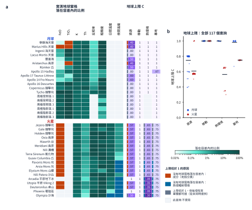
| 場址 | FeO（wt%） | TiO₂（wt%） | K（wt%） | Th（ppm） | 風化層上限（窗格數） | 基岩上限（窗格數） | 上限處相符 | 沒有地球窗格落在容差內 | 所在地（上限窗格多數） |
|---|---|---|---|---|---|---|---|---|---|
| 寧靜海天窗（月球） | 18.1 | 7.6 | 0.11 | 2.7 | 0.40（135） | 1.0（1） | K、Th | TiO₂ | 西澳與南澳 |
| Marius Hills 天窗（月球） | 21.2 | 7.8 | 0.10 | 4.4 | 0.40（243） | 0.80（1） | K、Th | FeO、TiO₂ | 西澳與南澳 |
| Aristarchus 高原（月球） | 18.7 | 5.7 | 0.28 | 8.7 | 0.40（353） | 0.70（1） | K、Th | TiO₂ | 西澳、昆士蘭 |
| Apollo 16 Descartes（月球） | 7.6 | 0.86 | 0.09 | 2.9 | 0.80（16） | 1.0（40） | FeO、TiO₂、Th | – | 奧勒岡、加州 |
| Apollo 14 Fra Mauro（月球） | 14.0 | 2.9 | 0.37 | 11.5 | 0.60（5） | 1.0（2） | FeO、TiO₂ | – | 華盛頓州；西班牙西部 |
| 南極受照區 1（月球） | 6.7 | 0.09 | 0.04 | 1.9 | 0.80（6） | 1.0（105） | FeO、TiO₂、Th | – | 奧勒岡、加州 |
| 南極陰影區 1（月球） | 6.2 | 0.15 | 0.03 | 1.8 | 0.80（6） | 1.0（83） | FeO、TiO₂、Th | –* | 奧勒岡、加州 |
| Jezero 撞擊坑（火星） | 21.4 | – | 0.32 | 0.6 | 0.57（15） | 1.0（3） | K、Th† | FeO | 阿拉斯加、薩克其萬 |
| Gale 撞擊坑（火星） | 18.0 | – | 0.34 | 0.6 | 0.57（28） | 1.0（7） | K、Th† | FeO | 阿拉斯加、薩克其萬 |
| Arcadia 平原地下冰（火星） | – | – | 0.28 | 0.4 | 1（3）‡ | 1.0（519） | K、Th† | 夜間溫度 | 阿拉斯加 |
| Phoenix 著陸區（火星） | – | – | 0.26 | 0.4 | 1（5）‡ | 1.0（506） | K、Th† | 夜間溫度 | 阿拉斯加 |
| Olympia 沙海（火星） | – | – | 0.16 | 0.2 | 0.50（377） | 1.0（445） | K | 日間與夜間溫度 | 西澳、北領地 |
查詢化學值：月球為窗格平均，火星為足跡平均。相符：在上限窗格中至少一半落在容差內的性質。* 月球溫度不計分，但占三個南極陰影窗格 32–64% 面積的永久陰影冷阱可低到約 25 K (Paige et al., 2010b)，遠低於任何地球地表。† 火星 Th 只在地球分布的下緣才算相符，最接近的被涵蓋地球窗格仍差 1.4–1.8 ppm。‡ 此場址沒有伽瑪射線 FeO 值，只以 K 與 Th 計分。火星場址的熱環境與基地選址上限：Jezero 與 Gale 為 0.65 與 0.75，Arcadia 與 Phoenix 為 0.35 與 0.75，Olympia 沙海為 0.30 與 0.75。所有場址的移動上限都是 1。基岩上限：每個窗格至少三筆 GEOROC 分析的全岩中位數（6,172 個窗格具備全部四項性質）。
3.2 地表還是岩石：化學不足的兩個來源
風化層上限反映的是地球的岩石，還是地表的風化？這可以在兩條軌都有實測的同一批窗格中檢驗（圖 7c、d）。在 616 個同時有表土與全岩 FeO 的窗格中，表土 FeO 中位數為 3.6 wt%，岩石為 8.1 wt%；表土在 79% 的窗格中較低，在岩石屬基性（FeO 至少 9 wt%）的 270 個窗格中有 99.6% 較低，而且兩者沒有相關（Spearman ρ = −0.02）；TiO₂ 的模式相同（0.63 對 1.03 wt%）。航空鉀與全岩鉀相近（中位數 1.46 對 1.37 wt%；332 個窗格），航空釷則高於全岩（9.4 對 5.1 ppm；274 個窗格），正符合風化帶走活動性元素、把釷留在抗風化礦物、黏土與氧化物中的預期 (Dickson & Scott, 1997; Wilford, 2012)。在兩軌都有全部四項性質的 88 個窗格中，全岩能符合 59 個月球查詢中 25 個的全部資源性質，表土一個也不能，平均資源上限則從 0.69 升到 0.84。
因此不足有兩個可以分開的來源。對類似高地、低鈦與極區的月球目標（包括全部六個南極窗格），在風化層失敗的同一地點，地球岩石中就有相符的組成，所以風化層的不足主要是地球風化、混合後的地表性質。對高鈦月海，不足在岩石中依然存在：在這些配對窗格中，寧靜海在基岩軌上只達到 0.40，Marius Hills 只有 0.20；在全部 6,172 個全岩窗格中，也只有一個符合寧靜海，沒有任何一個符合 Marius Hills。火星地殼的鐵也一樣，只有約 0.1% 的全岩窗格能達到。這些才是由岩石成因、而非風化所造成的不足（第 3.6 節）。
3.3 對權重與容差的穩健性
在關鍵的意義上，風化層上限不依賴所選的權重。上限要等於 1，必須有一個窗格符合所有所需性質；若這樣的窗格不存在，任何正權重都造不出它，所以上限小於 1 的查詢在全部 1,000 組隨機權重下都維持小於 1。上限的數值則會變動：對月球查詢取平均，資源上限在隨機權重的第 5 百分位為 0.63、第 95 百分位為 0.97，中位數 0.83（預設權重為 0.75）；寧靜海天窗則為 0.26 至 0.86（圖 S12）。把所有容差乘上 0.5、1、1.5 與 2 時，月球資源上限平均從 0.62 升到 0.75、0.82 與 0.92；但即使容差加倍，仍有兩個高鈦月球查詢找不到 TiO₂ 容差內的地球窗格，52 個火星查詢中有 47 個找不到 FeO 容差內的窗格，也有一個火星查詢找不到夜間溫度容差內的窗格。容差減半時，全部 58 個火星查詢的釷都變得無法提供，證實它在預設容差下的相符只建立在地球分布的下緣。
3.4 啟發式類比與性質層級相符之間的落差
以 80 處已知類比場址的目錄評判，啟發式篩選達成了它的設計目的。在 31 個具名查詢上，從候選池隨機抽出的前 30 名含有預期類型目錄類比的機會，約為從所有窗格隨機抽出的 12 倍（12.2 倍；95% 信賴區間 7.0–19.1）。任一門檻改變 ±50% 時富集維持（11.1 至 14.8 倍），但它依賴小的候選池（最小池 1,200 個窗格時為 4.2 倍）；月球查詢的結果幾乎全部來自「鄰近玄武岩質火山」這一項條件（拿掉後為 1.3 倍；補充資料 S7）。條件與目錄都編碼了專家的推理，所以這只顯示篩選重現了專家的場域類別，不能說明它找到了物理上相符的場址。
以篩選未使用的資料、在相同單位上量測時，篩選出的候選沒有可偵測地比隨機窗格更接近查詢。在 37 個具名查詢（14 個不同的候選池）上，候選池成員落在容差內的機會比隨機窗格多 1.3 個百分點（95% 信賴區間 −3.2 至 5.2；p = 0.17），候選池與自己查詢的相符程度也不比其他查詢的候選池好（差異 0.004；95% 信賴區間 −0.030 至 0.050），約 5 個百分點以上的改善因此可以排除。逐項來看，篩選提高了某些相符、降低了另一些：月球候選池在 TiO₂（0.62 對 0.53）與 Th（0.45 對 0.31）上較常相符，在 FeO（0.23 對 0.32）與 K（0.06 對 0.12）上則較少（補充資料 S5）。
在伽瑪射線足跡尺度上，這個檢定在地球上有解析力，而行星上的結果則反轉。當查詢本身是地球窗格時，篩選出的候選符合其足跡尺度 K 與 Th 的機會比隨機的被涵蓋窗格多 5.6 個百分點（84 個查詢；95% 信賴區間 2.3 至 10.1），不過在乾燥場域中效果較小（+3.0 個百分點），候選只取自另一個大陸時則消失（−2.9 個百分點；95% 信賴區間 −8.8 至 2.4），這與同一測量區域內地圖岩性和航空放射性元素早已確立的關聯一致 (Dickson & Scott, 1997)。對月球與火星查詢，篩選出的候選符合足跡尺度 K 與 Th 的機會比隨機被涵蓋窗格少 7.6 個百分點（36 個查詢；95% 信賴區間 −9.5 至 −5.6），13 個候選池全部為負（精確符號翻轉 p = 1/8,192）。事先登記的判定規則對這個方向的顯著效果沒有對應結論，因此我們把方向登記為假說，在 80 個隨機查詢窗格上重新檢定：−7.5 個百分點（95% 信賴區間 −9.0 至 −5.8），兩輪合計 20 個不同的候選池全部為負。改用方框平均、分開兩個測量區域、加寬足跡核、讓隨機窗格的區域組成與候選池相同，或把容差加倍，方向都不變（事後分析；補充資料 S5）。
這個偏移是組成上的，而且有方向（圖 5）。在月球足跡上，篩選窗格的中位數為 1.6 wt% K 與 8.7 ppm Th，所有被涵蓋窗格為 0.94 wt% 與 6.9 ppm，59 個月球查詢則為 0.06 wt% 與 2.1 ppm；在火星足跡上分別為 1.5 wt% 與 8.4 ppm、0.97 wt% 與 7.4 ppm、0.32 wt% 與 0.6 ppm。在計算上限所用的篩選條件下，117 個查詢共用 23 個不同的候選池，月球 4 個、火星 19 個。從每個候選池的查詢指向其篩選窗格中位數的向量，在全部 23 個池中都指向較高的鉀，除了一個之外也都指向較高的釷，在對數 K–Th 空間中與鉀軸夾 −11° 至 62°；每個候選池的中位數在鉀上都高於所有被涵蓋地球窗格的中位數，23 個中有 19 個在釷上也較高。從查詢到地球中位數的那一大段偏移，是地球地表本身的組成；篩選再朝同一方向加上一段較小的偏移，指向上部大陸地殼（約 2.3 wt% K、10.5 ppm Th (Rudnick & Gao, 2003)）與洋島玄武岩（1.2 wt% K、4.0 ppm Th (Sun & McDonough, 1989)）。月球與火星查詢的 K 低了一到兩個數量級；在全部 59 個月球與 52 個火星情況中，篩選候選池的 FeO 也都比查詢低。
經典類比場址也位於同樣的位置。有航空測量涵蓋的已編目場址中，標記為月球類比的有 7 處、火星類比的有 10 處（表 S25），其足跡尺度 K 為 0.86–1.98 wt%，沒有任何一處落在 59 個月球或 58 個火星查詢中任一者足跡尺度 K 的容差內。沒有航空涵蓋的場址可以用物理性質評判：Kilauea、Mauna Kea、阿他加馬（Yungay）與麥克默多乾谷，公里尺度粗糙度最多只符合 18 個具名火星查詢中的 2 個，在火星基地選址分數上位居地球窗格的第 18–30 百分位。

| 診斷檢定 | 啟發式場域篩選 | 性質層級檢索 | 虛無參考 |
|---|---|---|---|
| 隨機前 30 名中預期類型的目錄類比（31 個具名查詢） | 密度為所有窗格的 12.2 倍（95% 信賴區間 7.0–19.1）；月球結果來自火山條件 | 目錄場址位於用途分數的第 43–55 百分位 | 1 倍 |
| 同單位性質落在容差內的相符率（37 個具名查詢） | +1.3 個百分點（95% 信賴區間 −3.2 至 5.2） | – | 隨機窗格：0 |
| 足跡尺度 K 與 Th，以地球窗格為查詢（正對照） | +5.6 個百分點（2.3 至 10.1）；只取另一大陸 −2.9（−8.8 至 2.4） | – | 隨機窗格：0 |
| 足跡尺度 K 與 Th，月球與火星查詢 | −7.6 個百分點（−9.5 至 −5.6），13 個池全部為負；80 個隨機查詢 −7.5（−9.0 至 −5.8），20 個不同的池全部為負 | – | 隨機窗格：0 |
| 有航空涵蓋的已編目類比場址，落在任一查詢足跡尺度 K 的容差內 | 標記月球的 7 處與標記火星的 10 處都沒有（K 0.86–1.98 wt%） | – | – |
| 檢索效率，月球型 FeO / K / Th | 0.02 / −0.19 / 0.00 | 估計 0.52 / 0.58 / 0.77；最近鄰 0.61 / 0.59 / 0.77 | 隨機 0；實測 1 |
| 檢索效率，火星足跡上的 K | −0.21 | 估計 0.27（90% 信賴區間 0.24–0.30）；最近鄰 0.23 | 隨機 0；實測 1 |
| 排除 115–1,000 km 內鄰近窗格時 K 的檢索效率 | −0.22 至 −0.08 | 估計 0.58 降至 0.50（月球）、0.27 降至 0.19（火星） | 隨機 0；實測 1 |
| K–Th 相符後保留的表土 FeO 與 TiO₂（月球查詢） | 篩選與隨機窗格相同（−0.1 個百分點） | K–Th 相符窗格 −4.7 個百分點（106 個查詢；−8.0 至 −0.1） | 隨機窗格：0 |
| 容差乘上 0.5、1 與 2 時月球型 K 的檢索效率（事後分析） | −0.10 / −0.18 / −0.38 | 估計 0.35 / 0.58 / 0.77；最近鄰 0.43 / 0.59 / 0.69 | 隨機 0；實測 1 |
百分點指相符率的百分點。檢索效率：式 4，在最接近行星值的保留地球窗格上，以前 30 個空間上互不重疊的候選計算。已編目場址一列屬事後分析。詳見補充資料 S5–S7。
3.5 不同目標的限制條件不同
哪一項性質限制了上限，取決於目標；最佳地球窗格的位置也是如此（圖 6）。在月海，限制是化學的：公里尺度粗糙度處處可以相符，但月海程度的鈦與鐵無法在風化層中與月球的鉀、釷同時取得，高鈦目標的資源上限因此停在 0.40。在月球南極，順序反轉。類似高地的 FeO、TiO₂ 與 Th 可在奧勒岡中部與加州北部的七個窗格中相符，六個南極窗格的資源上限在那裡達到 0.80（只缺月球的鉀，0.03–0.04 wt%），全世界也有 173 個全岩窗格相符；照明與熱環境則在地球上沒有對應：這些窗格上空的太陽仰角從不超過約 7.5°，整個月球日都是低太陽角，而地球上太陽低於 10° 的日照比例最高只有約 0.37，出現在緯度 70° 附近；永久陰影冷阱則可低到約 25 K (Paige et al., 2010b)。在火星上，兩類限制同時存在。鉀、反照率、粗糙度與日間溫度都能各自相符，但地殼 FeO 無法相符，近一半具名查詢的夜間溫度也無法相符，所以沒有任何火星查詢的熱環境或基地選址上限達到 1，所有有 FeO 值的資源上限都停在 0.57。
已編目場址位在這些上限之下，也不在達到上限的窗格附近。就南極資源用途而言，Nördlinger Ries 與 Lava Beds 得 0.60，Meteor Crater 0.30，Craters of the Moon 0，上限則為 0.80。就 Jezero 撞擊坑而言，十處有實測化學、標記為火星類比的場址，資源分數全部是 0（上限 0.57 在阿拉斯加西南部與薩克其萬達到）；熱環境分數則從 0（Kilauea、Mauna Kea）到 0.65（萬煙谷），上限在 3,864 個窗格中達到，其中 97% 位於北緯 50° 以北。

3.6 類比空缺的地球化學成因
地球性質空間中的空缺，來自三個天體不同的分異過程（圖 7）。月球的岩漿海在無水、還原、沒有板塊回收的環境中結晶；月海玄武岩是岩漿海凝固時形成的堆晶源區部分熔融的產物，高鈦玄武岩取樣自晚期含鈦鐵礦的堆晶 (Shearer et al., 2006)。Apollo 樣本呈現了這個結果：在 Apollo 11、12、14、15 與 17 號玄武岩的 923 筆全岩分析中，依 Neal 與 Taylor (Neal & Taylor, 1992) 的分類有 442 筆屬高鈦，任務中位數為 11.2（Apollo 11）與 12.1 wt% TiO₂（Apollo 17），FeO 約 19 wt%，鉀的中位數只有 0.05 wt%。地球玄武岩則源自沒有這類堆晶的橄欖岩地函：GEOROC 的 91,461 筆地球玄武岩分析中，99.9% 的 TiO₂ 不超過 5.6 wt%；地球玄武岩全岩的 99% 密度範圍在 FeO 與 TiO₂ 上涵蓋了 59 個月球查詢中的 52 個，但兩個高鈦月海查詢都不在其中。月球的鉀與釷集中在 KREEP 成分中，也就是岩漿海結晶的殘餘，分布於 Procellarum KREEP 地體 (Jolliff et al., 2000)；在它以外，月球地殼兩者都很貧乏，而 Apollo 的 KREEP 玄武岩鉀達 0.47 wt%、FeO 11.4 wt%。
相對地，地球的鉀與釷集中在大陸地殼，它在聚合邊界有水參與的熔融，以及地殼內部的分異中，逐步富集了不相容元素 (Rudnick & Gao, 2003; Taylor & McLennan, 2009)。在場域分類中讀起來像「玄武岩質、火山、乾燥、裸露」的大陸場域，因此位於演化程度高、富鉀的地殼上，或是穿過這種地殼噴發的玄武岩上，而這正是篩選放置候選的地方。最接近月球鉀含量的地球組成是洋脊玄武岩（平均 0.13 wt% K、10.4 wt% FeO (Gale et al., 2013)；正常中洋脊玄武岩 0.06 wt% K、0.12 ppm Th (Sun & McDonough, 1989)），由上部地函的乾式減壓熔融形成；它構成的是海床，不在陸地索引之中。火星地殼是玄武岩質的，源自比地球更富鐵的地函，釷含量也低 (McSween et al., 2009; Taylor et al., 2010; Taylor et al., 2007)；地球玄武岩的 FeO 中位數為 10.9 wt%，只有 5.5% 的地球玄武岩分析達到火星足跡的最低值 14.2 wt%。如第 3.2 節所量化，地表還有一層稀釋作用。地球表土被石英與有機質稀釋，並受化學風化改造，風化帶走活動性元素、留下釷 (Wilford, 2012)；月球風化層則在真空中由撞擊粉碎當地岩石形成，火星風化層由撞擊與稀薄寒冷大氣下的物理風化形成；地球表土窗格的 FeO 中位數只有 2.7 wt%，玄武岩質岩石則為 10.9 wt%。因此風化層上限結合了兩件事：一是岩石成因上的空缺，也就是地球缺少月球型的堆晶源區與富鐵地函；二是地球水圈與生物圈附加的地表效應。
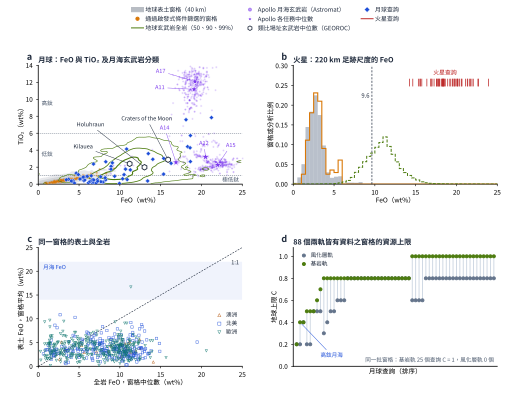
4空間可預測性與外推前緣
4.1 為什麼地表化學無法跨大陸遷移
地球地表化學無法只靠地形與氣候外推，原因是地質性的。以澳洲或北美訓練、在另一地測試的估計，每個目標都失敗（R² 介於 −4.68 與 −0.13）；加入反射率、陽離子交換容量、以歐洲為第三個區域，並做自監督預訓練，也沒有任何目標達到 0.30 的門檻（補充資料 S6）。失敗主要來自水準偏移（圖 8d）。無衰減疑慮的澳洲窗格 K 中位數為 0.65 wt%，北美為 1.52 wt%，澳洲的釷卻比較高（8.3 對 7.3 ppm），因此 Th/K 中位數為 12.4 對 4.9。這是穩定的澳洲大陸上長期深度風化的特徵：風化從長石與雲母中淋溶出鉀，把釷留在抗風化礦物與鐵氧化物中 (Wilford, 2012; Dickson & Scott, 1997)。共變量並沒有描述它：模型可用的風化指標「每單位黏土的土壤陽離子交換容量」在澳洲並不較低（中位數 0.105 對 0.083），在兩個大陸內與 Th/K 都沒有相關（|ρ| ≤ 0.10），而且在它的每一個四分位區間中，澳洲窗格的 K 都維持 0.59–0.71 wt%，北美則為 0.90–1.75 wt%。北美的 Th/K 在北緯 25° 到 75° 的每一個緯度帶都介於 3.7 與 5.2 之間，所以在北美這個對比並不綁定某一種地表類型。共變量描述的是現在的土壤與氣候，而不是其下風化剖面的深度與年代；因此以北美訓練的樹模型高估澳洲鉀 0.96 wt%（1.8 個標準差），並低估其釷 2.4 ppm。
4.2 實測附近的補值
相對地，在實測地面附近，地球化學可以附校準過的區間估計（圖 8c）。在距實測 300 km 內，R² 分別為 K 0.64、Th 0.41、FeO 0.40、TiO₂ 0.32，偏差絕對值不超過 0.04 個標準差，90% 區間涵蓋 90–93% 的測試窗格。在相同的折上（事後分析），樹模型勝過共變量最近鄰與純空間內插：在 300 km 內，K 的 R² 樹模型為 0.65、最近鄰 0.53、反距離加權 0.46、只用位置的高斯過程 0.12，四個目標都是樹模型最好（表 S36）。因此即使在短距離內，只靠位置所帶的地球化學資訊也少於共變量；預測能力則隨距最近標籤的距離與區域而下降（補充資料 S6）。
4.3 資料稀疏地區的誤差傳遞
估計誤差以兩種方式傳到檢索。第一是排序。在保留的地球窗格上，依估計排序找到容差內窗格的機會遠高於篩選：月球型 FeO、K 與 Th 的檢索效率為 0.52、0.58 與 0.77，篩選為 0.02、−0.19 與 0.00，負值表示篩選選到相符窗格的機會比隨機排序還低（圖 8a；表 3）。共變量空間的最近鄰一樣好（0.61、0.59 與 0.77），所以估計提供的是校準過的區間，而不是更好的排序。在火星足跡上，K 估計達到 0.27（90% 信賴區間 0.24–0.30），最近鄰為 0.23，篩選為 −0.21，這是唯一同時勝過兩者、達到事先登記標準的情況。這個順序在不同容差下都成立（事後分析；圖 8b）：月球型 K 在容差減半、預設與加倍時，依估計排序分別為 0.35、0.58 與 0.77，篩選則從 −0.10 降到 −0.18 與 −0.38，因為較寬的容差獎勵的正是篩選避開的低鉀地面。
第二是透過式 2 的相符機率。以估計的平均 90% 區間寬度（K 1.35 wt%、Th 9.7 ppm）計算，一個完全置中的估計，其相符機率在 K 最高只有 0.37、Th 為 0.50，因此估計的鉀與釷無法像實測值那樣把用途分數拉高，而允許使用估計值也沒有提高任何查詢的地球上限。往區域平均值收縮又在極端值處加重了問題：在實測分布最低 5% 的窗格中（月球與火星類的值就落在這裡），估計只把 12%（K）、46%（Th）、25%（FeO）與 4%（TiO₂）放進它自己的最低 5%。性質耦合的檢定也指向同一方向：足跡尺度 K 與 Th 最接近月球或火星查詢的地球窗格，符合其保留表土 FeO 與 TiO₂ 的機會比隨機被涵蓋窗格少 4.7 個百分點（106 個查詢；95% 信賴區間 −8.0 至 −0.1），因為在這些調查中，低鉀、低釷代表富石英、貧鐵的表土，在月球上卻代表斜長岩或月海玄武岩。用途需要的每一項性質都必須直接比對。
4.4 尺度依賴：平均掩蓋了什麼
軌道比較平均了數十公里，野外試驗卻作用在露頭上，所以支撐階梯問的是相符如何隨尺度改變（圖 3）。在 1,994 個無衰減疑慮的被涵蓋窗格中，65% 至少含有一個 1 km 格點，其航空 K 與 Th 落在某個月球查詢的容差內；隨區塊加大，這個比例在 4 km 降到 50%、8 km 降到 41%、40 km 降到 21%；火星查詢則從 42% 降到 16%、7.8% 與 1.9%；在完整的足跡上，被涵蓋窗格中有 20% 符合某個月球查詢，1.0% 符合某個火星查詢。窗格內 K 的標準差中位數，從 1 km 格點的 0.23 wt% 降到 20 km 區塊的 0.10 wt%，這就是局部極值消失的原因。基岩這一階在岩石中也呈現同樣的效應：在 6,140 個至少有三筆同時含 K 與 Th 之全岩分析的窗格中（共 137,673 筆分析），32% 至少有一筆分析落在某個月球查詢的容差內，40% 落在某個火星查詢的容差內，但窗格中位數只有 7.6% 與 15% 做到；同一窗格內各分析的 K 標準差中位數為 0.63 wt%。
具有月球型鉀與釷的公里尺度斑塊因此在地球上很常見，卻被足跡平均掉了。不過它們不出現在經典的月球類比場址上（圖 9a）。在地表大多裸露的 Craters of the Moon 與 Meteor Crater 窗格內，沒有任何 1 km 格點同時在 K 與 Th 上符合任何月球查詢；1 km 最低鉀含量分別為 0.48 與 0.61 wt%，在 Craters of the Moon 也只有 0.5% 的格點落在最富鉀月球查詢的鉀容差內，而且釷不相符。在 Craters of the Moon 周圍、220 km 火星足跡內的 1 km 格點中，有 2.1% 的 K 不超過 0.57 wt%，但從 8 km 到 220 km 的每一種支撐，平均都是 1.59–1.65 wt%。在標記為火星類比的場址中，Pilbara（7.9% 的格點）、Pilot Valley（2.2%）與 Death Valley（0.9%）在 1 km 尺度上有少量相符斑塊，到 4 km 縮小到最多 2%，到 8 km 全部消失。因此軌道尺度的結果並不否定局部露頭的岩石學價值；它說明的是：單一場址的局部相似性，無法外推到採礦試驗、區域熱環境試驗或整個著陸橢圓所涵蓋的範圍。
4.5 地形形狀的解析度極限
公里尺度的地形形狀沒有帶來可偵測的類比資訊。一個以月球與地球高程窗格、不用標籤訓練的小型對比式編碼器 (van den Oord et al., 2018; Chen et al., 2020)、30 個地貌計量描述子 (Kreslavsky & Head, 2000; Rosenburg et al., 2011) 與 geomorphon 簽章 (Jasiewicz & Stepinski, 2013; Jasiewicz et al., 2014)，在所有窗格上為 31 個查詢各自最多找回兩個預期類型的目錄類比（隨機排序的期望為 0.40）；在篩選的候選池內，它們的排序也不比隨機好（編碼器 6 個命中，期望 4.86；經 Holm 校正後沒有 p 值低於 0.90）。把月球與地球窗格降解到火星 MOLA 的 1.85 km 格距後，六個月球編碼器命中有五個消失，四個描述子命中有兩個消失（圖 9b），這標出了現有全球行星地形無法支撐形狀檢索的解析度界線；較高解析度的熔岩管搜尋見補充資料 S9。

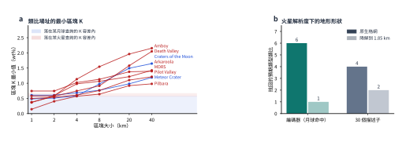
5討論與意涵
5.1 功能解耦：類比場址的邊界條件清單
結果依序回答了三個研究問題。對 RQ1，地球很容易提供公里尺度的物理性質；在軌道量測的支撐上，它提供不了月海的風化層化學、火星地殼的鐵、足跡尺度的火星釷、最寒冷的火星夜晚，以及月球的極區照明與冷阱。化學不足的一部分是地球風化地表的性質，因為同一批窗格中的地球岩石能符合類似高地與極區的月球目標；另一部分來自岩石成因，因為高鈦月海玄武岩與富鐵的火星玄武岩在地球上只以罕見、零星的產狀存在。對 RQ2，啟發式場域條件重現了專家使用的類別，卻沒有選到目標的性質，而且錯的方向可以預測：偏向富鉀、富釷的大陸地殼，經典類比場址也落在這裡。對 RQ3，地球化學可以在實測地面附近以校準過的區間估計，而且比只用位置好，但不能跨越風化歷史不同的大陸；公里尺度的異質性則在軌道足跡的尺度上被平均掉。
由此得到的建設性結論是功能解耦。沒有單一場址能作為萬用類比，但每種用途都可以分配給能提供其所需性質的環境：地形與移動交給依實測粗糙度選出的野外場址；原料化學交給經軌道與樣本化學核對的實驗室模擬物與參考物質 (Taylor et al., 2016)；地球達不到的熱與照明環境交給熱真空設施（表 4）。把溫度納入用途，並不是在扣野外場址的分；它記錄的是某項性質無法在戶外重現，因此把相關驗證（例如低於約 185 K 的熱控或揮發物保存）交給試驗艙，野外場址則依地形與作業評判。既有的類比場址在這個分工中保有它們的價值：作業、後勤、訓練，以及它們確實相符的性質；地球上限則說明某個場址能代表哪些性質。在寧靜海資源用途上得分 0.40 的場址，已是實測地球風化層能達到的最接近程度，缺少的 0.60 是鈦與鐵，必須從別處取得。
| 用途與所需性質 | 地球上限（風化層） | 地球野外場址能提供的 | 必須從別處取得的 | 建議的環境 |
|---|---|---|---|---|
| 移動與通行性：公里尺度粗糙度 | 117 個查詢全部為 1 | 許多場址的粗糙度相符 | – | 依實測粗糙度選出的野外場址 |
| 月球高地與極區原料：FeO、TiO₂、K、Th | 0.80（南極、Descartes） | FeO、TiO₂、Th（奧勒岡中部、加州北部）；基岩有 173 個窗格相符 | 月球程度的 K | 以地球材料為基礎，在模擬物中調整 K |
| 月海原料：高鈦、高鐵玄武岩（由鈦鐵礦提取氧） | 0.40 | 只有 K 與 Th | 月海程度的 Ti 與 Fe（基岩：0–1 個窗格） | 實驗室模擬物 |
| 火星玄武岩原料：FeO、K、Th | 0.57 | K 與 Th（阿拉斯加西南部、薩克其萬） | 富鐵化學（基岩：約 0.1% 的窗格） | 參考物質與模擬物 |
| 火星地表熱環境：日夜溫度、反照率 | 0.30–0.65 | 日間溫度與反照率（北方針葉林與亞北極窗格） | 低於約 185 K 的夜晚 | 熱環境試驗艙；南極高原只提供夜溫 |
| 月球極區照明與冷阱 | 地球上沒有對應 | 極區與高原場址的長時間低太陽角與寒冷（部分） | 整天的低太陽角；約 25 K | 熱真空設施 |
| 火星地下冰 | 篩選與實測一致 | 永凍土地區（含冰查詢候選池的 0.94） | – | 依實測永凍土選出的野外場址 |
上限取自表 2、圖 4 與圖 6 及第 3 節；基岩窗格數取自第 3.1 與 3.5 節。這個分工是由上限推得的建議，並非經過檢驗的流程。
5.2 任務情境：Artemis 與月球南極
對 Artemis III 與後續任務鎖定的南極區域 (Flahaut et al., 2020; Peña-Asensio et al., 2025)，分工可以很具體（圖 6a）。地形與移動演練可以在任何公里尺度粗糙度與著陸區相符的地球場址進行，因為每個南極窗格都有很多這樣的相符窗格。類似高地的 FeO、TiO₂ 與 Th，在風化層尺度上可於奧勒岡中部與加州北部取得（資源上限 0.80），在基岩尺度上全世界有 173 個全岩窗格相符，所以原料試驗可以從地球材料出發，再在模擬物中把鉀調向月球值；已編目的月球類比場址在這個用途上最多只達到 0.60。照明與熱環境則無法在野外取得：整個月球日的低太陽角幾何，以及永久陰影冷阱約 25 K 的溫度 (Paige et al., 2010b)，需要熱真空設施；地球的極區與高原場址則可以進行長時間低太陽角、寒冷與黑暗下的作業。對寧靜海與 Marius Hills 這類擁有最著名月球天窗的月海目標 (Haruyama et al., 2009; Robinson et al., 2012)，地球上的玄武岩熔岩管區仍是探勘熔岩管的場域類比；其中 Craters of the Moon 的基岩最富鐵（15.9 wt% FeO），但用於從鈦鐵礦提取氧的高鈦原料必須來自模擬物。
5.3 任務情境：Jezero 撞擊坑與返回樣本
在 Mars 2020 探測車採集樣本、準備送回地球的 Jezero 撞擊坑 (Farley et al., 2020)，風化層尺度的資源上限停在 0.57：最佳窗格在阿拉斯加西南部與薩克其萬，符合 K 與 Th 而不符 FeO；有實測化學的已編目火星場址則三項都不符（圖 6b）。在基岩尺度上，有三個地球全岩窗格同時符合 FeO、K 與 Th，分別在巴西東北部、安大略省西北部與芬蘭西南部，這指出了可以尋找富鐵、低釷參考岩石的地方。熱環境則一分為二（圖 6c）：日間溫度與反照率在 3,864 個窗格中同時相符，幾乎都在北方針葉林與亞北極的緯度；但 202 K 的模式夜間溫度只在南極洲達到（1,680 個窗格，全部在南緯 70° 以南），而那裡沒有無雪反照率可以完成相符。在地球場址演練樣本挑選、封存或處理，因此都是在地球的化學與熱環境中進行；對解讀火星樣本重要的性質，例如富鐵的玄武岩化學，較適合以參考物質呈現，而不是期待野外場址提供。火星地下冰是篩選與實測唯一一致的情況：含冰查詢的候選池大多是永凍土（0.94，隨機窗格為 0.53），不過兩者共用部分輸入。
綜合兩個情境，結果提示一種「先驗證、後推薦」的工作順序。先說明用途與它需要的性質，並以物理單位、在行星量測與預定試驗的尺度與深度上設定容差。接著以風化層軌與基岩軌的實測地球資料計算該用途的地球上限，並列出沒有任何地球窗格能達到的性質及其成因。再依所需性質排序候選，估計只用在實測地面附近；場域描述與專家目錄則用來依交通、後勤、許可與既有研究篩選已排序的候選。每個推薦場址都在野外或樣本中驗證，地球缺少的部分分配給模擬物或設施，選址標準則在讀取驗證資料之前固定。
5.4 系統性不確定性與未來的儀器
推論受到設計的限制。確認階段的檢定是依序登記的，每一份都在看過先前結果之後；綜合階段的一切都屬事後分析。候選池數量少（事先登記的檢定每輪 13–14 個，總共 20 個不同的池）、大小不一且部分巢套，所以對池的 bootstrap 區間可能覆蓋不足 (Cameron et al., 2008)，池層級的精確檢定也很粗略。篩選只是專家做法的一種寫法；較細的地圖、撞擊構造條件或其他門檻可能有不同表現，不過 ±50% 內的門檻變動都沒有改變目錄結果，而 80 處目錄場址中有 45 處是同一資料集的風成場址。檢索效率是在最接近行星值的地球窗格上量測的，因為大多數行星化學值落在地球範圍的邊緣或之外。
資料也有限制。GEOROC 是已發表分析的彙編，偏好岩石學上特殊的岩石，而非具代表性的地表覆蓋。這個偏差對基岩軌有利：一個富含極端火成岩組成的彙編，若有影響，也只會高估地球岩石達到月球與火星值的頻率；然而在 339,587 筆陸上火山岩與深成岩分析中，只有一個窗格符合寧靜海目標，符合任一月球目標的窗格中位數也只有 0.66%。Apollo 分析來自少數幾個著陸點，代表的是被帶回的樣本，而不是整個月海。航空 K 與 Th 在本文只有澳洲與北美，兩地的測量校準方式不同；兩條軌的配對比較只建立在 88 到 616 個窗格上，多數在北美西部；1 km 那一階建立在原生航空格網與土地覆蓋遮罩上，而非露頭尺度的量測。絕對容差對月球與火星的低值較寬鬆，足跡核也比製成的地圖窄，不過較寬的核、區域配對與加倍的容差都沒有改變足跡結果的方向。火星地表溫度來自氣候模式，南極的地球溫度只依據一年的 MODIS 資料，月球 WAC 產品也不是反照率。分析只適用於 20–80 km 的窗格；無法進行盲測的專家評分，每個模型也只以單一隨機種子訓練。這些限制各自指向一種能讓上限更精確的量測：其他大陸的航空或軌道伽瑪射線涵蓋，包括接近月球鉀含量的海洋與蛇綠岩地體；經典場址的露頭尺度地球化學；實測而非模式的火星地表溫度；與窗格尺度相符的月球極區熱圖 (Paige et al., 2010b)；用來驗證仍未檢查之含水礦物條件的成像光譜；以及返回樣本的分析，可用來校準軌道值與地球值。
6結論
把月球、火星與地球的觀測在單位、支撐與感測深度上整合後，類比問題就變成可以量測的問題。在軌道量測 40–220 km 的支撐上，地球很容易重現公里尺度的物理性質，但沒有任何地球風化層窗格能同時符合月球的 FeO、TiO₂、K 與 Th（資源上限平均月球 0.75、火星 0.61）；火星地殼的鐵、足跡尺度的火星釷、高鈦月海玄武岩、低於約 185 K 的火星夜晚與月球冷阱都在地球範圍之外，而且在隨機權重與加倍容差下仍然如此。化學不足有兩個來源：在同一批窗格中，地球岩石能符合風化地表無法符合的類似高地與極區的月球目標；高鈦月海玄武岩與富鐵的火星玄武岩則即使在岩石紀錄中也幾乎沒有，只出現在不到 1% 的窗格。公里尺度的相符斑塊存在，但在軌道足跡上被平均掉，經典月球場址上也沒有。啟發式場域條件重現了專家使用的類別，使目錄類比的密度提高約 12 倍，卻在每個不同的候選池中把候選推向大陸地殼的組成，經典類比場址也有同樣的偏移。依同單位性質排序找到相符地球窗格的機會遠高於篩選，地球化學也能在實測地面附近估計，但不能跨越風化歷史不同的大陸。類比選址因此應說明用途與尺度，把每項所需性質分配給能提供它的野外場址、模擬物或設施，並在每個推薦場址旁報告地球上限與地球無法提供的性質。
開放研究
所有輸入都是公開資料（表 1、S3 與 S4）；Apollo 玄武岩分析取自不需登入的公開 Astromat 介面。程式、各協定檔與其 SHA-256 雜湊值（補充資料 S1）、事後綜合分析的程式與輸出（補充資料 S11）、80 處類比目錄、查詢清單、結果檔與模型權重，將在期刊投稿前存放到附永久識別碼的公開典藏。雜湊值沒有連同第三方時間戳存證，因此只能證明檔案未被修改，無法證明凍結的時間。候選與地球上限可以在互動式 3D 視覺化介面 Analog Atlas 中瀏覽，它把查詢與候選的地形並排呈現（補充資料 S10，圖 S10），但沒有為本文的檢定增加證據。
資料致謝
月球資料：NASA/GSFC LOLA、NASA/GSFC/Arizona State University LROC、JAXA/SELENE、Lunar Prospector（NASA）、USGS Astrogeology（月球統一地質圖、Kaguya MI 鑲嵌圖）、LRO Diviner、Robbins 月球撞擊坑目錄、IAU／USGS 行星地名錄。火星資料：NASA/JPL/GSFC MOLA、ESA/DLR/FU Berlin HRSC、ESA/CNES/CNRS/IAS OMEGA、NASA/JPL/University of Arizona HiRISE、NASA/JPL/MSSS CTX、USGS Astrogeology、USGS SIM 3292、SWIM（PSI／JPL）。地球資料：NOAA NCEI ETOPO 2022；Copernicus DEM（© DLR e.V. 2010–2014 與 © Airbus Defence and Space GmbH 2014–2018，依 Copernicus 計畫由歐盟與 ESA 提供）；Copernicus Sentinel-2（經 Element 84 Earth Search）；USGS 3DEP；GLiM、SoilGrids、ESA WorldCover、Köppen–Geiger、全球乾燥度指數、Smithsonian GVP、Macrostrat、RESOLVE 生態區、Gunn 全球沙丘紀錄、NASA POWER（NASA Langley）、Natural Earth、Impact Earth 撞擊構造目錄。
致謝
本研究起始於 2026 NASA Space Apps Challenge 的參賽作品，題目為「Identify Earth Locations that Analog the Permanent Moon Base Locations and Mars」。本研究不是 NASA 的官方產品，也未經 NASA 背書。
參考文獻
- Astromat (2026). Astromaterials Data Synthesis: whole-rock analyses of lunar basalts (Apollo collections), retrieved 23 October 2026 through the Astromat REST API v5. Astromaterials Data System, Lamont-Doherty Earth Observatory of Columbia University. astromat.org
- Barber, R. F., Candès, E. J., Ramdas, A., & Tibshirani, R. J. (2021). Predictive inference with the jackknife+. The Annals of Statistics, 49(1), 486–507. doi:10.1214/20-AOS1965
- Barker, M. K., et al. (2016). A new lunar digital elevation model from the Lunar Orbiter Laser Altimeter and SELENE Terrain Camera. Icarus, 273, 346–355.
- Barnes, R., Lehman, C., & Mulla, D. (2014). Priority-flood: An optimal depression-filling and watershed-labeling algorithm for digital elevation models. Computers & Geosciences, 62, 117–127.
- Beck, H. E., McVicar, T. R., Vergopolan, N., Berg, A., Lutsko, N. J., Dufour, A., Zeng, Z., Jiang, X., van Dijk, A. I. J. M., & Miralles, D. G. (2023). High-resolution (1 km) Köppen-Geiger maps for 1901–2099 based on constrained CMIP6 projections. Scientific Data, 10, 724. doi:10.1038/s41597-023-02549-6
- Bibring, J.-P., et al. (2005). Mars surface diversity as revealed by the OMEGA/Mars Express observations. Science, 307, 1576–1581.
- Boynton, W. V., et al. (2007). Concentration of H, Si, Cl, K, Fe, and Th in the low- and mid-latitude regions of Mars. Journal of Geophysical Research, 112, E12S99.
- Cameron, A. C., Gelbach, J. B., & Miller, D. L. (2008). Bootstrap-based improvements for inference with clustered errors. The Review of Economics and Statistics, 90(3), 414–427. doi:10.1162/rest.90.3.414
- Canada Centre for Remote Sensing (n.d.). RADARSAT Constellation Mission Analysis Ready Data Canada Land Mosaic. Natural Resources Canada, Earth Observation Data Cube.
- Canadian Space Agency (n.d.). RADARSAT-1 – Heatmap of processed archived images; and Synthetic Aperture Radar (SAR) Python tutorial. Government of Canada Open Data.
- Chen, Z., Auler, A. S., Bakalowicz, M., Drew, D., Griger, F., Hartmann, J., et al. (2017). The World Karst Aquifer Mapping project: concept, mapping procedure and map of Europe. Hydrogeology Journal, 25, 771–785. doi:10.1007/s10040-016-1519-3
- Chen, T., Kornblith, S., Norouzi, M., & Hinton, G. (2020). A simple framework for contrastive learning of visual representations. ICML.
- Christensen, P. R., et al. (2001). Mars Global Surveyor Thermal Emission Spectrometer experiment: Investigation description and surface science results. Journal of Geophysical Research, 106(E10), 23823–23871. doi:10.1029/2000JE001370
- Cronbach, L. J., & Meehl, P. E. (1955). Construct validity in psychological tests. Psychological Bulletin, 52, 281–302. doi:10.1037/h0040957
- Cushing, G. E. (n.d.). Mars Global Cave Candidate Catalog (MGC3). USGS Astrogeology Science Center. astrogeology.usgs.gov
- Cushing, G. E., et al. (2007). THEMIS observes possible cave skylights on Mars. Geophysical Research Letters, 34, L17201.
- de Caritat, P., & Cooper, M. (2011). National Geochemical Survey of Australia: The Geochemical Atlas of Australia. Geoscience Australia Record 2011/20. doi:10.11636/Record.2011.020
- Dickson, B. L., & Scott, K. M. (1997). Interpretation of aerial gamma-ray surveys – adding the geochemical factors. AGSO Journal of Australian Geology & Geophysics, 17(2), 187–200.
- DIGIS Team (2026). GEOROC Compilations, version 13 (released 3 September 2026): Archaean Cratons; Complex Volcanic Settings; Continental Flood Basalts; Convergent Margins; Intraplate Volcanic Rocks; Ocean Basin Flood Basalts; Ocean Island Groups; Oceanic Plateaus; Rift Volcanics; Seamounts. GRO.data, Göttingen University. doi:10.25625/1KRR1P, doi:10.25625/1VOFM5, doi:10.25625/WSTPOX, doi:10.25625/PVFZCE, doi:10.25625/RZZ9VM, doi:10.25625/AVLFC2, doi:10.25625/WFJZKY, doi:10.25625/JRZIJF, doi:10.25625/KAIVCT, doi:10.25625/JUQK7N
- Dinerstein, E., et al. (2017). An ecoregion-based approach to protecting half the terrestrial realm. BioScience, 67(6), 534–545.
- Drusch, M., et al. (2012). Sentinel-2: ESA's optical high-resolution mission for GMES operational services. Remote Sensing of Environment, 120, 25–36.
- Duval, J. S., Carson, J. M., Holman, P. B., & Darnley, A. G. (2005). Terrestrial radioactivity and gamma-ray exposure in the United States and Canada. U.S. Geological Survey Open-File Report 2005-1413. doi:10.3133/ofr20051413
- European Space Agency [ESA] (2021). Copernicus Global Digital Elevation Model (GLO-30). doi:10.5270/ESA-c5d3d65
- Farley, K. A., Williford, K. H., Stack, K. M., Bhartia, R., Chen, A., de la Torre, M., et al. (2020). Mars 2020 mission overview. Space Science Reviews, 216, 142. doi:10.1007/s11214-020-00762-y
- Farr, T. G., et al. (2007). The Shuttle Radar Topography Mission. Reviews of Geophysics, 45, RG2004.
- Feldman, W. C., Maurice, S., Lawrence, D. J., Little, R. C., Lawson, S. L., Gasnault, O., et al. (2001). Evidence for water ice near the lunar poles. Journal of Geophysical Research: Planets, 106(E10), 23231–23251. doi:10.1029/2000JE001444
- Fergason, R. L., Hare, T. M., & Laura, J. (2018). HRSC and MOLA blended digital elevation model at 200 m v2. USGS Astrogeology Science Center.
- Fick, S. E., & Hijmans, R. J. (2017). WorldClim 2: New 1-km spatial resolution climate surfaces for global land areas. International Journal of Climatology, 37, 4302–4315. doi:10.1002/joc.5086
- Flahaut, J., Carpenter, J., Williams, J.-P., Anand, M., Crawford, I. A., van Westrenen, W., Füri, E., Xiao, L., & Zhao, S. (2020). Regions of interest (ROI) for future exploration missions to the lunar South Pole. Planetary and Space Science, 180, 104750. doi:10.1016/j.pss.2019.104750
- Forget, F., Hourdin, F., Fournier, R., Hourdin, C., Talagrand, O., Collins, M., Lewis, S. R., Read, P. L., & Huot, J.-P. (1999). Improved general circulation models of the Martian atmosphere from the surface to above 80 km. Journal of Geophysical Research, 104(E10), 24155–24175. Values from the Mars Climate Database v6.2 web interface.
- Fortezzo, C. M., Spudis, P. D., & Harrel, S. L. (2020). Release of the digital Unified Global Geologic Map of the Moon at 1:5,000,000-scale. 51st Lunar and Planetary Science Conference, abstract 2760.
- Foucher, F., et al. (2021). Definition and use of functional analogues in planetary exploration. Planetary and Space Science, 197, 105162.
- Friedman, J. H. (2001). Greedy function approximation: A gradient boosting machine. Annals of Statistics, 29(5), 1189–1232.
- Friedmann, E. I. (1982). Endolithic microorganisms in the Antarctic cold desert. Science, 215, 1045–1053. doi:10.1126/science.215.4536.1045
- Gale, A., Dalton, C. A., Langmuir, C. H., Su, Y., & Schilling, J.-G. (2013). The mean composition of ocean ridge basalts. Geochemistry, Geophysics, Geosystems, 14(3), 489–518. doi:10.1029/2012GC004334
- Ganin, Y., & Lempitsky, V. (2015). Unsupervised domain adaptation by backpropagation. ICML.
- Gelman, A., & Loken, E. (2014). The statistical crisis in science. American Scientist, 102(6), 460. doi:10.1511/2014.111.460
- Global Volcanism Program (n.d.). Volcanoes of the World. Smithsonian Institution.
- Golombek, M., Grant, J., Kipp, D., Vasavada, A., et al. (2012). Selection of the Mars Science Laboratory landing site. Space Science Reviews, 170, 641–737. doi:10.1007/s11214-012-9916-y
- Gorishniy, Y., Rubachev, I., & Babenko, A. (2022). On embeddings for numerical features in tabular deep learning. In Advances in Neural Information Processing Systems 35 (pp. 24991–25004).
- Gullikson, A. L., Titus, T. N., & Hunter, M. A. (2023). PAAD: The Planetary Aeolian Analog Database. U.S. Geological Survey data release. doi:10.5066/P9IFVZEX
- Gunn, A. (2026). The distribution of Earth’s wind-blown sand dunes. Nature Communications, 17, 8468. doi:10.1038/s41467-026-75466-y
- Hartmann, J., & Moosdorf, N. (2012). The new global lithological map database GLiM. Geochemistry, Geophysics, Geosystems, 13, Q12004.
- Haruyama, J., et al. (2009). Possible lunar lava tube skylight observed by SELENE cameras. Geophysical Research Letters, 36, L21206.
- Hassler, D. M., Zeitlin, C., Wimmer-Schweingruber, R. F., Ehresmann, B., Rafkin, S., Eigenbrode, J. L., et al. (2014). Mars’ surface radiation environment measured with the Mars Science Laboratory’s Curiosity rover. Science, 343, 1244797. doi:10.1126/science.1244797
- Hayne, P. O., et al. (2017). Global regolith thermophysical properties of the Moon from the Diviner Lunar Radiometer Experiment. Journal of Geophysical Research: Planets, 122, 2371–2400. doi:10.1002/2017JE005387
- Hays, L. E., Graham, H. V., Des Marais, D. J., Hausrath, E. M., Horgan, B., McCollom, T. M., et al. (2017). Biosignature preservation and detection in Mars analog environments. Astrobiology, 17(4), 363–400. doi:10.1089/ast.2016.1627
- Hengl, T. (2018). Long-term MODIS LST day-time and night-time temperatures, sd and differences at 1 km based on the 2000–2017 time series. OpenLandMap, Zenodo. zenodo.org/records/6458406
- Hinton, G., Vinyals, O., & Dean, J. (2015). Distilling the knowledge in a neural network. arXiv:1503.02531.
- Holm, S. (1979). A simple sequentially rejective multiple test procedure. Scandinavian Journal of Statistics, 6, 65–70.
- Hu, E. J., Shen, Y., Wallis, P., Allen-Zhu, Z., Li, Y., Wang, S., Wang, L., & Chen, W. (2022). LoRA: Low-rank adaptation of large language models. International Conference on Learning Representations. arXiv:2106.09685.
- IAU Working Group for Planetary System Nomenclature [IAU WGPSN] and USGS (n.d.). Gazetteer of Planetary Nomenclature. planetarynames.wr.usgs.gov
- Jasiewicz, J., Netzel, P., & Stepinski, T. F. (2014). Landscape similarity, retrieval, and machine mapping of physiographic units. Geomorphology, 221, 104–112.
- Jasiewicz, J., & Stepinski, T. F. (2013). Geomorphons — a pattern recognition approach to classification and mapping of landforms. Geomorphology, 182, 147–156.
- JAXA Earth Observation Research Center (n.d.). JAXA Earth database (cloud-optimised GeoTIFF; monthly normals of Terra MODIS land surface temperature, GCOM-W AMSR2 soil moisture content and GSMaP precipitation). Japan Aerospace Exploration Agency.
- Jolliff, B. L., Gillis, J. J., Haskin, L. A., Korotev, R. L., & Wieczorek, M. A. (2000). Major lunar crustal terranes: Surface expressions and crust-mantle origins. Journal of Geophysical Research, 105(E2), 4197–4216. doi:10.1029/1999JE001103
- Kenkmann, T. (2021). The terrestrial impact crater record: A statistical analysis of morphologies, structures, ages, lithologies, and more. Meteoritics & Planetary Science, 56, 1024–1070. doi:10.1111/maps.13657
- Kerner, H. R., Wagstaff, K. L., Bue, B. D., Gray, P. C., Bell, J. F., III, & Ben Amor, H. (2019). Toward generalized change detection on planetary surfaces with convolutional autoencoders and transfer learning. IEEE Journal of Selected Topics in Applied Earth Observations and Remote Sensing, 12(10), 3900–3918. doi:10.1109/JSTARS.2019.2936771
- Kreslavsky, M. A., & Head, J. W. (2000). Kilometer-scale roughness of Mars: Results from MOLA data analysis. Journal of Geophysical Research, 105(E11), 26695–26711.
- Kubota, T., Shige, S., Hashizume, H., Aonashi, K., Takahashi, N., Seto, S., et al. (2007). Global precipitation map using satellite-borne microwave radiometers by the GSMaP project: Production and validation. IEEE Transactions on Geoscience and Remote Sensing, 45, 2259–2275. doi:10.1109/TGRS.2007.895337
- Lakens, D. (2017). Equivalence tests: A practical primer for t tests, correlations, and meta-analyses. Social Psychological and Personality Science, 8, 355–362. doi:10.1177/1948550617697177
- Lawrence, D. J., et al. (2002). Iron abundances on the lunar surface as measured by the Lunar Prospector gamma-ray and neutron spectrometers. Journal of Geophysical Research, 107(E12), 5130.
- Lawrence, D. J., Elphic, R. C., Feldman, W. C., Prettyman, T. H., Gasnault, O., & Maurice, S. (2003). Small-area thorium features on the lunar surface. Journal of Geophysical Research, 108(E9), 5102. doi:10.1029/2003JE002050
- Lehnert, K., Su, Y., Langmuir, C. H., Sarbas, B., & Nohl, U. (2000). A global geochemical database structure for rocks. Geochemistry, Geophysics, Geosystems, 1, 1012. GEOROC precompiled compilations downloaded September 2026.
- Lehnert, K. A., Markey, K., Ji, P., Cai, Y., Hodges, K., Mercer, C., Walker, J. D., Ash, J., Evans, C., & Zeigler, R. (2019). MoonDB: 50 years of lunar sample data ready for the data revolution. 50th Lunar and Planetary Science Conference, abstract 2996.
- Lemmon, M. T., Wolff, M. J., Bell, J. F., III, Smith, M. D., Cantor, B. A., & Smith, P. H. (2015). Dust aerosol, clouds, and the atmospheric optical depth record over 5 Mars years of the Mars Exploration Rover mission. Icarus, 251, 96–111. doi:10.1016/j.icarus.2014.03.029
- Léveillé, R. (2009). Validation of astrobiology technologies and instrument operations in terrestrial analogue environments. Comptes Rendus Palevol, 8(7), 637–648.
- Liang, S., et al. (2021). The Global Land Surface Satellite (GLASS) product suite. Bulletin of the American Meteorological Society, 102(2), E323–E337. Data: MODIS snow-free blue-sky albedo climatology, 0.05°, glass.hku.hk
- Lucey, P. G., Blewett, D. T., & Jolliff, B. L. (2000). Lunar iron and titanium abundance algorithms based on final processing of Clementine ultraviolet-visible images. Journal of Geophysical Research, 105(E8), 20297–20305.
- Lucey, P. G., et al. (2014). The global albedo of the Moon at 1064 nm from LOLA. Journal of Geophysical Research: Planets, 119, 1665–1679. doi:10.1002/2013JE004592
- Mahony, C. R., Cannon, A. J., Wang, T., & Aitken, S. N. (2017). A closer look at novel climates: New methods and insights at continental to landscape scales. Global Change Biology, 23, 3934–3955. doi:10.1111/gcb.13645
- Malczewski, J. (2006). GIS-based multicriteria decision analysis: A survey of the literature. International Journal of Geographical Information Science, 20(7), 703–726. doi:10.1080/13658810600661508
- Malin, M. C., et al. (2007). Context Camera Investigation on board the Mars Reconnaissance Orbiter. Journal of Geophysical Research, 112, E05S04.
- Mañas, O., et al. (2021). Seasonal Contrast: Unsupervised pre-training from uncurated remote sensing data. ICCV, 9414–9423.
- Mazarico, E., Neumann, G. A., Smith, D. E., Zuber, M. T., & Torrence, M. H. (2011). Illumination conditions of the lunar polar regions using LOLA topography. Icarus, 211, 1066–1081.
- McEwen, A. S., et al. (2007). Mars Reconnaissance Orbiter's High Resolution Imaging Science Experiment (HiRISE). Journal of Geophysical Research, 112, E05S02.
- McSween, H. Y., Jr., Taylor, G. J., & Wyatt, M. B. (2009). Elemental composition of the Martian crust. Science, 324, 736–739. doi:10.1126/science.1165871
- Meng, F., Wang, X., Antunes, A., Zhao, J., Zhou, G., Wu, B., & Hao, T. (2024). Deep learning selection of analogues for Mars landing sites in the Qaidam Basin, Qinghai-Tibet Plateau. arXiv:2501.08584 (preprint, not peer reviewed). doi:10.48550/arXiv.2501.08584
- Meta (2024). Llama 3.2 1B Instruct model card and Llama 3.2 Community License Agreement. Meta Platforms, Inc.
- Meyer, H., & Pebesma, E. (2021). Predicting into unknown space? Estimating the area of applicability of spatial prediction models. Methods in Ecology and Evolution, 12(9), 1620–1633. doi:10.1111/2041-210X.13650
- Minty, B., Franklin, R., Milligan, P., Richardson, M., & Wilford, J. (2009). The Radiometric Map of Australia. Exploration Geophysics, 40, 325–333. doi:10.1071/EG09025. Data: Radiometric Map of Australia v4 2019, Geoscience Australia.
- Morgan, G. A., et al. (2021). Availability of subsurface water-ice resources in the northern mid-latitudes of Mars. Nature Astronomy, 5, 230–236.
- Murchie, S., et al. (2007). Compact Reconnaissance Imaging Spectrometer for Mars (CRISM) on Mars Reconnaissance Orbiter (MRO). Journal of Geophysical Research, 112, E05S03.
- NASA. Analog Missions. nasa.gov/analog-missions
- NASA Earth Science Data and Information System (n.d.). Global Imagery Browse Services (GIBS) and NASA Worldview. NASA Goddard Space Flight Center.
- NASA Earth Science Data and Information System (n.d.). Common Metadata Repository (CMR) and Earthdata Search. NASA Goddard Space Flight Center.
- NASA Langley Research Center. Prediction Of Worldwide Energy Resources (POWER) climatology API. power.larc.nasa.gov
- NASA Science. Planetary Analog Explorer. science.nasa.gov
- Natural Earth. Free vector and raster map data: roads, populated places and airports. naturalearthdata.com
- Neal, C. R., & Taylor, L. A. (1992). Petrogenesis of mare basalts: A record of lunar volcanism. Geochimica et Cosmochimica Acta, 56, 2177–2211.
- NOAA National Centers for Environmental Information [NOAA NCEI] (2022). ETOPO 2022 15 Arc-Second Global Relief Model. doi:10.25921/fd45-gt74
- Nodjoumi, G., Pozzobon, R., Sauro, F., & Rossi, A. P. (2023). DeepLandforms: A deep learning computer vision toolset applied to a prime use case for mapping planetary skylights. Earth and Space Science, 10(1), e2022EA002278. doi:10.1029/2022EA002278
- Nosek, B. A., Ebersole, C. R., DeHaven, A. C., & Mellor, D. T. (2018). The preregistration revolution. PNAS, 115(11), 2600–2606.
- Nozette, S., Spudis, P., Bussey, B., Jensen, R., Raney, K., Winters, H., et al. (2010). The Lunar Reconnaissance Orbiter Miniature Radio Frequency (Mini-RF) technology demonstration. Space Science Reviews, 150, 285–302. doi:10.1007/s11214-009-9607-5
- Obu, J., et al. (2019). Northern Hemisphere permafrost map based on TTOP modelling for 2000–2016 at 1 km² scale. Earth-Science Reviews, 193, 299–316. Data: ESA Permafrost Climate Change Initiative, permafrost extent v5.0, CEDA archive.
- Osinski, G. R., et al. (2022). Impact Earth: A review of the terrestrial impact record. Earth-Science Reviews, 232, 104112.
- Paige, D. A., Foote, M. C., Greenhagen, B. T., Schofield, J. T., Calcutt, S., Vasavada, A. R., et al. (2010a). The Lunar Reconnaissance Orbiter Diviner Lunar Radiometer Experiment. Space Science Reviews, 150, 125–160. doi:10.1007/s11214-009-9529-2
- Paige, D. A., Siegler, M. A., Zhang, J. A., Hayne, P. O., Foote, E. J., Bennett, K. A., et al. (2010b). Diviner Lunar Radiometer observations of cold traps in the Moon’s south polar region. Science, 330, 479–482. doi:10.1126/science.1187726
- Pedregosa, F., Varoquaux, G., Gramfort, A., Michel, V., Thirion, B., Grisel, O., et al. (2011). Scikit-learn: Machine learning in Python. Journal of Machine Learning Research, 12, 2825–2830.
- Peña-Asensio, E., Neira-Acosta, Á.-S., & Sánchez-Lozano, J. M. (2025). Evaluating potential landing sites for the Artemis III mission using a multi-criteria decision making approach. Acta Astronautica, 226, 469–478. doi:10.1016/j.actaastro.2024.10.049
- Peters, S. E., Husson, J. M., & Czaplewski, J. (2018). Macrostrat: A platform for geological data integration and deep-time Earth crust research. Geochemistry, Geophysics, Geosystems, 19, 1393–1409.
- Phinney, W. C. (2015). Science Training History of the Apollo Astronauts. NASA SP-2015-626. NASA Johnson Space Center, Houston, Texas.
- Poggio, L., et al. (2021). SoilGrids 2.0: producing soil information for the globe with quantified spatial uncertainty. SOIL, 7, 217–240.
- Preston, L. J., & Dartnell, L. R. (2014). Planetary habitability: lessons learned from terrestrial analogues. International Journal of Astrobiology, 13(1), 81–98.
- Prettyman, T. H., Hagerty, J. J., Elphic, R. C., Feldman, W. C., Lawrence, D. J., McKinney, G. W., & Vaniman, D. T. (2006). Elemental composition of the lunar surface: Analysis of gamma ray spectroscopy data from Lunar Prospector. Journal of Geophysical Research, 111, E12007. doi:10.1029/2005JE002656
- Richardson, L., Allen, B., Baldi, G., Beracochea, M., Bileschi, M. L., Burdett, T., et al. (2023). MGnify: the microbiome sequence data analysis resource in 2023. Nucleic Acids Research, 51(D1), D753–D759. doi:10.1093/nar/gkac1080
- Robbins, S. J. (2019). A new global database of lunar impact craters >1–2 km: 1. Crater locations and sizes, comparisons with published databases, and global analysis. Journal of Geophysical Research: Planets, 124, 871–892.
- Roberts, D. R., et al. (2017). Cross-validation strategies for data with temporal, spatial, hierarchical, or phylogenetic structure. Ecography, 40, 913–929. doi:10.1111/ecog.02881
- Robinson, M. S., et al. (2010). Lunar Reconnaissance Orbiter Camera (LROC) instrument overview. Space Science Reviews, 150, 81–124.
- Robinson, M. S., et al. (2012). Confirmation of sublunarean voids and thin layering in mare deposits. Planetary and Space Science, 69, 18–27.
- Rosenburg, M. A., Aharonson, O., Head, J. W., Kreslavsky, M. A., Mazarico, E., Neumann, G. A., Smith, D. E., Torrence, M. H., & Zuber, M. T. (2011). Global surface slopes and roughness of the Moon from the Lunar Orbiter Laser Altimeter. Journal of Geophysical Research, 116, E02001.
- Rudnick, R. L., & Gao, S. (2003). Composition of the continental crust. In R. L. Rudnick (Ed.), Treatise on Geochemistry, Vol. 3, The Crust (pp. 1–64). Oxford: Elsevier-Pergamon. doi:10.1016/B0-08-043751-6/03016-4
- Salminen, R. (Chief-ed.), Batista, M. J., Bidovec, M., Demetriades, A., De Vivo, B., De Vos, W., et al. (2005). Geochemical Atlas of Europe. Part 1: Background Information, Methodology and Maps. Espoo: Geological Survey of Finland. weppi.gtk.fi/publ/foregsatlas
- Sato, H., Robinson, M. S., Lawrence, S. J., Denevi, B. W., Hapke, B., Jolliff, B. L., & Hiesinger, H. (2017). Lunar mare TiO2 abundances estimated from UV/Vis reflectance. Icarus, 296, 216–238.
- Sauro, F., et al. (2020). Lava tubes on Earth, Moon and Mars: A review on their size and morphology revealed by comparative planetology. Earth-Science Reviews, 209, 103288.
- Schaaf, C., & Wang, Z. (2021). MODIS/Terra+Aqua BRDF/Albedo Nadir BRDF Adjusted Ref Daily L3 Global 500 m V061 (MCD43A4.061) [Data set]. NASA EOSDIS Land Processes DAAC. doi:10.5067/MODIS/MCD43A4.061
- Schuirmann, D. J. (1987). A comparison of the two one-sided tests procedure and the power approach for assessing the equivalence of average bioavailability. Journal of Pharmacokinetics and Biopharmaceutics, 15, 657–680. doi:10.1007/BF01068419
- Seabold, S., & Perktold, J. (2010). statsmodels: Econometric and statistical modeling with Python. Proceedings of the 9th Python in Science Conference, 92–96.
- Shearer, C. K., Hess, P. C., Wieczorek, M. A., Pritchard, M. E., Parmentier, E. M., Borg, L. E., et al. (2006). Thermal and magmatic evolution of the Moon. Reviews in Mineralogy and Geochemistry, 60, 365–518. doi:10.2138/rmg.2006.60.4
- Silburt, A., et al. (2019). Lunar crater identification via deep learning. Icarus, 317, 27–38.
- Smith, D. E., et al. (2001). Mars Orbiter Laser Altimeter: Experiment summary after the first year of global mapping of Mars. Journal of Geophysical Research, 106(E10), 23689–23722.
- Smith, D. E., et al. (2010). Initial observations from the Lunar Orbiter Laser Altimeter (LOLA). Geophysical Research Letters, 37, L18204.
- Smith, D. B., Cannon, W. F., Woodruff, L. G., Solano, F., Kilburn, J. E., & Fey, D. L. (2013). Geochemical and mineralogical data for soils of the conterminous United States. U.S. Geological Survey Data Series 801. doi:10.3133/ds801
- Sun, S.-s., & McDonough, W. F. (1989). Chemical and isotopic systematics of oceanic basalts: Implications for mantle composition and processes. Geological Society, London, Special Publications, 42, 313–345. doi:10.1144/GSL.SP.1989.042.01.19
- Tanaka, K. L., et al. (2014). Geologic map of Mars. U.S. Geological Survey Scientific Investigations Map 3292.
- Taylor, G. J., Stopar, J. D., Boynton, W. V., Karunatillake, S., Keller, J. M., Brückner, J., et al. (2007). Variations in K/Th on Mars. Journal of Geophysical Research: Planets, 112, E03S06. doi:10.1029/2006JE002676
- Taylor, G. J., et al. (2010). Mapping Mars geochemically. Geology, 38, 183–186. doi:10.1130/G30470.1
- Taylor, L. A., Pieters, C. M., & Britt, D. (2016). Evaluations of lunar regolith simulants. Planetary and Space Science, 126, 1–7. doi:10.1016/j.pss.2016.04.005
- Taylor, S. R., & McLennan, S. M. (2009). Planetary Crusts: Their Composition, Origin and Evolution. Cambridge University Press.
- Torres, R., Snoeij, P., Geudtner, D., Bibby, D., Davidson, M., Attema, E., et al. (2012). GMES Sentinel-1 mission. Remote Sensing of Environment, 120, 9–24. doi:10.1016/j.rse.2011.05.028
- Trang, D., & Lucey, P. G. (2019). Improved space weathering maps of the lunar surface through radiative transfer modeling of Kaguya Multiband Imager data. Icarus, 321, 307–323.
- United Nations Scientific Committee on the Effects of Atomic Radiation [UNSCEAR] (2010). Sources and Effects of Ionizing Radiation: UNSCEAR 2008 Report to the General Assembly, Volume I. United Nations.
- U.S. Geological Survey (n.d.). Mineral Resources Data System (MRDS). U.S. Geological Survey, Reston, Virginia.
- U.S. Geological Survey [USGS] (n.d.). 3D Elevation Program (3DEP) 1-meter DEM. data.usgs.gov
- USGS Astrogeology Science Center. Lunar Kaguya Multiband Imager mineral mosaics. astrogeology.usgs.gov
- van den Oord, A., Li, Y., & Vinyals, O. (2018). Representation learning with contrastive predictive coding. arXiv:1807.03748.
- van der Meer, F. D., van der Werff, H. M. A., & van Ruitenbeek, F. J. A. (2014). Potential of ESA's Sentinel-2 for geological applications. Remote Sensing of Environment, 148, 124–133.
- Vasavada, A. R., et al. (2012). Lunar equatorial surface temperatures and regolith properties from the Diviner Lunar Radiometer Experiment. Journal of Geophysical Research, 117, E00H18.
- Vaswani, A., Shazeer, N., Parmar, N., Uszkoreit, J., Jones, L., Gomez, A. N., Kaiser, Ł., & Polosukhin, I. (2017). Attention is all you need. In Advances in Neural Information Processing Systems 30 (pp. 5998–6008).
- Wagner, R. V., & Robinson, M. S. (2014). Distribution, formation mechanisms, and significance of lunar pits. Icarus, 237, 52–60.
- Wan, Z. (2014). New refinements and validation of the collection-6 MODIS land-surface temperature/emissivity product. Remote Sensing of Environment, 140, 36–45.
- Wan, Z., Hook, S., & Hulley, G. (2021). MODIS/Terra Land Surface Temperature/Emissivity Daily L3 Global 0.05Deg CMG V061 [Data set]. NASA Land Processes Distributed Active Archive Center. doi:10.5067/MODIS/MOD11C1.061
- Warren-Rhodes, K. A., Rhodes, K. L., Pointing, S. B., Ewing, S. A., Lacap, D. C., Gómez-Silva, B., Amundson, R., Friedmann, E. I., & McKay, C. P. (2006). Hypolithic cyanobacteria, dry limit of photosynthesis, and microbial ecology in the hyperarid Atacama Desert. Microbial Ecology, 52, 389–398. doi:10.1007/s00248-006-9055-7
- Westermann, S., Barboux, C., Bartsch, A., Delaloye, R., Grosse, G., Heim, B., et al. (2025). ESA Permafrost Climate Change Initiative (Permafrost_cci): Permafrost extent for the Northern Hemisphere, v5.0 [Data set]. NERC EDS Centre for Environmental Data Analysis. doi:10.5285/d235665772ec4b558e9a89ac85595e71
- Westermann, S., Barboux, C., Bartsch, A., Delaloye, R., Grosse, G., Heim, B., et al. (2025). ESA Permafrost Climate Change Initiative (Permafrost_cci): Permafrost extent for Antarctica, v5.0 [Data set]. NERC EDS Centre for Environmental Data Analysis. doi:10.5285/25447c253cbe435b937347756fe47146
- Wierzchos, J., Ascaso, C., & McKay, C. P. (2006). Endolithic cyanobacteria in halite rocks from the hyperarid core of the Atacama Desert. Astrobiology, 6, 415–422. doi:10.1089/ast.2006.6.415
- Wilford, J. (2012). A weathering intensity index for the Australian continent using airborne gamma-ray spectrometry and digital terrain analysis. Geoderma, 183–184, 124–142. doi:10.1016/j.geoderma.2010.12.022
- Wilhelm, T., et al. (2020). DoMars16k: A diverse dataset for weakly supervised geomorphologic analysis on Mars. Remote Sensing, 12(23), 3981.
- Williams, D. R. (n.d.). Planetary Fact Sheets (Moon, Mars, Earth). NASA Space Science Data Coordinated Archive, Goddard Space Flight Center.
- Williams, J.-P., Paige, D. A., Greenhagen, B. T., & Sefton-Nash, E. (2017). The global surface temperatures of the Moon as measured by the Diviner Lunar Radiometer Experiment. Icarus, 283, 300–325. doi:10.1016/j.icarus.2016.08.012
- Wilson, J. T., et al. (2015). Evidence for explosive silicic volcanism on the Moon from the extended distribution of thorium near the Compton-Belkovich Volcanic Complex. Journal of Geophysical Research: Planets, 120, 92–108. doi:10.1002/2014JE004719
- Zanaga, D., et al. (2022). ESA WorldCover 10 m 2021 v200. Zenodo.
- Zhang, S., Wimmer-Schweingruber, R. F., Yu, J., Wang, C., Fu, Q., Zou, Y., et al. (2020). First measurements of the radiation dose on the lunar surface. Science Advances, 6(39), eaaz1334. doi:10.1126/sciadv.aaz1334
- Zomer, R. J., Xu, J., & Trabucco, A. (2022). Version 3 of the Global Aridity Index and Potential Evapotranspiration Database. Scientific Data, 9, 409.
S補充資料
本補充資料收錄事前登記紀錄、完整資料清單、篩選規則、各項檢定的設計與詳細結果、估計方法、地形形狀與目錄評估、材質代理量、熔岩管搜尋、互動系統，以及事後綜合分析。以 S 開頭的編號指本文件；表 1–4、圖 1–9 與式 1–4 在正文中。
S1 事前登記紀錄
以下是對假說與協定順序的原始描述。主要假說稱為 P1–P5，次要的目錄假說稱為 C1–C3；協定依凍結順序稱為 p3–p8。正文中，條件閘門稱為啟發式場域篩選（啟發式篩選），條件篩選池稱為候選池，物理相符模式稱為性質層級檢索；研究問題 RQ1–RQ3 只是重新歸納已登記的假說，沒有新增檢定。
比對條件與目前挑選類比的方式相近，我們先檢驗它。檢驗對象是 20–80 km 的窗格，事先登記的假說涉及兩個天體上單位相同的性質，並以獨立於閘門的地球資料檢驗。P1：條件篩選的候選比隨機窗格更符合查詢。P2：它們符合自己查詢的程度，高於其他查詢的候選。P3：在軌道伽瑪射線足跡的尺度與深度上，它們符合查詢的鉀與釷；另以地球對地球的正對照，區分「行星上的無效結果」與「方法本身沒有解析力」。P4 與 P5：直接依實測鉀、釷挑選的地球窗格，在保留的鐵與鈦上，比隨機窗格（P4）與條件篩選的候選（P5）更相符。次要假說使用已編目的類比：C1，只看地形形狀就能找回它們；C2，條件能提高它們在候選池中的密度；C3，在候選池內依地形形狀排序能增加資訊。材質代理量與熔岩管搜尋屬於延伸，在補充資料中評估。
主要假說是在看過目錄檢定之後才登記的，等於變更了主要終點。這些假說分屬一系列協定（p3、p3b、p4 與 p5），每份協定都在讀取自己的地球資料前凍結，但登記時都已看過前一份的結果（補充資料 S1，表 S2）。最後一份在 80 個新查詢窗格上重做足跡檢定，並事先固定效果方向（P3-R）。這些窗格在檢視任何數值之前隨機抽出，其中 75 個有可用的候選池，而這 75 個中有 57 個得到與先前完全相同的候選池，因此這次重做檢驗的主要是新的查詢值，候選池多半沿用。另一份協定（p6）收錄審稿要求的重新分析，全部是事後分析，包括以候選池為單位的推論、正對照的分層與跨洲結果、對足跡核、區域組成與容差的敏感度，以及重新定義的「條件加實測性質」組合。目錄檢定保留為輔助證據，因為條件與目錄都建立在專家的推理上（第 3.4 節）。
既然條件找不到性質相符的場址，後續三份協定（p7、p7b 與 p8；第 S6 與 4 節）直接檢驗依性質檢索、學習得到的估計與地球上限。本文以這些結果為主軸；這個主軸是在看過所有結果之後才採用的（補充資料 S1，表 S2），比對條件的檢定則完整保留，作為對現行做法的評估。
沒有參考的類比配對，把方法調到「看起來對」的風險就很高。因此我們依循事前登記的做法 (Nosek et al., 2018)，每個實驗都在讀取自己的資料前凍結資料切分、指標、基線與成功標準，並列出所有偏離（補充資料 S1）。物理相符的協定是依序登記的，每一份都在看過前一份的結果後才登記，所以整個序列是適應性的，屬於 Gelman & Loken (2014) 所說的「分岔路徑」。補充資料 S1（表 S2）列出各協定的順序與登記前已看過的結果；事後分析在正文與表格中都另外標示。
協定。每個實驗的資料切分、指標、基線與成功標準，都在執行前寫入 JSON 協定並記錄 SHA-256。補充資料 S1 列出所有協定與偏離。信賴區間以查詢為單位 bootstrap。
表 S1 列出每個協定、其 SHA-256 的前 12 個字元、主要標準與結果，以及所有偏離。表 S2 列出物理相符協定凍結與執行的順序，以及每份協定登記前已看過的結果。除非另外註明，協定的修正都在受影響的評估執行前凍結。本文的題目、重點與章節順序（以地球上限與依性質檢索為主軸）是在看過所有結果之後才調整的；各協定與其主要標準都沒有改變。
| 實驗 | 協定 | 主要標準 | 結果 | 偏離 |
|---|---|---|---|---|
| 材質代理量（交叉驗證與搜尋） | 2d7701bace44 | ≥ 3 個代理量勝過所有基線且 ≥ 2 個 ρ ≥ 0.4；差距縮小；地形保留率 ≥ 90% | 達到；達到；未達（88%） | 修正 1（e8fe8f442b43）：依交叉驗證選擇各代理量的版本。修正 2（c8a8ed165ac7）：依訓練樣本的覆蓋分布訂定適用範圍。修正 3（ae5f1337b454）：地球鎂鐵代理量改用 GLiM。皆在任何搜尋結果之前。 |
| 熔岩管細檢索 | f5a6479f0d1c（v1）；3c835031d1af（v2） | 目錄召回高於 LoG；像素 AP | 召回：未達（14 對 24／71）；AP：月球與火星達到，地球未達 | v1 修正 1（01abde71ec7d）與修正 3（45b5c1fbbb9b）只改變執行速度；修正 2（5f0169edfe90）補上第一次執行漏掉的門檻步驟，而第一次執行在產生結果前就已耗盡 GPU 記憶體。v2 在 v1 結果之後登記，因為 v1 的 10 m 格網無法解析 10–100 m 的坑；v2 改用原生 1–5 m 影像。非極大值抑制的召回為事後分析。 |
| 熔岩管粗檢索 | fac48a5269e7 | 前 200 名召回對照基線 | 高於全域隨機與只用 C-Enc；低於火山距離；與預篩內的隨機排序相同（事後計算） | 預篩內的隨機排序（所有尺度）與全域隨機的解析期望為事後計算。 |
| 既有類比找回 | 896ce26df173 | 命中對照隨機排序 | 熔岩管模式：8 個同天體命中（3 個預期類型），期望 6.1（p ≈ 0.27） | 熔岩管的結果在協定凍結前已被看過。 |
| 條件閘門測試 1 | a44b4b9d1971（v1）；b78ef3cbe58b（v1.1） | 條件篩選高於只看地形；高於池內隨機 | 高於只看地形（2 對 0）：達到；高於池內隨機（凍結時的 1,000 次排序為 2 對 2.70，p = 0.77；20,000 次為 2.84，p = 0.79）：未達 | v1.1 在案例檢視後加入 GLiM 冰川規則（非盲測）；結果不變。 |
| 池內排序測試 2 | 1cd3c3b18d1c | 替代排序比地形形狀多 ≥ 2 個命中且 p ≤ 0.05 | 未達；沒有任何替代排序勝過地形形狀 | — |
| 決策模型 SysOne-Terrain 與 SysOne-Nano（撤回） | ec79340af0fb；fe58a58c51de | 各測試以地質圖為真值的 AUC | 月球通過，但 SysOne-Nano（0.896）低於只用 FeO（0.964）與只用反照率（0.966）；火星除沙丘外反向 | 先前版本以附錄報告，因與物理相符的問題無關而撤回；列在此處，使每一份登記的協定都有交代。基線為事後計算；FeO 是 SysOne-Nano 的輸入，因此略過其 FeO 測試。 |
| 穩健性、統計與地形基線 | 419eaacea3a7 | 任一門檻改變 ±25% 時條件閘門仍穩健；某種排序在池內增加資訊（比隨機多 2 個以上命中且 Holm 校正後 p ≤ 0.05） | 穩健（中位數 12.3 倍，原值 12.2 倍）；沒有任何排序達到標準（最佳為 geomorphon，8 對 4.86，Holm p = 0.90） | 非盲：測試 1 與 2 的原始結果在此協定前已發表。 |
| GLiM 多邊形、化學組成、極區查詢、熔岩管情境、教師 | 915127832db4 | 更多寧靜海前段候選位於玄武岩上；化學組成 p ≤ 0.05；極區版本高於原規則；情境召回不低於基線；教師召回 ≥ 0.5 | 未達（0 對 10 個中的 1 個）；未達（p = 0.09）；未達（0.166 對 0.180）；未達（44.4% 對 66.7%）；未達（0.11） | 低太陽角門檻在評估前依地球端分布設定。玄武岩質更新世火山口：摘要提到玄武岩（不含玄武安山岩），或地形類型為盾狀火山、熔岩原、火山群或裂隙火山口。 |
| 物理相符，主要終點（第 S5.1 節） | 83b2c39e4f72（第一階段）；113fe42bb23a（第二階段） | E1 與 E2 大於 0，且 Holm p ≤ 0.05 | 未達標（E1 0.013，p = 0.17；E2 0.004，p = 0.29） | 主要終點的變更，在看過目錄結果之後才登記。第一階段在讀取任何地球資料之前重新凍結一次（13cb61c23fb5 → 83b2c39e4f72），把月球反照率移到次要分量。草案原訂的 NASA NEO 已停止服務，凍結前改用 OpenLandMap 與 GLASS。 |
| 物理相符的敏感度分析（第 S5.1 節） | 458b85400e39 | 無：屬敏感度分析，p3 結果不變 | 化學組成取 75 km：E1 −0.009、E2 −0.001；可偵測 0.032／0.019；南極 MOD11A2 與 OpenLandMap 相差不到 1 K；火星夜溫有 10／18 個查詢達得到 | 在看過 p3 結果之後登記。南極分析更正了 p3 初版的說法：初版在缺少南極資料下，稱火星夜溫在地球上完全達不到。 |
| 足跡尺度 K 與 Th、正對照（第 S5.2 節） | 985584aad844（第一階段）；b9bbb7090fbf（第二階段） | 正對照大於 0（p ≤ 0.05）；E1、E2 大於 0 且 Holm p ≤ 0.05；±0.05 等價檢定 | 正對照通過（+0.056）；E1 −0.076（信賴區間 −0.095 至 −0.056），等價檢定未通過，事前判定為不確定；E2 等價於零 | 在看過 p3 與 p3b 之後登記。協定把 A 定義為每個池 300 個被涵蓋的成員；每個池都不到 300 個（31–277 個），因此 A 就是池中被涵蓋的全部成員。一個火星池被排除（被涵蓋的成員只有 21 個）。協定揭露了可行性檢查時已看過澳洲的釷分布（第 5、50、95 百分位為 3.1／7.9／22.5 ppm），並在執行前記下「月球的 K 低於多數地球岩石」的預期。判定規則沒有涵蓋顯著反向的結果。最初下載的北美彩色 GeoTIFF 未讀取即刪除。條件篩選與隨機窗格的 K、Th 中位數比較是執行後才做的；σ 距離不再解讀（第 S4.2 節）。 |
| 在新查詢上重做與依實測性質檢索（第 S5.3 節） | 62144c27a379（第一階段）；06a12acdfb0d（第二階段） | Holm p ≤ 0.05：重做（P3-R）結果低於隨機；新正對照；依性質比對在保留的 FeO 與 TiO₂ 上高於隨機與條件篩選 | 重做與新正對照達標；依性質比對未達標（−0.047；−0.044） | 在看過 p4（包括其表土的彙總結果）之後登記，並事先固定負的方向。75 個重做查詢中有 57 個得到與 p4 完全相同的池（表 S17）。次要檢定「條件加 K–Th 對只看 K–Th」在構造上等於 −P5（除了一個池以外，每個池被涵蓋的成員都不到 300 個），予以撤回。依性質比對集合的 FeO 中位數比較是執行後才做的。 |
| 審稿要求的事後重新分析（第 S4.3、S5.1–S5.3 節；表 S13–S17） | 3b322f97aefb | 無：事後分析 | 池層級：足跡結果成立（13／13 與 20／20 個池為負），P4 不顯著（p = 0.125）；正對照在乾燥分層為 +0.030，跨洲為 −0.029；較寬的核、區域配對與兩倍相對容差都不改變方向 | 在看過所有先前結果與審稿意見之後定義，並在唯一一次執行前凍結。凍結前把重疊池的合併規則由重疊係數改為 Jaccard 指數，因為前者會把所有火星池巢套成一個。 |
| 跨大陸的地球化學估計（第 4 節） | a55ce367bab1 | K、eTh、FeO 與 TiO₂ 在兩個方向都達到 R² ≥ 0.30、|偏差| ≤ 0.25 個標準差、90% 覆蓋率 0.80–0.95（最低 5% ≥ 0.70） | 四個目標全部失敗（R² −4.68 至 −0.13）；保留樹模型（注意力模型 ΔR² −0.12） | 在所有物理相符結果之後登記。預訓練消融因 262 個無標籤窗格的共變量含填充值而發散；它不參與任何判定，並在 p7b 修正。 |
| 實測範圍內補值；加入新輸入後的遷移（第 4 節） | 8357e13fa12f | 同 p7；A 部分合併並留 100 km 緩衝，以 300 km 內判定；B 部分留一大陸 | A 部分四個目標全部通過（R² 0.32–0.64）；B 部分全部失敗；保留樹模型 | 在 p7 失敗後登記；A 部分的問題來自 p7 的次要區塊交叉驗證。FeO 與 TiO₂ 估計只限北美（區域 R² ≥ 0.30）是執行後才決定的。 |
| 檢索效率、正對照與地球上限（第 4 節） | 9400c0c450f8 | 每格 RE ≥ 0.25、90% 區間下界 > 0，且高於條件閘門與最近鄰；七格中至少四格通過才改為網站預設 | 七格中一格通過（火星足跡上的 K）；火星 FeO 與 Th 無法評估；預設不變 | 在 p7b 之後登記。地球上限與目錄百分位為描述性結果。 |
| 事後分析（無協定） | — | — | — | 富集比的信賴區間、依天體拆分與消融（第 S7.4 節）；測試 2 的富集比；31 個查詢的合併檢定；不含乾燥度項的差距（補充資料 S8）；熔岩管所有尺度的隨機基線；已撤回決策模型的只用 FeO 與只用反照率 AUC；兩個已編目坑處的 DTM 有效性與凹陷（補充資料 S9）。 |
| 協定 | 凍結 | 執行完成 | 凍結前已看過 |
|---|---|---|---|
| p3，第一階段／第二階段 | 00:44 與 00:45（重新凍結）／00:52 | 00:58 | 所有目錄結果（測試 1、2、穩健性、地形基線）；先前檢查中看過的查詢端 Lunar Prospector FeO 與 TiO₂ |
| p3b | 07:43 | 07:50 | p3 的結果 |
| p4，第一階段／第二階段 | 08:33／08:34 | 08:38 | p3 與 p3b 的結果；澳洲的釷分布（可行性檢查） |
| p5，第一階段／第二階段 | 09:06／09:06 | 09:23 | p4 的結果，包括表土比較與 K、Th 中位數 |
| p6 | 10:23 | 10:33 | 所有先前結果與前一版的審稿意見 |
| p7 | 13:24 | 13:59 | 所有先前結果 |
| p7b | 14:44 | 15:34 | p7 結果，包括其次要的區塊交叉驗證 |
| p8 | 15:56 | 16:22 | p7b 結果；117 個查詢值（已用於 p3 與 p5） |
本文其後又重組了兩次：先改以地球上限與啟發式篩選的評估為主軸，再改為本版的研究問題架構，並把詳細的方法與結果移到本補充資料。已編目類比場址在性質空間中的位置（表 S25），以及圖 1 與圖 7 的端元、全岩與 Apollo 背景，以及兩軌的配對比較、支撐階梯、任務情境地圖與圖 5 的位移向量，是最後兩次修訂加入的，屬描述性的事後分析。沒有任何協定、標準或結果因此改變。
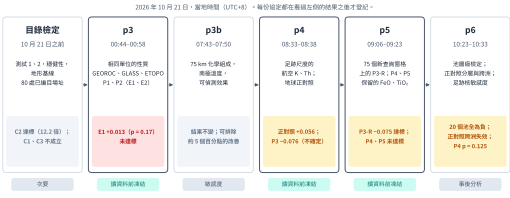
S2 資料
所有輸入都是免費的公開資料。表 S3 列出報告結果用到的資料，只供互動系統使用的資料列於表 S4。月球地形取自月球軌道雷射高度計（LOLA）全球 DEM，每度 64 像元（ppd，約 474 m）；火星地形取自火星軌道雷射高度計（MOLA）的任務實驗網格資料（MEGDR），32 ppd（約 1.85 km）；地球地形取自 NOAA ETOPO 2022（15″，約 460 m），編碼器訓練另用太空梭雷達地形任務（SRTM）的窗格。一個 20 km 的火星窗格因此只有約 11 個 MOLA 像元寬，月球與地球窗格則約有 43 個（第 3.5 節）。岩性取自全球岩性圖（GLiM），柵格化為 0.5°（約 55 km），比 20 與 40 km 的窗格粗。第 S5.1 節的物理相符檢定，以及第 S7.4 節與補充資料 S8、S9、S7 的檢查，另外使用全解析度的 GLiM 多邊形（LiMW_GIS 2015，1,235,259 個多邊形，約 1:375 萬）、GEOROC 全岩分析（第 13 版彙編）(Lehnert et al., 2000; DIGIS Team, 2026)、240 m 的 LOLA 南極平均照明圖與永久陰影圖 (Mazarico et al., 2011)，以及 Smithsonian 更新世火山清單 (Global Volcanism Program, n.d.)。所有模型都在單一 RTX 3090 GPU 上以單一隨機種子訓練，上述檢查則在 NVIDIA L4 上執行。
| 天體 | 資料 | 解析度 | 用途 |
|---|---|---|---|
| 月球 | LOLA 全球 DEM (Smith et al., 2010) | 64 ppd（約 474 m） | 查詢地形 |
| LOLA 南極平均照明圖與永久陰影圖 (Mazarico et al., 2011) | 240 m | 極區查詢；黑暗條件（補充資料 S7） | |
| LROC WAC 643 nm；NAC 正射影像與 DTM (Robinson et al., 2010) | 100 m；0.5–5 m | 亮度代理量；天窗坑測試 | |
| Lunar Prospector FeO (Lawrence et al., 2002) | 0.5° | 鎂鐵代理量；查詢地成分 | |
| Lunar Prospector Ti、K（2°）(Prettyman et al., 2006) 與 Th（0.5°）(Lawrence et al., 2003) | 0.5–2° | 物理相符的化學組成（第 S5.1 節） | |
| LOLA 1064 nm 正規反照率（LDAM_10）(Lucey et al., 2014) | 10 ppd | 月球寬波段反照率（p4，次要） | |
| USGS 月球統一地質圖 (Fortezzo et al., 2020) | 1:500 萬 | 查詢地地質背景（條件） | |
| 火星 | MOLA MEGDR (Smith et al., 2001) | 32 ppd（約 1.85 km） | 查詢地形 |
| OMEGA R1080、BD530、BD2000、OSP1 (Bibring et al., 2005)；CRISM 含水偵測 (Murchie et al., 2007) | 4 ppd；點位 | 材質代理量；塵覆蓋與含水標記 | |
| 高解析度成像科學實驗（HiRISE）(McEwen et al., 2007) 與背景相機（CTX）(Malin et al., 2007) 正射影像 | 0.25–6 m | 天窗坑零樣本測試 | |
| USGS SIM 3292 地質圖 (Tanaka et al., 2014) | 1:2,000 萬 | 查詢地地質背景（條件） | |
| SWIM 冰一致性 (Morgan et al., 2021) | 地圖 | 地下冰標記 | |
| Mars Odyssey GRS 的 Fe、K、Th (Boynton et al., 2007)；TES 反照率 (Christensen et al., 2001) | 5°；7.4 km | 物理相符的化學組成與反照率 | |
| Mars Climate Database v6.2 地表溫度 (Forget et al., 1999) | 模型 | 物理相符的溫度（次要） | |
| 地球 | NOAA ETOPO 2022 (NOAA NCEI, 2022)；SRTM (Farr et al., 2007) | 約 460 m；30 m | 地球索引（ETOPO，實際搜尋 484,015 個窗格）；編碼器訓練（SRTM） |
| Sentinel-2 L2A (Drusch et al., 2012) | 10–20 m | 材質訓練目標與驗證 | |
| GLiM (Hartmann & Moosdorf, 2012)、SoilGrids 2.0 (Poggio et al., 2021)、ESA WorldCover (Zanaga et al., 2022)、Köppen–Geiger (Beck et al., 2023)、乾燥指數 (Zomer et al., 2022) | GLiM 柵格化為 0.5°；其他 250 m–1 km | 條件；材質共變量 | |
| GLiM 全解析度多邊形（LiMW_GIS 2015）(Hartmann & Moosdorf, 2012) | 約 1:375 萬；以 1 km 柵格化 | 岩性穩健性檢查 | |
| GEOROC 全岩分析 (Lehnert et al., 2000) | 91,461 筆玄武岩；339,587 筆火山岩與深成岩分析 | 絕對化學組成檢查；物理相符驗證資料 | |
| GLASS 無雪藍天反照率氣候值 (Liang et al., 2021) | 0.05° | 物理相符驗證資料（反照率） | |
| OpenLandMap MOD11A2 年地表溫度 (Wan, 2014; Hengl, 2018) | 1 km | 物理相符驗證資料（溫度，次要） | |
| ESA CCI 永凍土 v5 (Obu et al., 2019) | 0.01° | 物理相符驗證資料（地下冰，次要） | |
| MODIS MOD11A2 C6.1（Microsoft Planetary Computer）(Wan, 2014) | 1 km（以約 4 km 讀取） | 南極地表溫度（敏感度分析，p3b） | |
| 澳洲放射測量圖 v4 2019 (Minty et al., 2009)；北美放射測量網格 (Duval et al., 2005) | 0.01°；2 km | 足跡尺度 K 與 Th 驗證資料（p4） | |
| USGS 美國本土土壤 (Smith et al., 2013)；澳洲國家地化調查 (de Caritat & Cooper, 2011) | 4,857 與 1,315 個樣本 | 表土 FeO、TiO₂、K 與 Th（p4，次要） | |
| FOREGS 歐洲地球化學圖集，表土 (Salminen et al., 2005) | 845 個樣點 | 表土 FeO、TiO₂、K 與 Th（p7b、p8） | |
| MODIS MCD43A4 v061 NBAR 反射率（經 Microsoft Planetary Computer）(Schaaf & Wang, 2021) | 500 m（以約 4 km 讀取） | 估計輸入（p7b、p8） | |
| SoilGrids 2.0 陽離子交換容量 (Poggio et al., 2021) | 5 km | 估計輸入（p7b、p8） | |
| Smithsonian GVP 全新世與更新世火山 (Global Volcanism Program, n.d.)；Gunn 沙丘紀錄 (Gunn, 2026) | 目錄 | 火山與風成條件；熔岩管情境 | |
| Macrostrat (Peters et al., 2018) | 地圖 | 鎂鐵交叉檢查（與 GLiM 並非完全獨立） | |
| USGS 3DEP 光達 (USGS, n.d.) | 1 m | DEM 教師；地球端的坑 |
| 資料 | 解析度 | 用途 |
|---|---|---|
| SLDEM2015（LOLA＋SELENE 地形相機）(Barker et al., 2016) | 512 ppd（約 59 m） | 可步行月面場景（南北緯 60° 內） |
| HRSC–MOLA 融合 DEM v2 (Fergason et al., 2018) | 200 m | 可步行火星場景 |
| Copernicus GLO-30 (ESA, 2021) | 30 m | 可步行地球場景（取樣 40 m） |
| Kaguya MI 礦物鑲嵌圖 (USGS Astrogeology Science Center, n.d.)；太空風化圖 (Trang & Lucey, 2019) | 鑲嵌圖 | 月面礦物顯示 |
| LRO Diviner GDR L3 (Paige et al., 2010a)；Robbins 撞擊坑目錄 (Robbins, 2019) | 32 ppd；目錄 | 月面背景顯示 |
| IAU／USGS 行星地名錄 (IAU WGPSN & USGS, n.d.) | 目錄 | 地名搜尋 |
| RESOLVE 生態區 (Dinerstein et al., 2017) | 地圖 | 使用者自訂區域篩選（S2） |
| NASA POWER 氣候平均 (NASA Langley Research Center, n.d.) | 0.5–1° | 野外季節 |
| Natural Earth 道路、城鎮與機場 (Natural Earth, n.d.) | 1:1,000 萬 | 交通可達性 |
| Impact Earth 撞擊構造目錄 (Osinski et al., 2022) | 目錄 | 撞擊構造背景 |
| Esri World Imagery；NASA SVS CGI Moon Kit | — | 僅供顯示 |
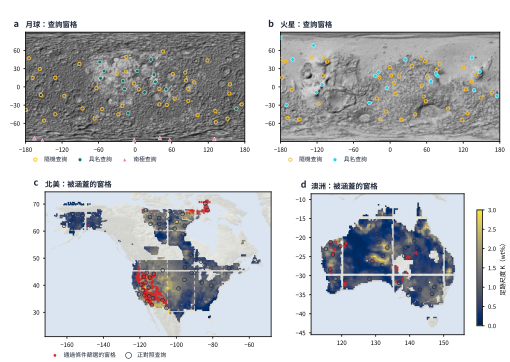
S3 啟發式篩選：規則與穩健性
條件閘門（condition gate）先判斷查詢要求地球上的場址具備哪些條件；經過條件閘門的搜尋模式稱為條件篩選模式。在月球上，查詢地的地質背景取自 USGS 月球統一地質圖 (Fortezzo et al., 2020) 的主要單元，歸為月海、火山碎屑、撞擊坑、高地、盆地與平原。成分取自 Lunar Prospector 的 FeO（FeO ≥ 14 wt% 為玄武岩質，≤ 9 wt% 為斜長岩質，介於兩者時依地質背景判斷）。在火星上，地質背景取自 USGS 火星全球地質圖 (Tanaka et al., 2014) 的單元分組，火山與高地單元視為玄武岩質，盆地、低地與外流單元視為沉積岩質。極區、岩屑裙與極區沙丘單元、緯度 60° 以上，或地下水冰製圖計畫（SWIM）的冰一致性 (Morgan et al., 2021) 達 0.25 的地點，視為有地下冰。塵覆蓋與含水礦物則依 OMEGA 與 CRISM 的描述標記。表 S5 列出由此產生的條件，以及每個條件對應的地球量測與門檻。
| 條件 | 適用時機 | 地球量測 | 相符 | 部分相符 |
|---|---|---|---|---|
| 乾燥 | 一律 | 乾燥指數 | ≤ 0.2 | ≤ 0.5 |
| 裸露地表 | 一律 | WorldCover 裸地或稀疏植被比例（GLiM 冰川 ≥ 50% → 不符） | ≥ 60% | ≥ 30% |
| 寒冷 | 火星；月球緯度 75° 以上 | Köppen 寒冷氣候比例 | ≥ 50% | ≥ 20% |
| 低太陽角（以緯度代理） | 月球緯度 75° 以上；火星緯度 70° 以上 | 緯度絕對值 | ≥ 60° | ≥ 50° |
| 凍土 | 含冰的火星查詢；月球緯度 75° 以上 | 苔原或冰原氣候比例 | ≥ 50% | ≥ 20% |
| 岩性：玄武岩質 | 玄武岩質查詢 | GLiM 基性火山岩＋火山碎屑岩比例 | ≥ 40% | ≥ 15% |
| 岩性：斜長岩質 | 斜長岩質查詢 | GLiM 基性深成岩比例 | ≥ 25% | ≥ 8% |
| 岩性：沉積岩質 | 沉積岩質查詢 | GLiM 沉積岩＋蒸發岩比例 | ≥ 50% | ≥ 25% |
| 玄武岩火山背景（共用的火山規則） | 月海或火山碎屑的玄武岩質查詢；火星火山單元 | 到玄武岩全新世火山的距離 | ≤ 60 km | ≤ 150 km |
| 風成作用 | 塵覆蓋的火星查詢或極區沙丘 | 沙丘比例；表土含沙 | 沙丘 ≥ 5% | 沙丘 ≥ 1% 或含沙 ≥ 60% |
| 含水礦物 | OMEGA／CRISM 偵測到含水礦物 | GLiM 蒸發岩比例；表土黏土 | 蒸發岩 ≥ 5% | 蒸發岩 ≥ 1% 或黏土 ≥ 35% |
對每個地球窗格 e 與適用條件 c，計算判定 vc(e) ∈ {0, 1, 2}（不符、部分相符、相符），條件符合度為
其中 Ce 是在 e 有地球資料的適用條件；有資料的條件不到一半時不計分。候選池保留 F ≥ 0.75 的窗格，少於 600 個時依序放寬到 0.6 與 0.5。有四個適用條件時，F ≥ 0.75 也會納入完全不符其中一個條件的窗格，寧靜海的案例就是如此（第 S7.4 節）。池內再依地形形狀相似度排序（第 S7.1 節）。所有規則與門檻都在測試 1 前凍結，只有裸露地表條件的冰川規則例外，它在檢視測試 1 的案例後才加入，沒有改變測試 1 的結果（補充資料 S1）。形式上，條件閘門是 GIS 多準則決策分析中的布林–模糊疊圖 (Malczewski, 2006)。著陸區選址的工程門檻由太空船能力推導 (Golombek et al., 2012)，條件閘門的門檻則只是慣例值，因此下文的穩健性分析逐一改變每個門檻。
穩健性。門檻是人訂的，所以第二份凍結協定改變了它們。表 S5 的每個門檻乘上嚴格度係數 s ∈ {0.5, 0.75, 1.25, 1.5}，分別只改一個條件與同時改全部條件（s > 1 較嚴；越低越好的門檻改為除以 s）。每個條件也輪流拿掉或單獨使用，並改變閘門層級與最小候選池。岩性比例另以全解析度的 GLiM 多邊形重算，先以 1 km 柵格化，再於每個窗格範圍內取樣。對月球極區查詢，另一個版本把低太陽角的緯度代理，換成由緯度算出的一年中太陽高度低於 10° 的日照時間比例（相符 ≥ 0.33、部分相符 ≥ 0.25；地球最高約 0.37）；若查詢窗格依 LOLA 圖有至少 5% 永久陰影，還加入黑暗條件，即一年中太陽不升起的日數比例（相符 ≥ 0.1、部分相符 ≥ 0.02）(Mazarico et al., 2011)。
S4 物理檢定的設計
S4.1 同單位相符（協定 p3）
性質向量。圖 S3 為檢定設計的概要。每個查詢都量測一個性質向量 P，單位在查詢天體與地球上相同（表 S6）。FeO、TiO₂、K（wt%）與 Th（ppm）取自 Lunar Prospector (Lawrence et al., 2002; Prettyman et al., 2006; Lawrence et al., 2003) 與 Mars Odyssey (Boynton et al., 2007) 的伽瑪射線能譜，火星反照率取自 TES Lambert 反照率 (Christensen et al., 2001)。三個天體的粗糙度都定義為 40 km 窗格面積平均到約 1.88 km（MOLA MEGDR 的間距）後的坡度中位數。次要分量為 MODIS Terra 過境時刻的日間與夜間地表溫度（火星取自 Mars Climate Database v6.2 (Forget et al., 1999)，屬模型）以及地下冰。月球 WAC 產品是 i = g = 60° 下的 I/F (Sato et al., 2017)，並非反照率，所以月球反照率列為次要分量。每個值都是窗格內 9 × 9 個點的平均。地球窗格以 GEOROC 全岩分析（窗格內至少 3 筆火山岩或深成岩樣本的中位數）(Lehnert et al., 2000)、GLASS 無雪藍天反照率氣候值 (Liang et al., 2021)、OpenLandMap MOD11A2 年地表溫度 (Wan, 2014; Hengl, 2018)、ESA CCI 永凍土比例 (Obu et al., 2019) 與索引本身的 ETOPO 2022 格網量測。容差在讀取任何地球值之前就已固定：FeO ±3 wt%、TiO₂ ±1.5 wt%、K ±0.2 wt%、Th ±2 ppm、反照率 ±0.05、粗糙度 ±1°、溫度 ±20 K；含冰查詢則要求永凍土比例至少 0.5。容差是絕對值，對低值很寬鬆，例如 ±0.2 wt% 的 K 約為月球值 0.1 wt% 的 ±200%，卻只有地球典型值的 ±10–20%。以兩倍為界的相對容差列為事後檢查（p6）。
獨立性。驗證資料必須與閘門沒有共用輸入才算獨立（表 S6）。實驗室化學分析與 GLiM、火山目錄沒有共用輸入，MODIS 反照率與 WorldCover 也沒有，閘門則不使用 DEM。MODIS 地表溫度只算部分獨立，因為 WorldClim 2 以它作為內插共變數 (Fick & Hijmans, 2017)，而閘門使用的 Köppen–Geiger 與乾燥指數圖都建立在 WorldClim 上 (Beck et al., 2023; Zomer et al., 2022)。永凍土圖同樣使用 MODIS 溫度與 ERA5，風成與含水條件使用的 SoilGrids 也含 MODIS 共變數。因此部分獨立的分量只列為次要。Sentinel-2（WorldCover 由它產製）與 Macrostrat（與 GLiM 共用地圖）不作為驗證資料。粗糙度與閘門獨立，但與地形排序不獨立，所以評估排序時不納入。
候選集合與檢定。37 個查詢（測試 1、2 的 31 個與 6 個南極查詢）共用 14 個不同的候選池，月球 4 個、火星 10 個。每個池抽 300 個隨機成員（A）與 300 個全索引隨機窗格（B），每個查詢另有系統輸出 C（前 30 個群組）與只看地形的前 30 名 D。對集合 S 與某個分量，相符率是 S 中有地球資料的窗格落在容差內的比例（這樣的窗格至少要有 5 個）。比較兩個集合時，只對兩者都有相符率的分量取平均。主要統計量 E1 是各查詢 A − B 相符率差的平均。E2 以每個池自己的查詢評分，計算該池 A 集合與同一天體其他池 A 集合之差，再對池取平均。單尾 p 值來自 20,000 次置換（E1 在每個池內重新分配 A、B 的窗格；E2 在同一天體內置換池的標籤），信賴區間來自對池與窗格的兩階段 bootstrap，E1 與 E2 為同一個 Holm 校正族。月球只有 4 個池，單獨檢定 E2 只有 24 種排列，所以檢定合併兩個天體。協定分兩階段凍結：查詢值與候選集合（83b2c39e4f72）在下載任何地球驗證資料之前凍結，驗證與分析程式（113fe42bb23a）在任何比較之前凍結。第一階段凍結過兩次，第二次是讀到 WAC 標頭後把月球反照率移到次要分量（補充資料 S1）。另一份協定（p3b，458b85400e39）在看過 p3 結果後登記，加入敏感度分析：以窗格中心 75 km 內的樣本彙整化學組成，較接近伽瑪射線足跡；以 MOD11A2 (Wan, 2014) 補上 OpenLandMap 缺少的南極窗格地表溫度（取 2016 年、約 4 km 解析度，並在北極窗格與 OpenLandMap 比對）；報告此設計可偵測的效果量；以及依用途的適用性彙總（表 S12）。置換只在固定的候選池內重新分配窗格，因此 p 值是以這些池為條件。池只有 10–14 個且大小不一，對池的 bootstrap 區間可能偏窄 (Cameron et al., 2008)，所以另外報告 p6 以候選池為單位的檢定（第 S4.3 節）；兩者不一致時以區間為準。
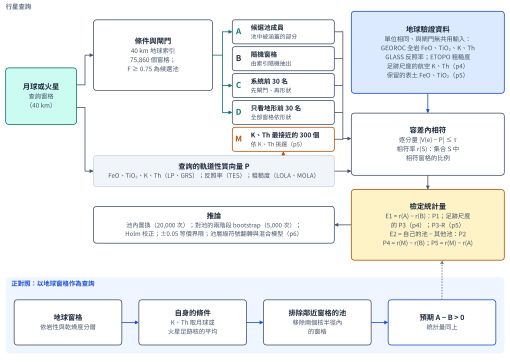
| 分量（單位） | 月球 | 火星 | 地球驗證資料 | 容差 | 相對於閘門的獨立性 | 角色 |
|---|---|---|---|---|---|---|
| FeO（wt%） | Lunar Prospector，0.5° (Lawrence et al., 2002) | Odyssey GRS Fe × 1.2865，5° (Boynton et al., 2007) | GEOROC 全岩中位數 (Lehnert et al., 2000) | ±3 | 獨立 | 主要 |
| TiO₂（wt%） | Lunar Prospector Ti × 1.668，2° (Prettyman et al., 2006) | — | GEOROC | ±1.5 | 獨立 | 主要（月球） |
| K（wt%） | Lunar Prospector，2° (Prettyman et al., 2006) | Odyssey GRS (Boynton et al., 2007) | GEOROC K₂O × 0.830 | ±0.2 | 獨立 | 主要 |
| Th（ppm） | Lunar Prospector，0.5° (Lawrence et al., 2003) | Odyssey GRS (Boynton et al., 2007) | GEOROC | ±2 | 獨立 | 主要 |
| 反照率 | WAC 在 i = g = 60° 的 I/F (Sato et al., 2017)（不是反照率） | TES Lambert 反照率 (Christensen et al., 2001) | GLASS 無雪藍天反照率 (Liang et al., 2021) | ±0.05 | 大致獨立；風成與含水查詢為部分獨立（SoilGrids） | 火星為主要；月球與風成、含水查詢為次要 |
| 粗糙度（°） | LOLA (Smith et al., 2010) | MOLA (Smith et al., 2001) | ETOPO 2022 (NOAA NCEI, 2022) | ±1 | 與閘門獨立，與地形排序不獨立 | 主要；評估排序時不納入 |
| 日間／夜間地表溫度（K） | 僅文獻值（約 390／95 K (Vasavada et al., 2012)） | MCD v6.2，當地時間 10:30／22:30 (Forget et al., 1999) | OpenLandMap MOD11A2 年中位數 (Wan, 2014; Hengl, 2018) | ±20 | 部分獨立（WorldClim 使用 MODIS LST (Fick & Hijmans, 2017)） | 次要（火星） |
| 地下冰 | — | 依 SWIM 的標記 (Morgan et al., 2021) | CCI 永凍土比例 ≥ 0.5 (Obu et al., 2019) | — | 部分獨立（MODIS LST、ERA5） | 次要 |
| 不作為驗證資料 | — | — | 降水（與乾燥指數共用測站）；Sentinel-2（WorldCover 的輸入）；Macrostrat（與 GLiM 共用地圖）；含水礦物（沒有公開的獨立資料） | — | 不獨立 | — |
S4.2 足跡尺度與正對照（協定 p4）
在地球上用相同的量測。軌道伽瑪射線能譜儀和航空伽瑪能譜測量的都是上層數十公分內的鉀與釷，單位也相同。協定 p4 因此以澳洲放射測量圖 (Minty et al., 2009) 與北美放射測量彙編 (Duval et al., 2005) 作為地球端 K 與 Th 的驗證資料，並在軌道足跡上取平均。月球用半高全寬 45 km 的高斯核，即 Lunar Prospector 在 30 km 高度單次量測的足跡 (Wilson et al., 2015)；火星用半徑 220 km 的圓盤，約為 Mars Odyssey 接收一半訊號的半徑 (Taylor et al., 2010)。已製成的地圖產品更平滑（月球釷圖約 (80 km)² (Lawrence et al., 2003)；平滑後的火星圖為 5–15° (Taylor et al., 2010)），所以較寬的核另做事後檢驗（p6）。核內至少 80% 的權重有資料時，窗格才算被涵蓋（月球核 9,904 個窗格，火星核 8,079 個）。每個候選池內，以被涵蓋的成員（A）對照 300 個被涵蓋的隨機窗格（B），容差與統計方法沿用 p3。協定原訂取 300 個被涵蓋的成員，但每個池都不到 300 個（31–277 個，中位數 84），因此 A 是池中被涵蓋的全部成員（補充資料 S1）。圖 S4 依實際比例畫出這些核。
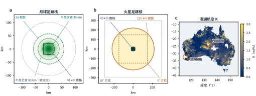
正對照。為區分「行星上的無效結果」與「方法本身沒有解析力」，我們依主要岩性與乾燥程度分層，抽出 131 個彼此相距至少 200 km、被涵蓋的地球窗格作為查詢。其中 43 個適用條件不到兩個、4 個可用的池成員不到 30 個，剩下 84 個（表 S14）。它們的條件取自自身的地球量測，就像行星查詢的條件取自地圖；K 與 Th 取自足跡核。查詢周圍兩個核半徑內的窗格都先移除，以避免空間洩漏 (Roberts et al., 2017)。劣化版本把岩性改為 300 km 內的多數岩性（相當於粗略的地圖），K 與 Th 改用火星核（70 個查詢可用，其中 13 個在該核下沒有涵蓋，實際分析 57 個）。兩端使用相同的閘門輸入與航空資料，多數候選也位於查詢所在的測量區域，因此這個對照是上限型。它能說明檢定在地球上偵測得到相符，但不能說明範疇條件可在天體之間轉移。
等價檢定與天花板。在讀取任何航空值之前，就固定了 ±0.05 與 ±0.5 倍正對照效果兩個等價界限，並以 90% bootstrap 區間做雙單尾檢定 (Schuirmann, 1987; Lakens, 2017)。次要分析包括：以 USGS 土壤調查 (Smith et al., 2013) 與澳洲國家地化調查 (de Caritat & Cooper, 2011) 的表土地化檢驗 FeO、TiO₂、K 與 Th；以 0.49 倍的 LOLA 1064 nm 正規反照率作為月球寬波段反照率 (Lucey et al., 2014; Hayne et al., 2017)；挑出最接近查詢的 300 個被涵蓋窗格作為「預言機」，顯示可達到的相符率；以及 K–Th 的 Mahalanobis σ 距離 (Mahony et al., 2017)。最後一項我們不再解讀。它的共變異數是所有被涵蓋地球窗格的空間共變異，不是參考地點的不確定度，因此幾乎任何落在地球分布之內或附近的值看起來都很接近；改為報告每個查詢在地球分布中的位置（p6）。第一階段（985584aad844）固定查詢值、覆蓋遮罩（只用無資料標記）、候選集合與正對照查詢；第二階段（b9bbb7090fbf）在任何比較之前固定驗證與分析程式。協定在執行前就記下預期：月球的 K 低於多數地球岩石，只有低鉀、低釷的砂、碳酸鹽與鎂鐵質地區可能相符。協定也揭露可行性檢查時已看過澳洲的釷分布（補充資料 S1）。
S4.3 重複檢定、性質耦合與事後重新分析（協定 p5 與 p6）
協定 p5（第一階段 62144c27a379，第二階段 06a12acdfb0d）在看過 p4 的結果（包括其表土的彙總比較）之後，登記了另外兩個問題。在新查詢上重做（P3-R）。在球面上均勻抽出 80 個新查詢窗格，月球 40 個（赤道兩側 60° 內）、火星 40 個（55° 內），彼此以及與原查詢至少相距 300 km。條件取自凍結的規則，K、Th、FeO 與 TiO₂ 取自相同的軌道圖。第 S4.2 節的足跡尺度檢定在這些查詢上重做，事先固定效果的方向（比隨機更低），並加入新的地球正對照查詢。閘門把一組條件對應到一個候選池，因此條件與某個原查詢相同的新查詢會得到同一個池。14 個有足夠被涵蓋成員的新池中，有 7 個與 p4 的池完全相同，另外 7 個也與它們重疊（表 S17）。依實測性質檢索。對每個查詢，取足跡尺度 K 與 Th 最接近的 300 個被涵蓋地球窗格（距離 |ΔK|/0.2 + |ΔTh|/2）作為依性質比對的集合。鉀與釷已用於挑選，所以這個集合只以未參與比對的性質評估，即取自土壤調查 (Smith et al., 2013; de Caritat & Cooper, 2011) 的表土 FeO 與 TiO₂（月球）或 FeO（火星），並分別與被涵蓋的隨機窗格（P4）及條件篩選的候選池（P5）比較。這等於把「相同場址」視為一個構念，而構念應該能預測未用來建構它的性質 (Cronbach & Meehl, 1955)。四個主要檢定為同一個 Holm 校正族。線性機率混合效應模型（含候選池的隨機截距與查詢的變異成分）(Seabold & Perktold, 2010) 列為次要檢查。圖 S2 標出原查詢、新查詢與被涵蓋的地球窗格。
事後重新分析（協定 p6）。另一份協定（3b322f97aefb）在看過所有先前結果與審稿意見之後才定義，並在唯一一次執行前凍結。它以不同的候選池為單位重算群集檢定：完全相同的池合併，較嚴格的版本再合併 A 集合 Jaccard 指數至少 0.5 的池（27 個池合為 20 個不同的池、10 個群集）。每個檢定都報告以池平均做的精確符號翻轉隨機化檢定、群集穩健區間、池層級 80% 檢定力下可偵測的效果，以及集合係數在池間帶隨機斜率的混合模型。它也報告正對照的分層與跨洲結果（澳洲查詢對北美候選，以及反向）、較寬的足跡核（月球 80 km 高斯核；火星 5° 與 10° 方框）、依各池區域組成配對的隨機窗格、以兩倍為界的相對容差、每個查詢在地球分布中的位置，以及一種讓候選池真正發揮篩選作用的「條件加實測性質」組合：對被涵蓋成員至少 60 個的池，取池內 K、Th 最接近的 30 個成員，對照全部被涵蓋窗格中 K、Th 最接近的 30 個。圖 S1 列出各協定的順序，以及每份協定登記前已看過的結果（表 S2）。
S5 篩選檢定的詳細結果
S5.1 同單位相符
兩個主要檢定都沒有通過（表 S7）。在 37 個查詢上，候選池成員落在查詢容差內的比例只比全球隨機窗格高 1.3 個百分點（E1 = 0.013；95% 信賴區間 −0.032 至 0.052；p = 0.17）。候選池成員符合自己查詢的程度，也不比同一天體其他池的成員高（E2 = 0.004；95% 信賴區間 −0.030 至 0.050；p = 0.29；兩者 Holm 校正後 p = 0.34）。容差減半或加倍時結果不變（E1 = 0.008 與 0.021；p = 0.21 與 0.058），排除部分已看過的 FeO 與 TiO₂ 後也一樣（E1 = 0.017；p = 0.13），兩個天體的結果也相近（月球 0.017、火星 0.008）。圖 S5 彙整了所有物理相符檢定的效果量。以候選池為單位（p6），14 個池中有 8 個的平均為正（精確符號翻轉 p = 0.18）。只看測試 2 時 E1 = 0.033，窗格層級置換的 p 為 0.004，10 個池的符號翻轉 p 為 0.049，但對池做的 bootstrap 區間包含 0（−0.015 至 0.081）。我們以區間為準，不把它算作效果。
逐項來看，閘門提高了某些分量的相符率，也降低了另一些。月球候選池的 TiO₂（0.62 對 0.53）與 Th（0.45 對 0.31）比隨機窗格更常相符，FeO（0.23 對 0.32）與 K（0.06 對 0.12）則較少相符。地球玄武岩窗格的鈦與釷落在正確範圍，但鐵不如月海土壤高，鉀也不如它低。火星候選池的反照率較常相符（0.48 對 0.40），粗糙度較少（0.51 對 0.58）。次要分量中，火星地下冰查詢的候選池多半是永凍土（0.94 對 0.53），這與以凍土氣候建立的條件一致；日間溫度則比隨機更少相符（0.07 對 0.18）。在池內，依地形排序的前 30 名在粗糙度以外的分量上，並不比池內隨機成員更相符（−0.009；p = 0.68）。A 與 B 集合中有全岩化學資料的窗格依分量占 8–20%（每個查詢的中位數為 A 55 個、B 28 個），前 30 名的 C 與 D 集合卻只有 0–13 個，所以排序檢查只涵蓋 22–23 個查詢。GEOROC 收錄的是火成岩分析，有化學資料的窗格因而偏向地圖上的玄武岩（有化學資料的 A 與 B 窗格中分別有 28% 與 14% 屬玄武岩質，全部 A 與 B 窗格則為 11% 與 4%；p6）。所以 E1 的化學部分比較的是條件篩選與隨機的火成岩窗格，結果會被拉向 0。第 S5.2 節的航空檢定沒有這個偏差。
| 檢定 | 比較的集合 | n | 估計值 | 95% 信賴區間 | p（單尾） | Holm p | 結果 |
|---|---|---|---|---|---|---|---|
| E1（P1，主要） | 候選池成員（A）對全球隨機窗格（B） | 37 個查詢 | +0.013 | −0.032 至 0.052 | 0.17 | 0.34 | 未達標 |
| E2（P2，主要） | 自己的候選池對同一天體的其他池 | 14 個池 | +0.004 | −0.030 至 0.050 | 0.29 | 0.34 | 未達標 |
| E1，池層級‡ | 以池平均做符號翻轉檢定 | 14 個池 | +0.013 | −0.014 至 0.039（群集穩健） | 0.18 | — | 14 個池中 8 個為正 |
| 排序檢查 1 | 系統前 30 名（C）對候選池成員（A），不含粗糙度 | 22 個查詢 | −0.009 | — | 0.68 | — | 地形排序沒有增益 |
| 排序檢查 2 | 只看地形的前 30 名（D）對全球隨機窗格（B），不含粗糙度 | 23 個查詢 | +0.005 | — | 0.43 | — | — |
| E1，只用測試 2 | A 對 B | 17 個查詢 | +0.033 | −0.015 至 0.081 | 0.004（池層級‡ 0.049） | — | 不成立：區間包含 0 |
| E2，只用測試 2 | 自己的候選池對其他池 | 10 個池 | +0.014 | −0.027 至 0.076 | 0.11 | — | — |
| E1，容差 × 0.5／× 2 | A 對 B | 37 個查詢 | +0.008／+0.021 | −0.024 至 0.038／−0.025 至 0.064 | 0.21／0.058 | — | — |
| E1，不含 FeO 與 TiO₂ | A 對 B | 37 個查詢 | +0.017 | −0.035 至 0.067 | 0.13 | — | — |
| 次要分量 | A 對 B（溫度、地下冰、月球反照率） | 31 個查詢 | −0.009 | −0.046 至 0.034 | 0.997 | — | — |
| p3b†：E1／E2，化學組成取 75 km | A 對 B／自己的池對其他池 | 37 個查詢／14 個池 | −0.009／−0.001 | — | 0.90／0.57 | — | 不變 |
| p3b†：只看化學組成，40 km 方框／75 km | A 對 B | 37 個查詢 | +0.011／−0.019 | — | 0.25／0.99 | — | — |
| p3b†：火星 300 km 彙整，主要分量／只看化學組成（探索性） | A 對 B | 18 個查詢 | −0.035／−0.062 | −0.069 至 0.007／−0.085 至 −0.033 | 1.0／1.0 | — | — |
| p3b†：次要分量，加入南極溫度 | A 對 B | 31 個查詢 | −0.012 | −0.052 至 0.032 | 1.0 | — | — |
| 80% 檢定力可偵測的效果（E1／E2） | 置換虛無分布（p3b†）；池層級（p6‡） | — | 0.032／0.019；0.032–0.054／0.050 | 上界 0.052／0.050 | — | — | 約 5 個百分點以上的改善可排除 |
† 在看過 p3 結果之後登記（p3b）。‡ 事後分析（協定 p6）。其他各列都在讀取其地球資料前凍結。池層級可偵測的 E1：由群集穩健標準誤算出為 0.032，由 bootstrap 區間算出為 0.054。
地球罕見或達不到的性質。表 S11 列出每個分量中落在各查詢容差內的地球窗格比例，表 S10 則依用途彙整地球能提供什麼。補上 5,516 個南極窗格的 MOD11A2 值後（在 150 個北極窗格上與 OpenLandMap 平均相差不到 1 K），火星夜間地表溫度（當地時間 22:30 為 162–202 K）只在南極高原達得到，最冷的窗格平均為 204 K。18 個火星查詢中有 10 個落在容差內，但最多只占 2.3% 的窗格；低於約 185 K 的 8 個查詢則完全達不到。日間溫度除了 Olympia Undae（170 K）以外都達得到。有全岩化學資料的地球窗格中，只有 0.3% 落在火星地殼 15–22 wt% FeO 的 3 wt% 以內，0.06% 落在寧靜海 7.6 wt% TiO₂ 的 1.5 wt% 以內，6–11% 落在月球鉀含量的 0.2 wt% 以內。重力、地表氣壓、降水、月球日夜溫度與冷阱溫度則完全在地球範圍之外。依用途來看（表 S12），公里尺度的通行性與火星地下冰在地球上可以比對，ISRU 原料化學組成對兩個天體都很罕見，地表熱環境與極區照明則無法比對。閘門只提高了地下冰的相符率（+0.41），但地下冰條件與永凍土驗證資料有共用輸入。
敏感度分析（協定 p3b）。三項在 p3 之後登記的檢查都沒有改變結果（表 S7）。以 75 km 內的樣本彙整化學組成（較接近伽瑪射線足跡）時，E1 為 −0.009（p = 0.90），E2 為 −0.001（p = 0.57）。只看化學組成時，40 km 方框為 +0.011（p = 0.25），75 km 為 −0.019（p = 0.99）；火星的探索性 300 km 彙整，主要分量為 −0.035（95% 信賴區間 −0.069 至 0.007），只看化學組成為 −0.062。由置換虛無分布計算，此設計有 80% 檢定力偵測到 0.032 的 E1 與 0.019 的 E2，但這些數字忽略了池與池之間的變異。以候選池為單位（p6），由群集穩健標準誤算出的可偵測 E1 為 0.032，由 bootstrap 區間算出為 0.054，可偵測的 E2 為 0.050。bootstrap 排除了大於 0.052（E1）與 0.050（E2）的改善，即約 5 個百分點以上的改善，更小的則無法排除。補上南極溫度後，次要分量為 −0.012（p = 1.0）。
S5.2 足跡尺度的 K 與 Th 及地球對地球正對照
正對照通過（表 S8；圖 5）。查詢本身是地球窗格時，條件篩選的候選池成員符合其足跡尺度 K 與 Th 的比例，比被涵蓋的隨機窗格高 5.6 個百分點（84 個查詢；95% 信賴區間 2.3 至 10.1；p < 0.001；23 個不同候選池的符號翻轉 p < 0.001）；劣化版本高 3.5 個百分點（57 個查詢；95% 信賴區間 0.4 至 8.9）。三項事後檢查（p6；表 S14）限定了這個結果的意義。在與行星查詢相似的乾燥分層，效果較小（+3.0 個百分點；41 個查詢；95% 信賴區間 1.1 至 6.2；90% 信賴區間 1.4 至 5.6，既未明確高於、也未落在 ±5 個百分點的界限內），非乾燥分層為 +8.1 個百分點；劣化版本則相反（+5.8 對 +0.3）。若候選只取自另一洲（同時去除共用的測量校準；K 中位數澳洲為 0.59%、北美為 1.04%），效果就消失了（−2.9 個百分點；36 個查詢；95% 信賴區間 −8.8 至 2.4；澳洲查詢對北美候選 −4.4，北美查詢對澳洲候選 +0.2）。因此在地球上，閘門主要是在同一測量區域內解析 K 與 Th，而區域內的地圖、區域地質與校準都是共用的。這符合地圖岩性與航空放射性元素之間早已確立的關聯 (Dickson & Scott, 1997)。
但對候選池有被涵蓋的 36 個月球與火星查詢，差異的方向相反。條件篩選的成員符合查詢 K 與 Th 的比例，比被涵蓋的隨機窗格低 7.6 個百分點（95% 信賴區間 −9.5 至 −5.6）。每一個查詢、全部 13 個池的差都是負的（精確符號翻轉 p = 1/8,192；把重疊的池合併為 7 個群集時 p = 0.008；只看月球的 4 個池時 p = 0.063），池間有隨機斜率的混合模型給出 −0.072（95% 信賴區間 −0.111 至 −0.032）。依事前登記的判定規則，這屬於「不確定」，因為 ±5 個百分點的等價檢定沒有通過，而規則沒有涵蓋「顯著反向」的結果；負的方向到 p5 才作為假說檢定。專一性不存在，而且在此等價於零（E2 = −0.001；90% 信賴區間 −0.009 至 0.009）。改用 40 km 方框平均（−9.4 個百分點）、分區域看（澳洲 −11.7，只有 2 個池的 6 個查詢；北美 −5.9）、改用表土化學組成（−3.2 個百分點），以及 p6 的每一個事後變體（表 S15），方向都相同，包括依池的區域組成配對隨機窗格（−6.2；條件篩選成員只有 7% 位於澳洲，隨機窗格則有 40%）、較寬的核（月球 80 km 加火星 5° 為 −7.5；火星 10° 為 −6.4）與兩倍的相對容差（−8.0）。
在絕對容差下，地球上確實有相符的窗格。最接近每個查詢的 300 個被涵蓋窗格，平均相符率為 0.60，閘門的正規化增益 (G − R)/(U − R) 則為 −0.20。但許多查詢值落在地球分布的邊緣或之外（表 S16）。在火星核下，被涵蓋的地球窗格 Th 都不低於 2.0 ppm，58 個火星查詢卻全部只有 0.2–0.9 ppm。59 個月球查詢中，有 38 個的 K 低於 99.9% 的被涵蓋地球窗格。若要求 K 與 Th 都在兩倍以內，沒有任何地球窗格符合任何一個火星查詢，59 個月球查詢中也有 21 個找不到符合的窗格。這些查詢之所以算相符，只是因為 ±2 ppm 與 ±0.2 wt% 的容差剛好延伸到地球分布的下緣，而 p4 的 σ 距離（最多 0.3σ）掩蓋了這一點。執行後的一項描述性比較說明了閘門為何遠離查詢。條件篩選窗格的 K 中位數為 1.6%（月球池）與 1.5%（火星池），隨機窗格為 1.0%；Th 中位數為 8.7 與 8.4 ppm，隨機窗格為 7.0 與 7.4 ppm。查詢的 K 則只有 0.10% 與 0.32%，Th 只有 2.8 與 0.6 ppm。條件選出的乾燥、裸露、玄武岩質與火山場域，鉀、釷含量都比月球與火星表土高。從上部大陸地殼的組成（約 2.3 wt% K 與 10.5 ppm Th (Rudnick & Gao, 2003)）與月球、火星表面的組成 (Jolliff et al., 2000; Taylor et al., 2007) 來看，這可以預期，p4 協定在執行前也記下了這一點。月球的 LOLA 寬波段反照率在候選池中也比隨機更少相符（−0.43），因為乾燥裸露的地球場域比月球亮得多。
| 檢定 | 比較的集合 | n | 估計值 | 95% 信賴區間 | p（單尾） | 結果 |
|---|---|---|---|---|---|---|
| 正對照（地球查詢，月球核） | 候選池成員對被涵蓋的隨機窗格，排除 115 km 內 | 抽出 131 個中的 84 個查詢 | +0.056 | 0.023 至 0.101 | < 0.001 | 通過 |
| 正對照，劣化版（粗略岩性、火星核） | 同上，排除 440 km 內 | 57 個查詢 | +0.035 | 0.004 至 0.089 | < 0.001 | 通過 |
| 正對照，乾燥／非乾燥分層‡ | 同上 | 41／43 個查詢 | +0.030／+0.081 | 0.011 至 0.062／0.021 至 0.154 | — | 乾燥分層較弱 |
| 正對照，跨洲‡ | 候選只取自另一個航空測量區域 | 36 個查詢（11 個池） | −0.029 | −0.088 至 0.024 | 0.64（池層級） | 不通過 |
| P3：月球與火星 | 候選池成員對被涵蓋的隨機窗格 | 36 個查詢（13 個池） | −0.076 | −0.095 至 −0.056 | 1.0（Holm 1.0）；下尾，池層級‡：1/8,192 | 未達標；±0.05 等價檢定因區間在 0 以下而不通過；事前判定：不確定；13 個池全為負 |
| 足跡尺度的專一性（E2） | 自己的池對同一天體的其他池 | 13 個池 | −0.001 | −0.011 至 0.011 | 0.63（Holm 1.0） | 未達標；等價於零（90% 信賴區間 −0.009 至 0.009） |
| P3，依天體 | 月球／火星 | 19／17 個查詢（4／9 個池） | −0.082／−0.070 | −0.113 至 −0.045／−0.087 至 −0.054 | 1.0／1.0 | — |
| P3，依區域 | 澳洲／北美 | 6（2 個池）／36（13 個池）個查詢 | −0.117／−0.059 | −0.174 至 −0.024／−0.084 至 −0.029 | 1.0／1.0 | — |
| P3，40 km 方框平均 | A 對 B | 36 個查詢 | −0.094 | −0.114 至 −0.074 | 1.0 | — |
| P3，較寬的核‡ | 月球 80 km 高斯核；火星 5°／10° 方框 | 36 個查詢 | −0.075／−0.064 | −0.092 至 −0.055／−0.084 至 −0.044 | — | 不變 |
| P3，依區域組成配對的隨機窗格‡ | A 對區域配對的 B | 36 個查詢 | −0.062 | −0.085 至 −0.031 | — | 不變 |
| P3，兩倍相對容差‡ | A 對 B | 36 個查詢 | −0.080 | −0.104 至 −0.056 | — | 不變 |
| P3，池間隨機斜率混合模型‡ | 集合係數 | 36 個查詢（13 個池） | −0.072 | −0.111 至 −0.032 | — | — |
| 表土 FeO、TiO₂、K、Th（次要） | A 對 B | 30 個查詢 | −0.032 | −0.041 至 −0.022 | 1.0 | — |
| 月球寬波段反照率，LOLA（次要） | A 對 B（p3 的全球集合） | 13 個查詢 | −0.43 | −0.64 至 −0.27 | 1.0 | — |
| 預言機 | 最接近查詢的 300 個被涵蓋窗格 | 36 個查詢 | 相符率 0.60；正規化增益 (G − R)/(U − R) = −0.20 | — | — | 在絕對容差下地球上有相符的窗格 |
| 在地球分布中的位置‡ | 足跡核下的被涵蓋窗格 | 59 個月球／58 個火星查詢 | 火星 Th 低於地球最小值（2.0 ppm）：58 個中 58 個；月球 K 低於第 0.1 百分位：59 個中 38 個 | — | — | 在地球範圍邊緣或之外 |
‡ 事後分析（協定 p6；表 S13–S16）。其他各列都在讀取其地球資料前凍結；正文中的 K 與 Th 中位數是執行後才比較的。條件篩選成員有 7% 位於澳洲，被涵蓋的隨機窗格則為 40%。
S5.3 新查詢的重複檢定與性質耦合
在新查詢窗格上，足跡尺度的結果依然成立（表 S9；圖 S5）。抽出的 80 個中有 75 個的候選池有被涵蓋；條件篩選的成員符合其 K 與 Th 的比例，比被涵蓋的隨機窗格低 7.5 個百分點（95% 信賴區間 −9.0 至 −5.8；單尾 p < 0.001；Holm 0.0002），新的正對照也再次通過（+6.2 個百分點；54 個地球查詢；Holm 0.0002）。這次重做換的主要是查詢值，候選池多半沒變。75 個查詢中有 57 個（包括全部 40 個月球查詢）得到與 p4 完全相同的池，其中月球查詢只落在與 01、02 號池相同的兩個池（一個高地、一個月海），可見閘門對月球的區分相當粗；其餘 7 個池也與 p4 的池重疊（表 S17）。這 7 個池的 18 個查詢差為 −5.8 個百分點，7 個池全為負（符號翻轉 p = 0.008）；p4 與 p5 合計 20 個不同的池也全為負（把重疊的池合併為 10 個群集時 p = 0.001）。在 p4 的全部 13 個池（p4 執行後才首次看到）與全部 7 個新池中，條件篩選窗格的 K 中位數都高於隨機窗格；Th 中位數則分別在 13 個中的 13 個與 7 個中的 6 個較高（新池的符號檢定 p = 0.008 與 0.06）。
在檢驗的案例中，依實測性質檢索沒有延伸到保留的性質，但證據比窗格層級的檢定所顯示的弱。在 K 與 Th 上最接近每個查詢的 300 個窗格，符合其表土 FeO 與 TiO₂ 的比例比被涵蓋的隨機窗格低 4.7 個百分點（106 個查詢；95% 信賴區間 −8.0 至 −0.1；P4 未達標），比條件篩選的候選池低 4.4 個百分點（100 個查詢；P5 未達標）。這些資訊全部來自月球查詢（−8.5 個百分點；59 個查詢）。任何集合中都沒有地球表土落在 47 個火星查詢 15–23 wt% FeO 的 3 wt% 以內，所以火星的差全部為 0，P4 與 P5 對火星無法檢定。月球查詢只落在三到四個不同的池，因此效果在池的層級上不顯著（19 個不同池的符號翻轉 p = 0.125），池間有隨機斜率的混合模型給出 −0.025（95% 信賴區間 −0.054 至 0.004）。事前登記的次要結果中，原查詢的效果為 −3.0 個百分點，新查詢為 −5.6；依性質比對的集合，其保留性質增益的中位數為可達增益的 −0.16（51 個查詢）。條件篩選與隨機窗格符合保留表土的程度相同（−0.1 個百分點；95% 信賴區間 −0.5 至 0.2），所以閘門本身不帶有鐵、鈦的資訊。執行後另做的描述性比較顯示，依 K–Th 比對的窗格，表土 FeO 中位數在月球查詢為 0.6 wt%、火星查詢為 0.9 wt%，隨機窗格為 2.6 wt%，查詢本身則為 7.7 與 19.2 wt%。在澳洲與北美的調查中，低鉀、低釷的表土多半富含石英、貧鐵；在月球上，低鉀、低釷則代表斜長岩或月海玄武岩。這可能只適用於這些區域與表土，因為表土的鐵會被石英與風化稀釋。
p5 登記的一項次要檢定，比較池內 K、Th 最接近的成員與在全部窗格中做 K–Th 比對（+4.4 個百分點），但它在構造上就等於 −P5，因為除了一個池以外，每個池被涵蓋的成員都不到 300 個，「最接近的 300 個」就是整個池。我們撤回這項結果（補充資料 S1）。在 p6 的事後重新定義下，池內 K、Th 最接近的 30 個成員符合月球保留 FeO 與 TiO₂ 的比例，比全部被涵蓋窗格中 K、Th 最接近的 30 個高 7.0 個百分點（53 個月球查詢；95% 信賴區間 0.7 至 9.2；池太少，無法做池層級檢定），但比隨機窗格低 5.2 個百分點。這些成員符合 K 與 Th 本身的程度也不比隨機窗格好（0.10 對 0.11；全域 K–Th 比對為 0.89），因為條件篩選的池裡幾乎沒有具月球 K、Th 值的窗格，條件與實測性質無法在這些池內結合。池間有隨機斜率的混合模型重現了兩個足跡結果（−0.072 與 −0.073），但沒有重現依性質比對的結果。
| 檢定 | 比較的集合 | n | 估計值 | 95% 信賴區間 | p（單尾） | Holm p | 結果 |
|---|---|---|---|---|---|---|---|
| P3-R：在新查詢上重做（方向事先固定：較低） | 候選池成員對被涵蓋的隨機窗格；K 與 Th | 75 個查詢（14 個池，其中 7 個與 p4 相同） | −0.075 | −0.090 至 −0.058 | < 0.001（較低） | 0.0002 | 達標 |
| P3-R，只看新池‡ | 同上，7 個與 p4 不同的池 | 18 個查詢 | −0.058 | −0.072 至 −0.044（群集穩健） | 0.008（較低，池層級） | — | 7 個池全為負 |
| 正對照，新地球查詢 | 同上，地球查詢 | 54 個查詢 | +0.062 | 0.034 至 0.114 | < 0.001 | 0.0002 | 達標 |
| P4：依性質比對對隨機 | K、Th 最接近的 300 個窗格對被涵蓋的隨機窗格；保留的 FeO、TiO₂ | 106 個查詢 | −0.047 | −0.080 至 −0.001 | 1.0 | 1.0 | 未達標 |
| P4，依天體 | 月球／火星 | 59／47 個查詢 | −0.085／0.000 | −0.108 至 −0.018／0 | — | — | 火星無法檢定：沒有地球表土落在容差內 |
| P4，池層級‡ | 以不同池做符號翻轉；池間隨機斜率混合模型 | 19 個池（月球 4 個） | −0.047；−0.025 | −0.054 至 0.004（混合模型） | 0.12（較低，池層級） | — | 池層級不顯著 |
| P4，原查詢／新查詢 | 同 P4 | 34／72 個查詢 | −0.030／−0.056 | −0.059 至 0.000／−0.092 至 0.000 | — | — | — |
| P5：依性質比對對條件篩選 | 同上，對條件篩選的候選池 | 100 個查詢 | −0.044 | −0.079 至 0.000 | 1.0 | 1.0 | 未達標 |
| P5，依天體 | 月球／火星 | 53／47 個查詢 | −0.082／0.000 | −0.106 至 −0.004／0 | — | — | — |
| 保留性質的預言機（次要） | 依性質比對集合的保留性質正規化增益 | 51 個查詢 | 中位數 −0.16（平均 −1.48） | — | — | — | — |
| 機制（次要） | 條件篩選的 K／Th 中位數高於隨機 | 7 個與 p4 不同的新池；13 個 p4 池‡ | 7／6（共 7）；13／13（共 13） | — | 0.008／0.06；< 0.001（符號檢定） | — | 候選池富含 K、Th |
| 條件篩選對隨機，保留的表土‡ | 候選池成員對被涵蓋的隨機窗格；FeO、TiO₂ | 100 個查詢 | −0.001 | −0.005 至 0.002 | — | — | 閘門不帶鐵、鈦資訊 |
| 條件加 K–Th，k = 30‡ | 池內 K、Th 最接近的 30 個成員對全部被涵蓋窗格中最接近的 30 個；保留的 FeO、TiO₂ | 53 個月球查詢（2–4 個池） | +0.070 | 0.007 至 0.092 | — | — | 但對隨機為 −0.052；K–Th 相符率 0.10，隨機為 0.11 |
| 混合模型，隨機截距（次要） | 集合係數：足跡檢定／重做／依性質比對 | 36／75／106 個查詢 | −0.079／−0.074／−0.059 | −0.087 至 −0.071／−0.079 至 −0.070／−0.064 至 −0.054 | — | — | 區間過窄：沒有隨機斜率 |
| 混合模型，池間隨機斜率‡ | 同上 | 36／75／106 個查詢 | −0.072／−0.073／−0.025 | −0.111 至 −0.032／−0.085 至 −0.060／−0.054 至 0.004 | — | — | 足跡結果成立；依性質比對不顯著 |
‡ 事後分析（協定 p6；表 S13 與 S17）。其他各列都在讀取其地球資料前凍結。p5 的次要檢定「條件加 K–Th 對只看 K–Th」（+0.044）在構造上等於 −P5，予以撤回（補充資料 S1）。
地球能提供什麼。表 S10 依用途與性質彙整 p3b 與 p6 的可及性分析。公里尺度的通行性與火星地下冰在地球上可以比對，原料化學組成對兩個天體都很罕見。火星足跡尺度的釷、低於約 185 K 的火星夜晚、月球的熱環境、冷阱與極區照明，在所檢視的資料中都沒有地球上的對應。
| 天體 | 用途或性質 | 在地球上 | 依據 |
|---|---|---|---|
| 月球 | ISRU 原料化學組成（FeO、TiO₂、K、Th） | 罕見（0.004） | 全岩化學 |
| 高鈦月海玄武岩（約 7.6 wt% TiO₂ 以上） | 罕見（0.06% 的窗格；≥ 9 wt% 者占玄武岩 0.022%） | GEOROC | |
| 足跡尺度的低 K（0.01–0.37 wt%） | 59 個查詢中 38 個低於 99.9% 的地球窗格 | 航空 K | |
| 通行性（公里尺度粗糙度） | 可比對（0.31） | ETOPO 2022 | |
| 地表熱環境；冷阱；極區照明 | 無（約 390／95 K；約 25 K；低太陽角比例 1.0，地球最多 0.37） | 文獻；表 S27 | |
| 火星 | 地殼 FeO（15–23 wt%） | 罕見（有化學資料窗格的 0.3%）；表土中沒有 | GEOROC；表土調查 |
| 足跡尺度的 Th（0.2–0.9 ppm） | 沒有（所有被涵蓋窗格 ≥ 2.0 ppm） | 航空 Th | |
| ISRU 原料化學組成（FeO、K、Th） | 罕見（0.0008） | 全岩化學 | |
| 通行性（公里尺度粗糙度） | 可比對（0.75） | ETOPO 2022 | |
| 地下冰 | 可比對（0.51） | 永凍土圖 | |
| 低於約 185 K 的夜間地表溫度 | 18 個查詢中 8 個沒有；其他只在南極冰原上 | MOD11A2 | |
| 兩者 | 重力；地表氣壓；無降水 | 無 | — |
聯合比例為：在 75,860 個索引窗格中，於每個分量都有資料、且全部落在容差內的窗格比例，再取各查詢的中位數（≥ 1% 為可比對，大於 0 但小於 1% 為罕見）。
S5.4 可達性與用途適配
| 天體 | 分量 | 查詢數 | 落在容差內的比例（中位數） | 最低比例（查詢） | 沒有任何地球窗格落在容差內的查詢 |
|---|---|---|---|---|---|
| 月球 | FeO | 19 | 0.43 | 0.0019（Marius Hills） | 0 |
| TiO₂ | 19 | 0.75 | 0.0004（Marius Hills） | 0 | |
| K | 19 | 0.080 | 0.059（南極受光 2） | 0 | |
| Th | 19 | 0.34 | 0.11（Fra Mauro） | 0 | |
| 反照率（I/F，次要） | 13 | 0.0044 | 0.0030（Marius Hills） | 0 | |
| 粗糙度 | 19 | 0.31 | 0.0027（南極陰影 1） | 0 | |
| 火星 | FeO | 15 | 0.0029 | 0.0017（Oxia Planum） | 0 |
| K | 18 | 0.11 | 0.097（Olympia Undae） | 0 | |
| Th | 18 | 0.24 | 0.20（Olympia Undae） | 0 | |
| 反照率 | 18 | 0.35 | 0.059（Elysium Mons） | 0 | |
| 粗糙度 | 18 | 0.75 | 0.013（Elysium Mons） | 0 | |
| 日間地表溫度（次要） | 18 | 0.18 | 0（Olympia Undae） | 1（Olympia Undae） | |
| 夜間地表溫度（次要） | 18 | 0.003 | 0（8 個查詢） | 8（Pavonis、Arsia、Elysium、Olympia Undae、Phoenix、Arcadia、Utopia、Deuteronilus）；其餘 10 個只在南極高原達得到 | |
| 地下冰（次要） | 5 | 0.51 | — | 0 | |
| 兩者 | 重力；地表氣壓；降水 | — | — | — | 在地球範圍之外（1.62／3.71／9.81 m s⁻²；約 0／0.6／101 kPa；無／無／處處都有） |
| 月球 | 日間與夜間地表溫度；冷阱 | — | — | — | 約 390／95 K (Vasavada et al., 2012) 與約 25 K (Paige et al., 2010b)，地球窗格平均則為 204–322／204–302 K |
| 月球（極區） | 太陽高度低於 10° 的日照時間比例 | 6 | — | — | 1.0，地球最大值為 0.37 |
| 天體 | 用途 | 分量 | 查詢數 | 聯合比例中位數 | 判定 | 閘門的影響 |
|---|---|---|---|---|---|---|
| 月球 | ISRU 原料化學組成 | FeO、TiO₂、K、Th | 19 | 0.004 | 罕見 | +0.022 |
| 通行性（公里尺度） | 粗糙度 | 19 | 0.31 | 可比對 | −0.004 | |
| 地表熱環境 | 日間與夜間溫度（文獻值） | — | — | 地球上沒有（約 390／95 K） | — | |
| 照明（極區查詢） | 太陽高度低於 10° 的日照時間比例 | 6 | — | 地球上沒有（1.0，地球最多 0.37） | — | |
| 火星 | ISRU 原料化學組成 | FeO、K、Th | 18 | 0.0008 | 罕見 | −0.001 |
| 通行性（公里尺度） | 粗糙度 | 18 | 0.75 | 可比對 | −0.064 | |
| 地表光學與熱環境 | 反照率、日間與夜間溫度 | 18 | 0 | 地球上沒有（夠冷的夜晚只出現在南極冰原，而冰原沒有無雪反照率） | −0.010 | |
| 地下冰 | 永凍土比例 ≥ 0.5 | 5 | 0.51 | 可比對 | +0.41 |
S5.5 事後重新分析（協定 p6）
表 S13–S17 列出協定 p6（第 S4.3 節）的結果，全部屬於事後分析。池層級檢定以每個不同池的平均差為單位。有 G 個池時，可達到的最小單尾 p 值為 1/2G，因此池很少時，各池再一致也達不到顯著。
| 檢定 | 池數（G） | 平均 | 與效果同向的池 | 符號翻轉 p | 群集穩健 95% 信賴區間 | 可偵測效果（80% 檢定力） | 隨機斜率混合模型（95% 信賴區間） |
|---|---|---|---|---|---|---|---|
| p3 E1（P1） | 14 | +0.013 | 14 個中 8 個為正 | 0.18（上尾） | −0.014 至 0.039 | 0.032 | — |
| p3 E1，只用測試 2 | 10 | +0.033 | 10 個中 8 個為正 | 0.049（上尾） | −0.004 至 0.070 | 0.044 | — |
| p3 E1，合併重疊的池 | 8 | +0.013 | 8 個中 5 個為正 | 0.16（上尾） | −0.014 至 0.039 | 0.031 | — |
| 正對照（p4） | 23 | +0.056 | 23 個中 18 個為正 | < 0.001（上尾） | 0.016 至 0.096 | 0.050 | — |
| 正對照，劣化版（p4） | 14 | +0.035 | 14 個中 11 個為正 | 0.023（上尾） | −0.009 至 0.078 | 0.053 | — |
| P3，月球與火星（p4） | 13 | −0.076 | 13 個中 13 個為負 | < 0.001（下尾） | −0.092 至 −0.060 | 0.019 | −0.072（−0.111 至 −0.032） |
| P3，合併重疊的池 | 7 | −0.076 | 7 個中 7 個為負 | 0.008（下尾） | −0.091 至 −0.061 | 0.018 | — |
| P3，只看月球 | 4 | −0.082 | 4 個中 4 個為負 | 0.062（下尾） | −0.122 至 −0.042 | 0.042 | — |
| P3，只看火星 | 9 | −0.070 | 9 個中 9 個為負 | 0.002（下尾） | −0.086 至 −0.054 | 0.019 | — |
| P3-R（p5），合併重疊的池 | 8 | −0.075 | 8 個中 8 個為負 | 0.004（下尾） | −0.082 至 −0.067 | 0.009 | −0.073（−0.085 至 −0.060） |
| P3-R，與 p4 相同的池 | 7 | −0.080 | 7 個中 7 個為負 | 0.008（下尾） | −0.089 至 −0.071 | 0.011 | — |
| P3-R，只看新池 | 7 | −0.058 | 7 個中 7 個為負 | 0.008（下尾） | −0.072 至 −0.044 | 0.016 | — |
| P3 與 P3-R 合計，合併重疊的池 | 10 | −0.075 | 10 個中 10 個為負 | < 0.001（下尾） | −0.083 至 −0.067 | 0.010 | — |
| P4（p5），不同的池 | 19 | −0.047 | 19 個中 3 個為負 | 0.12（下尾） | −0.101 至 0.006 | 0.066 | −0.025（−0.054 至 0.004） |
| P4，合併重疊的池 | 9 | −0.047 | 9 個中 3 個為負 | 0.12（下尾） | −0.113 至 0.019 | 0.079 | — |
| P4，只看月球 | 4 | −0.085 | 4 個中 3 個為負 | 0.12（下尾） | −0.164 至 −0.006 | 0.083 | — |
| P5（p5），不同的池 | 18 | −0.043 | 18 個中 2 個為負 | 0.25（下尾） | −0.100 至 0.013 | 0.070 | — |
除非另外註明，池是指不同的池（完全相同的池已合併）；「合併重疊的池」再把 A 集合 Jaccard 指數 ≥ 0.5 的池合併。可達到的最小單尾 p 為 1/2G；G > 20 時以抽樣（200,000 次）代替窮舉。混合模型：線性機率模型，每個池有隨機截距與集合斜率，每個查詢有變異成分。
| 版本或子集 | 查詢數 | 平均差 | 95% 信賴區間 | 90% 信賴區間 | 說明 |
|---|---|---|---|---|---|
| 主版本：抽出／適用條件不到兩個／可用池成員不到 30 個／分析 | 131／43／4／84 | — | — | — | 澳洲 31 個、北美 53 個查詢 |
| 劣化版：抽出／適用條件不到兩個／可用／查詢窗格在火星核下沒有涵蓋／分析 | 131／61／70／13／57 | — | — | — | — |
| 主版本，全部查詢 | 84 | +0.056 | 0.023 至 0.100 | 0.027 至 0.092 | 池層級：p < 0.001（23 個池） |
| 主版本，乾燥／非乾燥 | 41／43 | +0.030／+0.081 | 0.011 至 0.062／0.021 至 0.154 | 0.014 至 0.056／0.030 至 0.142 | 乾燥：既不明確大於、也不落在 ±0.05 內 |
| 主版本，玄武岩質，乾燥／非乾燥 | 13／14 | +0.047／+0.124 | 0.000 至 0.090／0.028 至 0.160 | — | — |
| 主版本，沉積岩質，乾燥／非乾燥 | 24／17 | +0.024／+0.109 | 0.006 至 0.141／0.019 至 0.256 | — | — |
| 主版本，深成岩質，乾燥／非乾燥 | 2／3 | −0.014／+0.003 | −0.073 至 0.037／−0.170 至 0.075 | — | — |
| 主版本，其他，乾燥／非乾燥 | 2／9 | +0.030／−0.012 | −0.007 至 0.080／−0.056 至 0.117 | — | — |
| 劣化版，全部查詢 | 57 | +0.035 | 0.003 至 0.090 | 0.007 至 0.079 | — |
| 劣化版，乾燥／非乾燥 | 33／24 | +0.058／+0.003 | 0.017 至 0.150／−0.035 至 0.050 | 0.022 至 0.134／−0.030 至 0.044 | — |
| 劣化版，玄武岩質，乾燥／非乾燥 | 9／6 | +0.171／−0.027 | 0.088 至 0.226／−0.094 至 0.028 | — | — |
| 劣化版，沉積岩質，乾燥／非乾燥 | 21／13 | +0.018／+0.040 | 0.000 至 0.182／0.017 至 0.085 | — | — |
| 主版本，候選只取自另一洲 | 36 | −0.029 | −0.088 至 0.024 | −0.078 至 0.019 | 池層級：p = 0.64（11 個池） |
| …澳洲查詢對北美候選 | 24 | −0.044 | −0.108 至 0.028 | −0.100 至 0.024 | — |
| …北美查詢對澳洲候選 | 12 | +0.002 | −0.059 至 0.045 | −0.049 至 0.038 | — |
| 劣化版，候選只取自另一洲 | 36 | −0.017 | −0.054 至 0.014 | −0.046 至 0.009 | — |
| 主版本，兩倍相對容差 | 84 | +0.062 | 0.027 至 0.106 | 0.032 至 0.098 | — |
| 主版本，80 km 月球核 | 84 | +0.062 | 0.028 至 0.110 | 0.032 至 0.101 | — |
| 劣化版，5° 火星方框 | 60 | +0.033 | 0.005 至 0.084 | 0.009 至 0.074 | — |
| 劣化版，10° 火星方框 | 51 | +0.084 | 0.040 至 0.171 | 0.045 至 0.151 | — |
分層：查詢窗格的主要 GLiM 類別與乾燥程度（乾燥指數 ≤ 0.2）。跨洲各列只保留位於另一個航空測量區域的 A 與 B 窗格（各至少 30 個），同時也去除了共用的測量校準。
| 變體 | 被涵蓋窗格（月球／火星） | P3，36 個查詢（95% 信賴區間） | P3，月球／火星 | 為負的查詢 | P3-R，75 個查詢（95% 信賴區間） | 預言機相符率（月球／火星） |
|---|---|---|---|---|---|---|
| 原設定：45 km 高斯核／220 km 圓盤 | 9,904／8,079 | −0.076（−0.095 至 −0.056） | −0.082／−0.070 | 36 | −0.075（−0.090 至 −0.057） | 0.78／0.35 |
| 80 km 高斯核／5° 方框（296 km） | 9,624／8,547 | −0.075（−0.092 至 −0.055） | −0.073／−0.076 | 35 | −0.078（−0.092 至 −0.062） | 0.72／0.51 |
| 80 km 高斯核／10° 方框（592 km） | 9,624／7,069 | −0.064（−0.084 至 −0.044） | −0.073／−0.054 | 35 | −0.065（−0.084 至 −0.045） | 0.72／0.21 |
| 依各池區域組成配對的隨機窗格 | — | −0.062（−0.085 至 −0.031） | — | — | −0.064（−0.091 至 −0.031） | — |
| 兩倍相對容差（查詢值的 0.5–2 倍） | — | −0.080（−0.104 至 −0.056） | −0.066／−0.095 | — | −0.076（−0.115 至 −0.048） | — |
候選池與 A／B 集合不變；在新核下沒有涵蓋的窗格不納入。方框大小為火星弧度的 5° 與 10°。區域配對：重抽 B，使其澳洲與北美比例等於 A（整體上 A 與 B 分別有 7% 與 40% 位於澳洲）。
| 核 | 地球 K：最小／第 0.1／第 50 百分位（wt%） | 地球 Th：最小／第 0.1／第 50 百分位（ppm） | 查詢 K／Th 範圍 | 低於地球第 0.1 百分位的查詢（K／Th） | 低於地球最小值的查詢（K／Th） | 絕對容差內的聯合比例：中位數；沒有任何窗格的查詢 | K 與 Th 都在兩倍內的地球窗格一個也沒有的查詢 |
|---|---|---|---|---|---|---|---|
| 月球，45 km 高斯核 | −0.15／0.08／0.94 | 0.79／0.95／6.87 | 0.01–0.37／0.71–11.54 | 59 個中 38／59 個中 3 | 0／2 | 0.0155；0 個沒有 | 59 個中 21 個 |
| 月球，80 km 高斯核 | −0.34／0.10／0.96 | 0.87／1.14／6.98 | 0.01–0.37／0.71–11.54 | 59 個中 42／59 個中 9 | 0／3 | 0.0102；0 個沒有 | 59 個中 16 個 |
| 火星，220 km 圓盤 | 0.13／0.14／0.97 | 2.03／2.22／7.41 | 0.16–0.46／0.23–0.89 | 58 個中 0／58 個中 58 | 0／58 | 0.0020；1 個沒有 | 58 個中 58 個 |
| 火星，5° 方框 | 0.12／0.12／0.97 | 1.88／2.01／7.30 | 0.16–0.46／0.23–0.89 | 58 個中 0／58 個中 58 | 0／58 | 0.0060；0 個沒有 | 58 個中 58 個 |
| 火星，10° 方框 | 0.17／0.18／0.95 | 2.37／2.47／7.62 | 0.16–0.46／0.23–0.89 | 58 個中 1／58 個中 58 | 1／58 | 0.0008；18 個沒有 | 58 個中 58 個 |
航空 K 經背景校正後，接近零處會出現負值。絕對容差為 K ±0.2 wt%、Th ±2 ppm。
| 新池 | 查詢數 | 被涵蓋成員 | 最接近的 p4 池 | 合併後群集 | P3-R 平均差 |
|---|---|---|---|---|---|
| n01（月球） | 36 | 164 | 與 pool02 相同 | C1 | −0.077 |
| n02（月球） | 4 | 130 | 與 pool01 相同 | C2 | −0.103 |
| n03（火星） | 1 | 117 | 與 pool05 相同 | C3 | −0.063 |
| n04（火星） | 10 | 108 | 與 pool12 相同 | C3 | −0.091 |
| n05（火星） | 3 | 69 | 與 pool04 相同 | C4 | −0.054 |
| n06（火星） | 6 | 121 | pool12（Jaccard 0.89；重疊係數 1.00） | C3 | −0.053 |
| n08（火星） | 2 | 67 | 與 pool07 相同 | C3 | −0.083 |
| n10（火星） | 2 | 182 | pool10（Jaccard 0.38；重疊係數 0.89） | C5 | −0.077 |
| n11（火星） | 1 | 268 | pool08（Jaccard 0.97；重疊係數 1.00） | C6 | −0.050 |
| n12（火星） | 4 | 169 | pool08（Jaccard 0.55；重疊係數 0.94） | C6 | −0.041 |
| n13（火星） | 2 | 214 | pool10（Jaccard 0.32；重疊係數 0.89） | C7 | −0.069 |
| n14（火星） | 2 | 521 | pool08（Jaccard 0.17；重疊係數 0.31） | C8 | −0.077 |
| n16（火星） | 1 | 84 | 與 pool11 相同 | C3 | −0.085 |
| n17（火星） | 1 | 193 | pool07（Jaccard 0.35；重疊係數 1.00） | C7 | −0.063 |
27 個池（p4 13 個、p5 14 個）合為 20 個不同的池；再合併 A 集合 Jaccard 指數 ≥ 0.5 的池，剩下 10 個群集（月球 3 個、火星 7 個）。若改用重疊係數規則（共用窗格／較小的 A ≥ 0.5），由於條件組彼此巢套，月球池合為 2 個、所有火星池合為 1 個。
S6 地球化學估計與檢索效率
由正文移來的估計方法。K、Th、FeO 與 TiO₂ 以岩性、土地覆蓋、氣候、土壤質地、起伏、地表溫度、無雪反照率、地形形狀編碼、MODIS 反射率波段比 (Schaaf & Wang, 2021) 與土壤陽離子交換容量 (Poggio et al., 2021) 估計。預設估計器是梯度提升樹 (Pedregosa et al., 2011)；以共變量 token 建立的注意力模型 (Vaswani et al., 2017; Gorishniy et al., 2022) 只有在 R² 提高至少 0.05 時才會取代它，結果並沒有（平均 ΔR² 跨大陸為 −0.12，在 300 km 內為 −0.015）。90% 區間來自以預測尺度正規化的交叉驗證保形分數 (Barber et al., 2021)，適用範圍則標出在共變量空間中遠離訓練資料的窗格 (Meyer & Pebesma, 2021)；北美的測試窗格只有 0.9% 落在澳洲訓練資料的適用範圍內。補值設計把調查區合併成空間分塊的折，並隱藏每個測試窗格 100 km 內的標籤 (Roberts et al., 2017)；預測能力隨距最近標籤的距離衰減（超過 300 km 後 K 與 Th 的 R² 為 0.47 與 0.24），也因區域而異（FeO 與 TiO₂ 的 R² 在北美為 0.50 與 0.33，澳洲為 0.01 與 0.14，歐洲為 0.26 與 0.15）。在遷移設計中，加入所有共變量、區域與預訓練後的最佳結果是以注意力模型估計的歐洲 FeO，R² 0.21。兩種只用位置的內插法是取最近 16 個訓練標籤的反距離加權，以及以單位向量上徑向核的高斯過程（每折最多 2,500 個訓練標籤）。估計的平均 90% 區間寬度為 K 1.35 wt%、Th 9.7 ppm、FeO 3.6 wt%、TiO₂ 0.61 wt%，對各實測分布最低 5% 的估計精確度為 0.60–0.84。排除 115–1,000 km 內的鄰近窗格時，依估計排序緩慢下降（月球型 K 從 0.58 降到 0.50，火星足跡從 0.27 降到 0.19），篩選則在每個半徑上都低於隨機排序（−0.22 至 −0.08）。性質耦合的效果只建立在三到四個不同的月球候選池上，在池的層級不顯著（符號翻轉 p = 0.125）。
目標與輸入。每項估計的性質都依介質與支撐尺度定義。航空 K 與 eTh 取每個 40 km 窗格的平均（9 × 9 個窗格點，至少 41 個有效），只用不太可能衰減的窗格（樹林、農地與濕地覆蓋低於 30%，開放水域低於 10%）。表土 FeO 與 TiO₂ 取窗格中心 40 km 內樣本的中位數：澳洲與北美至少 3 個樣本，較稀疏的歐洲 FOREGS 調查至少 1 個 (Salminen et al., 2005)。有標籤的窗格為：航空資料澳洲 2,685 個、北美 1,480 個；表土澳洲 259 個、北美 2,887 個、歐洲 1,464 個。輸入不含任何化學，包括 89 個共變量（GLiM 岩性、土地覆蓋、Köppen 氣候類別、乾燥度、溫度類別、SoilGrids 質地 (Poggio et al., 2021)、沙丘比例、起伏、坡度、緯度、到火山的距離、粗糙度、日夜地表溫度、無雪反照率、凍土比例與 24 維地形編碼）；自 p7b 起，另加 MODIS NBAR 無雪中位反射率及三價鐵、二價鐵與黏土波段比值 (Schaaf & Wang, 2021)，以及代表風化程度的 SoilGrids 陽離子交換容量。標籤依區域與元素群組分離：檢驗某區域的 {K, Th} 或 {FeO, TiO₂} 時，該區域內這一群組的所有標籤，不分介質，都不進入訓練。
模型。預設的估計器是梯度提升樹 (Pedregosa et al., 2011)。另一個選項是小型注意力模型：每個共變量群組或純量都是一個 token，由特徵身分、分段線性數值編碼 (Gorishniy et al., 2022) 與來源嵌入組成，再以兩層多頭注意力 (Vaswani et al., 2017) 串接（d = 64，約 93,000 個參數），每個目標與輔助標籤各有一個異質變異輸出頭。注意力模型只有在平均 R² 提高至少 0.05、且群集 bootstrap 90% 區間不含 0 時，才會取代樹模型。基線為共變量空間的 k 最近鄰（k = 20）、脊迴歸、岩性類別平均與訓練平均。90% 區間來自交叉驗證的保形分數，以預測的尺度標準化，並依尺度三分位分組 (Barber et al., 2021)；適用範圍則標出在共變量空間中遠離訓練資料的窗格 (Meyer & Pebesma, 2021)。全部只用一個種子，也不調參。
檢定。協定 p7 在一個大陸訓練、在另一個大陸測試（澳洲到北美，以及反向），輸入不含化學。一個目標要在兩個方向都達到下列條件才算通過：R² 至少 0.30、平均偏差不超過 0.25 個標準差、90% 區間涵蓋 80–95% 的窗格，並涵蓋最低 5% 窗格中的至少 70%。p7 失敗後，p7b 以相同門檻提出兩個新問題。A 部分檢驗在實測範圍內補值：澳洲、北美與歐洲合併，以 5° 群集分成 5 折，每個測試窗格 100 km 內的標籤都不進入訓練 (Roberts et al., 2017)，判定只看距訓練標籤 300 km 內的窗格。B 部分檢驗遷移到被留出的大陸：加入新輸入，並讓注意力模型先在全部 75,860 個窗格的輸入上做自監督預訓練。協定 p8 接著量測檢索效率 RE = (Ḡ − R̄)/(Ū − R̄)。Ḡ 是某方法前 30 個群組在保留實測值上落在查詢容差內的平均比例，R̄ 是隨機排序的同一比例，Ū 是依實測值排序的預言機；Ū − R̄ < 0.05 的查詢算作地球無法提供。估計值以交叉驗證取得，窗格尺度留 100 km 緩衝，火星 220 km 足跡留 440 km。主要查詢是實測值最接近各行星值的地球窗格，並排除 115 或 440 km 內的鄰近窗格（行星擬態的地球查詢）；117 個行星值本身為次要。一格的 RE 要至少 0.25、90% 區間下界大於 0，且高於條件閘門與最近鄰，才算通過。只有通過的格子，其性質的估計才進入網站計分；七格中至少四格通過，物理相符模式才會成為網站預設。同一批查詢把排除半徑加大到 1,000 km，重做正對照（V3）。地球上限 Cmeas 是只用實測值時任何地球窗格能達到的最高用途分數。用途分數是該用途各性質落在容差內的加權比例（ISRU：FeO、TiO₂、K 與 Th；移動：粗糙度；熱環境：日夜溫度與反照率；基地：粗糙度、夜間溫度與反照率），容差沿用協定 p3 事先固定的值（第 S4.1 節）。
依估計排序勝過條件，但沒有勝過最近鄰。在行星擬態的地球查詢上，依估計排序保留窗格，月球型 FeO、K 與 Th 的 RE 為 0.52、0.58 與 0.77，條件閘門則為 0.02、−0.19 與 0.00（表 S18）。共變量空間的最近鄰一樣好或略好（0.61、0.59 與 0.77），所以月球的格子都沒有通過事先登記的比較；TiO₂ 只有三個可評估的查詢，因為它的容差幾乎涵蓋所有地球窗格。唯一通過的是火星足跡上的 K（RE 0.27，90% 信賴區間 0.24–0.30；最近鄰 0.23，條件閘門 −0.21）。火星 FeO 與 Th 無法評估，因為每個火星值都對應到同一個極端的地球窗格。七格中只有一格通過，因此只有火星足跡上的 K 估計進入網站計分，物理相符模式則作為選項提供，不設為預設。以 115–1,000 km 的排除半徑重做正對照時，條件閘門在每個半徑上對 K 都低於隨機（RE −0.22 至 −0.08），依估計排序則緩慢下降（月球型 K 從 0.58 降到 0.50；火星足跡從 0.27 降到 0.19）。
| 格子（支撐尺度） | 可評估查詢：地球；行星 | RE，估計（90% 信賴區間） | RE，最近鄰 | RE，條件閘門 | 是否通過 | 地球無法提供的行星查詢 |
|---|---|---|---|---|---|---|
| 月球 FeO（40 km） | 39；48 | 0.52（0.46–0.59） | 0.61 | 0.02 | 否 | 59 個中 1 個 |
| 月球 TiO₂（40 km） | 3；12 | 0.71（0.47–0.87） | 0.81 | −0.11 | 否 | 59 個中 3 個 |
| 月球 K（40 km） | 22；59 | 0.58（0.56–0.60） | 0.59 | −0.19 | 否 | 59 個中 0 個 |
| 月球 Th（40 km） | 49；59 | 0.77（0.72–0.80） | 0.77 | 0.00 | 否 | 59 個中 0 個 |
| 火星 FeO（220 km） | 1；0 | — | — | — | 無法評估 | 52 個中 52 個 |
| 火星 K（220 km） | 50；58 | 0.27（0.24–0.30） | 0.23 | −0.21 | 是 | 58 個中 0 個 |
| 火星 Th（220 km） | 1；58 | — | — | — | 無法評估 | 58 個中 0 個 |
RE = (Ḡ − R̄)/(Ū − R̄)，以前 30 個群組計算；Ū − R̄ < 0.05 的查詢無法評估。無法評估的格子：每個行星值都對應到同一個地球窗格。以行星值本身評估（次要）時，火星 Th 的估計 RE 為 0.50，最近鄰為 0.13。最後一欄是沒有任何實測地球窗格落在容差內的行星查詢數。
在實測範圍內，估計是可用的。把各大陸合併、測試窗格距最近的訓練標籤 100–300 km 時，四個目標都達到所有門檻（p7b A 部分；表 S19）。R² 分別為 K 0.64、eTh 0.41、FeO 0.40、TiO₂ 0.32（90% 區間下界 0.25），偏差絕對值不超過 0.04 個標準差，90% 區間的覆蓋率整體為 0.90–0.93，在最低 5% 上為 0.80–0.98。超過 300 km 後，K 與 eTh 變差（R² 0.47 與 0.24）。分區來看，FeO 與 TiO₂ 只在北美可靠（R² 0.50 與 0.33；澳洲 0.01 與 0.14，歐洲 0.26 與 0.15）。因此網站只在距實測 300 km 內、且在適用範圍內顯示估計，FeO 與 TiO₂ 又只限北美；這項區域限制是在執行後才加上的。結果有 FeO 值的窗格從 4,610 個增加到 6,654 個，有 K 值的窗格從 10,199 個增加到 10,860 個。樹模型保留（預訓練注意力模型的 ΔR² 為 −0.015）。
估計無法跨大陸使用。在 p7 中，每個目標在兩個方向都失敗，R² 介於 −4.68 與 −0.13，偏差為 0.5–1.9 個標準差（表 S19）。注意力模型沒有比樹模型好（平均 ΔR² −0.12；90% 信賴區間 −0.40 至 0.11）。失敗大多來自水準的差異。在沒有衰減風險的窗格上，澳洲 K 平均 0.75 wt%，北美為 1.51 wt%，澳洲的 eTh 卻比較高（9.4 對 7.5 ppm）；深度風化會淋失鉀並留下釷 (Wilford, 2012)，正是這種模式，而共變量中沒有任何一項描述它。北美的測試窗格只有 0.9% 落在澳洲訓練資料的適用範圍內。加入反射率、陽離子交換容量、以歐洲為第三個大陸，並在全部輸入上預訓練，都沒有讓遷移成功（p7b B 部分）。最好的留出大陸結果是歐洲 FeO，R² 0.21；K 與 eTh 沒有改善。
| 目標（介質） | p7 R²：澳 → 北美；北美 → 澳 | p7b B 部分 R²，留出澳洲；北美；歐洲 | p7b A 部分 R²（90% 信賴區間） | 偏差（標準差） | 90% 覆蓋率：全部；最低 5% | 網站顯示範圍 |
|---|---|---|---|---|---|---|
| K（航空，無衰減） | −0.13；−4.68 | −4.42；−0.15；— | 0.64（0.53–0.71） | −0.01 | 0.93；0.98 | 澳洲與北美，≤ 300 km |
| eTh（航空，無衰減） | −0.49；−0.20 | −0.23；−0.63；— | 0.41（0.34–0.46） | −0.04 | 0.93；0.89 | 澳洲與北美，≤ 300 km |
| FeO（表土） | −0.67；−0.46 | −0.42；0.01；0.19 | 0.40（0.32–0.45） | 0.01 | 0.91；0.84 | 只限北美，≤ 300 km |
| TiO₂（表土） | −2.58；−1.34 | −1.05；−1.30；−0.12 | 0.32（0.25–0.37） | 0.02 | 0.90；0.80 | 只限北美，≤ 300 km |
p7 的方向為訓練 → 測試大陸。B 部分：所列大陸被留出、不參與訓練。A 部分：以 5° 群集分 5 折合併交叉驗證，測試窗格距最近訓練標籤 100–300 km。偏差以測試目標的標準差為單位。最後一欄的區域限制是執行後才決定的。
S7 地形形狀與已編目類比
有四個障礙。月球、火星與地球的地形來自不同儀器，解析度與誤差各異，影像又受光照、大氣與植被影響。沒有任何窗格層級的標註把行星地點與地球類比配對，監督式學習無從開始。地球陸地有很大一部分被植被、雲或雪遮蔽。熔岩管天窗坑等目標只有數十公尺，接近或低於全球資料的解析度。
深度學習已用於月球撞擊坑偵測 (Silburt et al., 2019) 與火星地貌分類 (Wilhelm et al., 2020)，兩者都只用單一天體的標註。對比式自監督學習不需標註即可學到表徵 (van den Oord et al., 2018; Chen et al., 2020)，也已用於地球觀測 (Mañas et al., 2021)；對抗式領域適應則能對齊不同領域的特徵分布 (Ganin & Lempitsky, 2015)。跨天體遷移已用於以卷積自編碼器偵測地表變化 (Kerner et al., 2019)，以及撞擊坑偵測（月球模型也能在水星上找到撞擊坑）(Silburt et al., 2019)。不過，在沒有配對標註的情況下跨天體檢索類比場址的研究很少，最接近的前作以深度網路比對火星著陸區與柴達木盆地的影像 (Meng et al., 2024)。我們把刻意縮小的對比式編碼器與明確的物理條件結合，並檢驗地形形狀本身是否帶有類比資訊。
S7.1 地球索引與地形編碼器
查詢與候選都是以某點為中心的切平面方形窗格，只與同一 L 的窗格比較。地球索引包含 500,385 個 ETOPO 2022 陸地窗格；排除海洋超過 5% 或在資料圖幅邊界不完整的窗格後，實際搜尋 484,015 個（20 km 326,374 個、40 km 75,860 個、80 km 81,781 個），因此涵蓋範圍約在南北緯 84° 內。地形編碼器的輸入是把窗格高程矩陣 H 取樣為 32 × 32，並以穩健起伏 R 正規化：
第二個通道是正規化高程的格網梯度，代表每個格點的變化，不是以度為單位的坡度：
由於沒有類比標註，編碼器以對比式學習訓練 (van den Oord et al., 2018; Chen et al., 2020)。同一窗格經 90° 旋轉、鏡射與少量雜訊產生兩個視圖，彼此拉近，並與批次中其他窗格推遠：
訓練使用 1,440 個未標註的窗格（月球 720 個、五個區域的 SRTM 240 個、ETOPO 480 個；另 290 個用於驗證），以 AdamW（學習率 0.002、權重衰減 10−4）、批次大小 64 與溫度 0.16 訓練 15 個 epoch，沒有使用任何火星窗格。編碼器有三層 3 × 3 卷積（通道 2 → 8 → 16 → 24，每層接高斯誤差線性單元（GELU）激勵函數與池化）。池化後的 24 個特徵與對數起伏 r = (ln(1 + R) − ln 501)/5 串接，再經 25 → 32 → 24 的全連接層與 L2 正規化，合計 6,424 個參數（圖 S6）。地形形狀相似度為餘弦值：
移除中心落在排名較前候選 1.5 L 範圍內的候選，使每個候選群組在空間上互不重疊。
經典基線與解析度控制。在同樣的 32 × 32 格網上另外計算兩種經典表徵。第一種是 30 個地貌計量描述子：起伏、坡度十分位、坡度平均與離散、面積高程積分、窗格尺度與 8 格尺度的去趨勢粗糙度及其比值 (Kreslavsky & Head, 2000; Rosenburg et al., 2011)、曲率離散與凸面比例、功率譜斜率、地形位置指數，以及十種 geomorphon 地形單元的比例 (Jasiewicz & Stepinski, 2013)。描述子在地球索引上標準化後以餘弦比較。第二種是 55 維的 geomorphon 共現簽章，以修正版 Wave-Hedges 相似度比較 (Jasiewicz et al., 2014)。解析度控制把每個查詢與地球格網降到 22 × 22（對 40 km 窗格即 1.85 km，MOLA MEGDR 的格距），再還原為 32 × 32 後編碼，使月球與地球窗格的有效解析度與火星窗格相同。
S7.2 以目錄為準的評估
既有類比目錄。我們整理了 80 處既有類比場址：9 處來自 NASA Planetary Analog Explorer (NASA Science, n.d.)，45 處風成場址來自 USGS PAAD 資料集 (Gullikson et al., 2023)，26 處來自文獻與機構網頁。每處都標記天體與一個以上的類型（例如熔岩管、玄武岩火山作用、冰緣、風成或撞擊）。候選中心 50 km 內有同天體類比即算命中；若該類比還帶有事先依查詢地地質決定的類型之一，則算預期類型命中（表 S21；例如月球天窗預期熔岩管或玄武岩火山作用，火星地下冰預期冰緣）。80 處中有 45 處是同一資料集的風成場址，所以目錄並不均衡（表 S23）。
查詢組。測試 1 有 14 個查詢：月球的寧靜海、Marius Hills 與 Ingenii 海天窗、Aristarchus 火山碎屑區、Copernicus 撞擊坑與 Apollo 16 高地；火星的 Jezero、Gale、Pavonis Mons 坑、Meridiani、Arcadia 與 Utopia 的地下冰、Nili Patera 沙丘與 Gusev 熱液矽質沉積。測試 2 另有 17 個查詢（月球 7、火星 10；表 S24），與測試 1 不重疊。既有類比找回測試取測試 1 中的 5 個查詢（三個月球天窗、Jezero 與 Pavonis Mons 坑），以三種搜尋模式執行。熔岩管測試以 132 個坑為查詢，包括 LROC 坑目錄 (Wagner & Robinson, 2014) 的月海坑，以及火星全球洞穴候選目錄 (Cushing, n.d.) 中的天窗與非典型坑（月球 14、火星 118）；正例是 18 個地球熔岩管區，其中 7 個在美國（表 S31）。條件相關的測試都用 40 km 窗格與前 30 個候選群組。
虛無模型與檢定。機會參考是把同一個候選池隨機排序，每份隨機清單都以與排名清單相同的 1.5 L 規則分群去重（測試 1 與 2 為 1,000 次；穩健性與基線分析為 20,000 次）。單尾置換檢定的 p 值是隨機排序中命中數不低於觀測值的比例，合併檢定則逐次把各查詢的抽樣加總。池內的八項排序檢定視為同一族，以 Holm 法校正 (Holm, 1979)。條件閘門造成的富集，是池內與全部窗格的隨機期望值（各查詢加總）之比，95% 信賴區間以查詢為單位 bootstrap。命中半徑 25 與 75 km 的結果，以及 80% 檢定力下可偵測的最小效果，列於表 S26。
S7.3 只用地形形狀（C1）
只看地形形狀的搜尋沒有找回任何預期類型的類比。在 5 個查詢的找回測試中只找到一個類型不同的同天體類比，測試 1 的 14 個查詢則一個也沒有（表 S21 與表 S20）。在全部窗格與全部 31 個查詢上，30 個地貌計量描述子與 geomorphon 簽章各找到 2 個預期類型群組，隨機排序為 0.40（p = 0.06），編碼器為 1 個。測試 1 在全部窗格上的隨機排序合計只期望 0.18 個預期類型命中，因此這些測試無法區分地形搜尋與機會；在這個尺度上，C1 沒有得到支持。細節（包括延伸模式）見補充資料 S7。
只看地形形狀的搜尋沒有找回任何預期類型的類比。在既有類比找回測試（5 個查詢）中，它只找到一個同天體類比，即排在 Jezero 第 3 名的 Holuhraun，是類型不同的洪流玄武岩類比（表 S20）。在測試 1 中，它為 14 個查詢找到 0 個預期類型類比（表 S21）。對 Marius Hills 天窗，18 個熔岩管區之一的中國鏡泊湖熔岩管區在 40 km 排在 75,860 個窗格中的第 5,654 名（前 7.5%），在 20 km 排在 326,374 個中的第 172,934 名（約為中位數），在 80 km 排在 81,781 個中的第 1,747 名（前 2.1%）。在找回測試中，全部窗格的隨機排序每個查詢只期望 0.03–0.08 個同天體命中，測試 1 合計也只期望 0.18 個預期類型命中，所以這些測試同樣無法區分地形搜尋與機會；在這個尺度上，C1 沒有得到支持。表 S20 也列出兩種延伸模式（補充資料 S8 與 S9），其中地形＋材質搜尋找回一個預期類型類比，即寧靜海查詢第 30 名的月球環形山國家紀念區。在全部窗格與全部 31 個查詢上，經典表徵並不比編碼器好。30 個地貌計量描述子與 geomorphon 簽章各找到 2 個預期類型群組，隨機排序為 0.40（p = 0.06），編碼器為 1 個（p = 0.33）。其中一個命中屬於火星。對 Elysium Mons 山腹，一個玄武岩火山作用類比在描述子排序中排第 1 名，編碼器第 6 名，geomorphon 第 18 名。
| 模式 | 同天體命中（合計） | 預期類型命中（合計） | 有預期類型命中的查詢 | 隨機排序，每查詢同天體命中（月球／火星） |
|---|---|---|---|---|
| 只看地形 | 1 | 0 | 0 / 5 | 0.03 / 0.08 |
| 地形＋材質 | 2 | 1 | 1 / 5 | 0.03 / 0.08 |
| 熔岩管 | 8 | 3 | 2 / 5 | 1.08 / 1.43 |
S7.4 篩選與池內排序（C2 與 C3）
富集。在測試 1 中，條件閘門把 40 km 索引從 75,860 個窗格縮減為 659–10,597 個窗格的候選池（表 S21；圖 S7）。14 個查詢加總，從候選池隨機抽取的前 30 名含 2.7 個預期類型類比，從全部窗格抽取只有 0.18 個，富集 15.4 倍（95% 信賴區間 8.7–22.3，以查詢為單位 bootstrap；這個區間與以下所有拆分與消融都是協定凍結後計算的）。富集高度集中。帶有玄武岩火山條件的四個月海背景查詢（三個天窗與 Aristarchus）加上 Nili Patera 沙丘查詢，合計提供 2.7 個期望命中中的 2.47 個；其餘 9 個查詢（7 個候選池）只有 0.24 個期望命中，全部窗格則為 0.06 個。對 Copernicus 與 Apollo 16，條件閘門降低了期望值；對 Arcadia 與 Gusev，它把所有預期類型場址都排除在候選池外。依天體區分，6 個月球查詢為 21.7 倍，8 個火星查詢為 8.7 倍（不含 Nili Patera 為 5.8 倍）；排除三個天窗查詢後為 10.3 倍。兩個測試合計（31 個查詢；20,000 次隨機排序）為 12.2 倍（95% 信賴區間 7.0–19.1），月球 21.4 倍、火星 5.7 倍（表 S26）。
穩健性。任一門檻改變 ±25% 時，31 個查詢的富集維持在 10.4–13.9 倍（中位數 12.3，符合事前登記的穩健標準），改變 ±50% 時為 11.1–14.8 倍；命中半徑 25 與 75 km 分別為 13.3 與 9.8 倍。結果較依賴候選池的大小。最小候選池改為 1,200 個窗格、放寬閘門層級，或全部門檻一起收緊一半時，分別降到 4.2、5.3 與 5.5 倍，月球查詢則降到 2.7–3.0 倍。月球的結果靠火山規則撐起。在 31 個查詢上拿掉它，整體剩 2.8 倍、月球 1.3 倍；只用火山條件則為 25.5 倍（月球 42 倍）。全解析度 GLiM 多邊形使候選池大小最多改變 12%，但沒有改變富集（12.4 倍）或命中（表 S26）。
消融。在測試 1（14 個查詢）中，拿掉玄武岩火山條件（表 S5）後，候選池的期望命中合計從 2.70 降到 0.70，富集為 4.0 倍。其中月球查詢為 1.1 倍，富集消失；火星查詢為 7.1 倍，主要來自 Nili Patera。只保留乾燥與裸露兩個條件時為 1.6 倍。Nili Patera 沒有風成條件（其地質單元屬火山），它的富集來自乾燥與裸露條件選到了有編目沙丘場的沙漠。在未參與案例檢視的測試 2（17 個查詢）中，條件閘門使預期類型類比富集約 9.6 倍（2.07 對約 0.22；月球 17.7 倍、火星 3.9 倍），同樣主要來自帶有火山條件的三個月球查詢。測試 1 中，條件篩選模式的前 30 名所含任何類型的同天體類比也多於只看地形（5 對 2 個候選群組）。因此 C2 對月海與沙丘查詢得到支持，主要是透過火山規則；其循環性見第 3.4 節。
| 查詢 | 天體 | 地質背景 | 預期類型 | 候選池 | 隨機，池內 | 隨機，全部 | 隨機，池內（無火山條件）* | 命中，只看地形 | 命中，條件篩選 |
|---|---|---|---|---|---|---|---|---|---|
| 寧靜海坑 | 月球 | 月海 | 熔岩管；玄武岩火山 | 1,152 | 0.48 | 0.018 | 0.02 | 0 | 1（第 28 名） |
| Marius Hills 坑 | 月球 | 月海 | 熔岩管；玄武岩火山 | 1,152 | 0.48 | 0.018 | 0.02 | 0 | 1（第 12 名） |
| Ingenii 海坑 | 月球 | 月海 | 熔岩管；玄武岩火山 | 1,152 | 0.51 | 0.020 | 0.02 | 0 | 0 |
| Aristarchus 高原 | 月球 | 月海 | 火山碎屑；玄武岩火山 | 1,152 | 0.47 | 0.011 | 0.02 | 0 | 0 |
| Copernicus | 月球 | 撞擊坑 | 撞擊 | 10,597 | 0.006 | 0.011 | 0.006 | 0 | 0 |
| Apollo 16（Descartes） | 月球 | 盆地 | 撞擊；表土（ISRU） | 10,597 | 0.009 | 0.012 | 0.009 | 0 | 0 |
| Jezero | 火星 | 外流 | 河湖 | 2,289 | 0.040 | 0.010 | 0.040 | 0 | 0 |
| Gale | 火星 | 外流 | 河湖 | 2,289 | 0.036 | 0.005 | 0.036 | 0 | 0 |
| Pavonis Mons 坑 | 火星 | 火山 | 熔岩管；玄武岩火山 | 1,190 | 0.099 | 0.008 | 0.000 | 0 | 0 |
| Meridiani | 火星 | 高地 | 蒸發岩－鹵水 | 3,160 | 0.027 | 0.003 | 0.027 | 0 | 0 |
| Arcadia 地下冰 | 火星 | 火山 | 冰－冰緣 | 659 | 0.000 | 0.004 | 0.027 | 0 | 0 |
| Utopia（Viking 2） | 火星 | 低地 | 冰－冰緣 | 3,128 | 0.019 | 0.005 | 0.019 | 0 | 0 |
| Nili Patera 沙丘 | 火星 | 火山 | 風成 | 3,631 | 0.53 | 0.048 | 0.46 | 0 | 0 |
| Gusev（Columbia Hills） | 火星 | 火山 | 熱液 | 3,631 | 0.000 | 0.003 | 0.000 | 0 | 0 |
| 14 個查詢合計 | 2.70 | 0.18 | 0.70 | 0 | 2 | ||||
| 月球（6）／火星（8） | 1.96 / 0.75 | 0.090 / 0.086 | 0.10 / 0.61 | 0 / 0 | 2 / 0 |
隨機期望來自候選池或全部 75,860 個窗格的 1,000 次隨機排序，並以與排名清單相同的 1.5 L 規則分群去重。* 事後消融，每個候選池 150 次隨機排序。命中以預期類型計；天窗查詢的預期類型是熔岩管或玄武岩火山作用，因此 SP Crater（玄武岩火山作用）算在內。
池內排序。31 個查詢合計，地形形狀排序找到 6 個預期類型類比，池內隨機排序期望 4.86 個（p = 0.36）。30 個地貌計量描述子找到 4 個，geomorphon 簽章 8 個；對八項排序檢定做 Holm 校正後，沒有任何 p 值低於 0.90（表 S22）。此設計只能以 80% 檢定力偵測到比隨機好約 2.6 倍的排序。以編碼器排序時，沒有任何火星查詢找回預期類型的類比。C3 沒有得到支持，個別命中與解析度控制見補充資料 S7。
案例。寧靜海坑（乾燥、裸露、玄武岩質且接近玄武岩火山；1,152 個窗格）的前幾名候選位於撒哈拉的火山邊緣，即 Tibesti 山麓與 Darfur。乾燥與裸露條件相符，但 GLiM 沒有標出這些年輕玄武岩，因此岩性條件不符。改用全解析度多邊形後，前 10 名候選仍沒有一個位於已製圖的玄武岩上（0.5° 柵格時有 1 個），問題不在柵格化。Arcadia 平原的地下冰查詢（SWIM 一致性 +0.67，因此加上寒冷與凍土）的前幾名是青藏高原的寒漠與格陵蘭東北的玄武岩高原；火山地質單元帶來的玄武岩與火山條件，把 Devon Island 等沉積岩質的極地類比排除在外。1:2,000 萬的地圖單元因此把火山條件強加在冰的查詢上，這是一種失效模式。Jezero 在地圖上屬於沉積岩質單元，CRISM 又偵測到含水礦物，因此條件為乾燥、裸露、寒冷、沉積岩質與含水礦物。前幾名是新疆阿克蘇附近與蒙古西部寒冷乾燥的沉積盆地，但那裡既沒有蒸發岩（≥ 1%），也沒有富黏土表土（黏土 ≥ 35%），所以沒有任何鹽湖或古湖類比進入前 30 名。案例檢視期間曾修正一項資料。由於 ESA WorldCover 幾乎不涵蓋南極洲，GLiM 冰川覆蓋達一半的窗格改判為非裸露；這項修正沒有改變測試 1 的結果（補充資料 S1）。
池內排序。地形形狀排序找到 2 個預期類型類比，隨機排序的期望是 2.84（20,000 次；p = 0.79；原本以 1,000 次估計為 2.70）。在測試 2 中找到 4 個，隨機期望 2.02（p = 0.14），改以條件符合度排序只找到 1 個（表 S22）。31 個查詢合計，地形形狀排序找到 6 個預期類型類比，隨機期望 4.86（p = 0.36）。經典表徵也沒有比較好。30 個地貌計量描述子找到 4 個，geomorphon 簽章 8 個（未校正 p = 0.11），條件符合度 3 個；對八項排序檢定做 Holm 校正後，沒有任何 p 值低於 0.90。機會期望為 4.86 個命中時，p ≤ 0.05 的臨界命中數是 10，因此只有比隨機好約 2.6 倍的排序，才能以 80% 檢定力偵測到。把所有窗格降到火星的 1.85 km 格距後，編碼器只剩 1 個命中，描述子 2 個，6 個月球編碼器命中有 5 個消失。C3 沒有得到支持。以編碼器排序時，火星查詢（測試 1 的 8 個、測試 2 的 10 個）都沒有找回預期類型的類比。geomorphon 與條件符合度排序分別找回 1 個與 2 個，都屬於 Nili Patera，與 18 個火星候選池合計 1.32 個的機會期望相當；測試 1 的 8 個火星候選池合計只有 0.75 個期望命中，其中 0.53 個屬於 Nili Patera。測試 1 的兩個命中是寧靜海的月球環形山國家紀念區（第 28 名）與 Marius Hills 的 SP Crater（標記為玄武岩火山作用，第 12 名）；測試 2 的四個命中是 Lacus Mortis 坑的 SP Crater（第 21 名），以及 Fecunditatis 海的熔岩床／藥湖火山（第 11 與 24 名）與月球環形山國家紀念區（第 23 名）。
| 測試 | 查詢（月球／火星） | 排序方式 | 命中 | 隨機，池內 | 隨機，全部窗格 | p（Holm） |
|---|---|---|---|---|---|---|
| 測試 1 | 14（6 / 8） | 地形形狀（編碼器） | 2 | 2.84 | 0.18 | 0.79（1.00） |
| 測試 2 | 17（7 / 10） | 地形形狀（編碼器） | 4 | 2.02 | 0.22 | 0.14（0.97） |
| 測試 2 | 17（7 / 10） | 條件符合度 | 1 | 2.02 | 0.22 | 0.88（1.00） |
| 兩個測試 | 31（13 / 18） | 地形形狀（編碼器） | 6 | 4.86 | 0.40 | 0.36（1.00） |
| 兩個測試 | 31（13 / 18） | 30 個地貌計量描述子 | 4 | 4.86 | 0.40 | 0.73（1.00） |
| 兩個測試 | 31（13 / 18） | geomorphon 簽章 | 8 | 4.86 | 0.40 | 0.11（0.90） |
| 兩個測試 | 31（13 / 18） | 條件符合度 | 3 | 4.86 | 0.40 | 0.87 |
| 兩個測試 | 31（13 / 18） | 編碼器，窗格降到 1.85 km | 1 | 4.86 | 0.40 | 0.99（1.00） |
| 兩個測試 | 31（13 / 18） | 描述子，窗格降到 1.85 km | 2 | 4.86 | 0.40 | 0.96（1.00） |
Holm 校正涵蓋穩健性協定中的八項排序檢定（補充資料 S1）；31 個查詢的條件符合度不在該族內。凍結的測試 1 協定使用 1,000 次隨機排序（期望 2.70）。
在任何地球端評估之前，我們依 LOLA 圖選出六個南極窗格，包括照明最好的三個（南緯 84.0–85.8°，平均照明 35–42%）與三個冷阱窗格（南緯 87.4–88.4°，永久陰影 32–64%）。它們都得到乾燥、裸露、寒冷、低太陽角、凍土與岩性條件。共同的候選池（6,759 個窗格，平均緯度 73°）使三個冰緣類比的密度比全部窗格高約 7 倍（六個查詢合計 0.18 對 0.025 個期望命中），但沒有任何依地形排序的候選命中。量化版本提高了照明窗格的期望（13–16 倍），卻降低了冷阱窗格的期望（1.3–1.7 倍），因為黑暗條件把候選池限縮到有極夜的緯度。六個查詢合計並沒有勝過原規則（0.166 對 0.180），因此維持原規則（表 S27）。限制來自物理條件。在這些緯度，太陽最多只升到約 7.5°，整個月球日都是低太陽角；地球上太陽低於 10° 的日照時間比例最高只約 0.37（緯度約 70°）。月球永久陰影的冷阱低到約 25 K (Paige et al., 2010b)，遠低於地球上任何地表。
不論用哪一種衡量，火星都比較難。沒有任何火星查詢找回預期類型的目錄類比，但測試 1 的 8 個火星候選池合計只有 0.75 個期望命中，這也是隨機排序最可能的結果。物理檢定更清楚。火星地殼 15–22 wt% 的 FeO，在有全岩化學資料的地球窗格中只有 0.3% 達到；火星夜間地表溫度只有南極高原達得到，低於約 185 K 時則完全沒有。在足跡尺度上，火星的釷（0.2–0.9 ppm）低於所有被涵蓋的地球窗格（至少 2.0 ppm），保留鐵含量的檢定對火星沒有檢定力，閘門也和對月球一樣，降低了火星查詢的 K–Th 相符率（−7.0 個百分點）。火星檢索偏弱有三種解釋，各自的預測不同。地圖比例尺：1:2,000 萬的全球地圖遠粗於 Jezero 三角洲之類的地物，還會把火山條件套到地下冰查詢上，更細的地圖應能提高候選池的期望命中。解析度：32 ppd 的 MOLA MEGDR 在 20 km 窗格內只有約 11 個像素；把月球與地球窗格降到 1.85 km 後，6 個月球編碼器命中少了 5 個，與預測一致（表 S22）。組成：火星地殼比多數地球地面更富鐵、更貧釷，地球類比符合某些火星性質時，就會犧牲另一些。每一項都需要自己的凍結協定。
S7.5 目錄、查詢清單、已編目場址在性質空間中的位置與穩健性
| 主要類型 | 月球 | 火星 |
|---|---|---|
| 風成 | 0 | 46 |
| 熔岩管 | 4 | 3 |
| 玄武岩火山作用 | 3 | 3 |
| 火山碎屑 | 1 | 1 |
| 撞擊 | 7 | 2 |
| 冰－冰緣 | 1 | 1 |
| 表土（ISRU） | 1 | 1 |
| 河湖 | 0 | 2 |
| 蒸發岩－鹵水 | 0 | 4 |
| 熱液 | 0 | 3 |
| 極端乾燥 | 0 | 2 |
| 生物標記 | 0 | 2 |
| 任務作業 | 0 | 1 |
| 場址 | 17 | 71 |
80 處場址：9 處來自 NASA Planetary Analog Explorer，45 處來自 USGS PAAD（全為風成），26 處來自文獻與機構網頁；8 處同時標記兩個天體。主要類型是第一個標籤；許多場址還有其他標籤（例如月球環形山國家紀念區：熔岩管、玄武岩火山作用、任務作業）。
| 查詢 | 天體 | 預期類型 | 隨機，池內 | 隨機，全部* | 命中 |
|---|---|---|---|---|---|
| Apollo 15（Hadley） | 月球 | 熔岩管；玄武岩火山 | 0.005 | 0.007 | 0 |
| Lacus Mortis 坑 | 月球 | 熔岩管；玄武岩火山 | 0.51 | 0.007 | 1（第 21 名） |
| Taurus–Littrow | 月球 | 火山碎屑；玄武岩火山 | 0.005 | 0.007 | 0 |
| Rümker 丘 | 月球 | 玄武岩火山 | 0.52 | 0.007 | 0 |
| Tycho | 月球 | 撞擊 | 0.008 | 0.027 | 0 |
| Apollo 14（Fra Mauro） | 月球 | 撞擊；表土（ISRU） | 0.011 | 0.027 | 0 |
| Fecunditatis 海 | 月球 | 玄武岩火山；熔岩管 | 0.52 | 0.007 | 3（第 11、23、24 名） |
| Holden | 火星 | 河湖 | 0.036 | 0.013 | 0 |
| Oxia Planum | 火星 | 河湖 | 0.028 | 0.013 | 0 |
| Mawrth Vallis | 火星 | 河湖 | 0.028 | 0.013 | 0 |
| Elysium Mons 山腰 | 火星 | 玄武岩火山；熔岩管 | 0.11 | 0.000 | 0 |
| Arsia Mons 坑 | 火星 | 熔岩管；玄武岩火山 | 0.12 | 0.000 | 0 |
| Phoenix 著陸點 | 火星 | 冰－冰緣 | 0.016 | 0.007 | 0 |
| Deuteronilus Mensae | 火星 | 冰－冰緣 | 0.003 | 0.007 | 0 |
| Terra Sirenum 氯化物 | 火星 | 蒸發岩－鹵水 | 0.027 | 0.007 | 0 |
| Nili Fossae | 火星 | 熱液 | 0.000 | 0.013 | 0 |
| Olympia Undae | 火星 | 風成；冰－冰緣 | 0.14 | 0.053 | 0 |
* 每個查詢 150 次隨機排序的事後估計。
表 S25 把專家整理的目錄場址（風成 PAAD 資料集以外的所有來源）放進同單位性質空間（事後分析，屬描述性）。對 40 km 內有索引窗格的每個場址，表中列出該窗格在有航空涵蓋時的足跡尺度 K 與 Th，以及該窗格的移動與基地選址分數，在其所標記天體的查詢上的平均百分位（月球；同時標記兩個天體者用火星）。沒有任何實測性質支撐、百分位接近 50 的，是沒有資料的窗格之間同分所致。
| 場址 | 類比對象 | 足跡 K（wt%） | 足跡 Th（ppm） | 落在任一查詢 K 的容差內 | 移動百分位 | 基地選址百分位 |
|---|---|---|---|---|---|---|
| 阿斯基亞火山（冰島） | 月球 | – | – | – | 52 | 52 |
| 辛德湖人造坑場（亞利桑那） | 月球 | 1.07 | 6.4 | 無 | 59 | 59 |
| 月球環形山國家紀念區（愛達荷） | 月球、火星 | 1.62 | 9.2 | 無 | 60 | 63 |
| 霍盧赫勞恩熔岩原（冰島） | 火星、月球 | – | – | – | 43 | 35 |
| 鏡泊湖火山群（黑龍江） | 月球 | – | – | – | 54 | 54 |
| 基拉韋厄火山（夏威夷） | 月球、火星 | – | – | – | 21 | 19 |
| 熔岩床國家紀念區／藥湖火山（加州） | 月球、火星 | 0.91 | 3.6 | 無 | 60 | 59 |
| 毛納基山（夏威夷） | 月球、火星 | – | – | – | 21 | 20 |
| 巴林傑隕石坑（亞利桑那） | 月球 | 1.11 | 5.8 | 無 | 59 | 59 |
| 米斯塔斯汀（卡梅什塔斯坦）撞擊坑（拉布拉多） | 月球 | 1.84 | 6.1 | 無 | 59 | 59 |
| 諾德林根里斯隕石坑（德國） | 月球 | – | – | – | 57 | 56 |
| SP火山口與黑點熔岩流（亞利桑那） | 月球 | 1.29 | 7.3 | 無 | 59 | 59 |
| 薩德伯里撞擊構造（加拿大安大略） | 月球 | 0.99 | 5.9 | 無 | 52 | 51 |
| 萬煙谷（阿拉斯加） | 火星、月球 | – | – | – | 27 | 28 |
| 西清水湖撞擊構造（加拿大魁北克） | 月球 | – | – | – | 52 | 55 |
| 安博伊火山口與熔岩原（加州莫哈韋） | 火星 | 1.98 | 9.9 | 無 | 43 | 44 |
| 阿卡魯拉（南澳） | 火星 | 0.94 | 7.9 | 無 | 60 | 68 |
| 阿他加馬沙漠永蓋（智利） | 火星 | – | – | – | 27 | 30 |
| 死亡谷國家公園（加州） | 火星 | 1.92 | 10.8 | 無 | 43 | 46 |
| 薩爾達湖（土耳其） | 火星 | – | – | – | 27 | 28 |
| 洛納爾隕石坑湖（印度） | 火星 | – | – | – | 57 | 61 |
| 火星沙漠研究站（猶他漢克斯維爾） | 火星 | 1.40 | 6.8 | 無 | 66 | 69 |
| 麥克默多乾燥谷（南極） | 火星 | – | – | – | 24 | 18 |
| 莫諾湖（加州） | 火星 | 1.85 | 10.5 | 無 | 35 | 36 |
| 帕維利恩湖（英屬哥倫比亞） | 火星 | – | – | – | 24 | 23 |
| 皮爾巴拉德雷瑟組（西澳） | 火星 | 1.20 | 9.7 | 無 | 60 | 65 |
| 派洛特谷乾鹽湖（猶他） | 火星 | 1.51 | 8.9 | 無 | 32 | 37 |
| 廷托河源頭（佩尼亞德耶羅礦區，西班牙） | 火星 | – | – | – | 49 | 48 |
| 維德谷（亞利桑那） | 火星 | 1.51 | 7.9 | 無 | 27 | 26 |
| 維庫爾沙原（冰島） | 火星 | – | – | – | 43 | 44 |
足跡 K 與 Th 取所計分天體的核；「–」表示場址窗格沒有航空涵蓋。百分位為所計分天體（只標記月球者為月球，其餘為火星）各查詢的平均；100 為最相符的窗格。月球與火星查詢的 K 最高分別只有 0.37 與 0.46 wt%。
| 版本 | 全部 31 個 | 月球（13） | 火星（18） |
|---|---|---|---|
| 原規則（v1.1） | 12.2（95% 信賴區間 7.0–19.1） | 21.4 | 5.7 |
| 任一門檻 ±25%（18 個版本） | 10.4–13.9（中位數 12.3） | 16.6–25.1 | 5.2–7.9 |
| 任一門檻 ±50%（18 個版本） | 11.1–14.8 | 18.7–26.7 | 4.8–8.1 |
| 全部門檻放寬一半／收緊一半 | 17.4 / 5.5 | 22.7 / 3.0 | 13.7 / 7.3 |
| 全部門檻 ±25% | 14.1 / 14.9 | 23.7 / 27.4 | 7.2 / 6.0 |
| 不含火山條件／只用火山條件 | 2.8 / 25.5 | 1.3 / 42.2 | 3.9 / 13.5 |
| 不含岩性 | 5.4 | 6.7 | 4.5 |
| 只用乾燥／只用裸露 | 1.5 / 2.0 | 0.4 / 1.6 | 2.2 / 2.4 |
| 閘門層級 0.85、0.7、0.6／0.65、0.5、0.4 | 14.7 / 5.3 | 21.5 / 2.7 | 9.8 / 7.2 |
| 最小候選池 300／1,200 個窗格 | 15.3 / 4.2 | 28.8 / 2.7 | 5.6 / 5.3 |
| 命中半徑 25／75 km | 13.3 / 9.8 | 22.9 / 16.9 | 5.4 / 5.3 |
| 以 GLiM 多邊形取代 0.5° 柵格* | 12.4（柵格 12.5） | 22.2 | 5.5 |
| p ≤ 0.05 的臨界命中數；80% 檢定力下可偵測的最小倍數 | 10；2.6 倍 | 8；2.9 倍 | 4；4.2 倍 |
* 5,000 次隨機排序；其他列 20,000 次（逐一門檻掃描每個版本 400 次）。某版本的條件不適用於某查詢時，該查詢保留原本的候選池。
| 檢查 | 量測 | 結果 |
|---|---|---|
| 化學組成 | 條件篩選前 30 名中範圍內有 ≥ 3 筆 GEOROC 分析的窗格 | 36 個（9%；池內隨機 11%、全部窗格 4%） |
| 化學距離中位數：條件篩選／池內隨機／全部窗格 | 1.46 / 1.90 / 1.47（p = 0.09 / 0.65） | |
| TiO₂ ≥ 5／≥ 9 wt% 的地球玄武岩（共 91,461 筆） | 0.32% / 0.022%；第 99.9 百分位 5.6 wt% | |
| 極區查詢 | 候選池；六個查詢合計期望命中，原規則／量化版本 | 6,759；0.180 / 0.166（全部窗格 0.025） |
| 富集，照明窗格／冷阱窗格（量化版本） | 13–16 倍 / 1.3–1.7 倍（原規則 5–10 倍） | |
| 太陽低於 10° 的日照時間比例：地球緯度 60°、70°、80°／月球南緯 84° 以南 | 0.31、0.37、0.30 / 1.0 | |
| DEM 教師 | 月球 NAC DTM 範圍內已編目坑的找回（召回） | 79 個中的 9 個（0.11） |
| 教師崩塌狀凹陷落在已編目坑上 | 603 個中的 9 個（0.015） |
S8 材質代理量
月球的材質圖來自伽瑪射線與中子能譜 (Lawrence et al., 2002) 以及多光譜的鐵、鈦反演 (Lucey et al., 2000)。火星有可見光與紅外線成像光譜儀 OMEGA 繪製的三價鐵、鎂鐵與含水礦物分布 (Bibring et al., 2005)，以及火星小型偵察成像光譜儀（CRISM）偵測到的含水礦物 (Murchie et al., 2007)。在地球上，Sentinel-2 能在岩石裸露處反映鐵氧化物與含羥基礦物 (van der Meer et al., 2014)，但大部分陸地被植被與冰雪遮蔽。數位土壤製圖以環境共變量推估遮蔽下的土壤性質 (Poggio et al., 2021)，全球岩性圖則提供母質資訊 (Hartmann & Moosdorf, 2012)。我們把同樣的共變量方法用在材質的光譜代理量上。
材質以四個光譜代理量比較，各取其天體內的百分位，所以跨天體比較的是相對位置，不是絕對礦物組成（表 S28）。百分位相符也不等於化學相符。富鐵的月球窗格與地圖上富玄武岩的地球窗格可以有相同的百分位，化學組成卻不同，因此下文另外檢查絕對化學組成。在火星上，明亮且富三價鐵的區域視為塵覆蓋，底下基岩的鎂鐵程度改取 600 km 內暗色、低塵的區域。在地球上，鎂鐵代理量直接取自 GLiM，不由 Sentinel-2 預測，因為事前登記的檢查顯示 Sentinel-2 的二價鐵指數無法反映鎂鐵岩（補充資料 S8；補充資料 S1）。它是 GLiM 中基性火山岩與基性深成岩的比例（0–1），直接與查詢的鎂鐵百分位比較，因此沒有鎂鐵岩的窗格一律為 0。
| 代理量 | 月球 | 火星 | 地球值（除註明外為 Sentinel-2） |
|---|---|---|---|
| 亮度 | LROC WAC 643 nm | OMEGA R1080 反照率 | 平均反射率 |
| 三價鐵 | — | OMEGA BD530 | B4/B2 |
| 鎂鐵 | Lunar Prospector FeO | max(BD2000 輝石, OSP1 橄欖石) | GLiM 鎂鐵岩比例（地圖值，非預測） |
| 含水 | — | OMEGA／CRISM 偵測 | B11/B12 |
在地球端，我們依岩性、乾燥度與尺度分層，取樣 3,488 個地表裸露的窗格，以其 Sentinel-2 值作為訓練目標。每個代理量以梯度提升樹 (Friedman, 2001) 由 61 個共變量（GLiM 岩性比例、乾燥度、Köppen–Geiger 氣候、ESA WorldCover 土地覆蓋、兩個深度的 SoilGrids 土壤性質、起伏、坡度與到全新世火山的距離）預測，並可加上鄰近已觀測窗格的材質。輸入不依賴影像本身，所以被遮蔽的窗格也能推估，但驗證（補充資料 S8）只涵蓋裸露地表。森林、冰雪與水體覆蓋超過訓練樣本第 95 百分位（45.6%）的窗格落在適用範圍外，標為低信心，材質相似度也減去 0.2。材質相似度是 1 減去各代理量百分位差的加權平均；乾燥度是其中額外的一項，目標固定為最乾燥的百分位（權重 0.5），因此不論查詢為何都偏好最乾燥的地球窗格。結果在標準化後與地形相似度合併：
其中 pk 是查詢（q）與地球窗格（e）的代理量百分位，wk = 1，de 是 e 的乾燥度百分位（1 為最乾），oe 在適用範圍外為 1、否則為 0，s 是地形相似度，z 在查詢尺度的全部索引窗格上標準化（沒有材質推估的窗格給 −5）。
絕對化學組成。對月球查詢，我們以 GEOROC 的玄武岩質全岩分析 (Lehnert et al., 2000)，對照 Lunar Prospector 的 FeO 與 TiO₂（TiO₂ = 1.668 Ti）。樣本取陸上火山岩，定位精度 0.2° 以內，SiO₂ 40–53 wt% 且 Na₂O + K₂O ≤ 7 wt%，共 91,461 筆。範圍內至少有三筆分析的候選窗格，以分析值的中位數計算化學距離 d = √(((FeOT − FeOq)/4)² + ((TiO₂ − TiO₂q)/2)²)，單位 wt%。
在空間分區五折交叉驗證（10° × 10° 區塊）下，四個代理量都勝過兩種簡單基線，且 ρ 都達 0.4 以上，符合事前登記的標準（表 S29）。依一項事前登記的修正（補充資料 S1），每個代理量採用交叉驗證較佳的版本，因此選用值略為樂觀。加上鄰近觀測的版本在三個代理量上反而較差，可能是因為空間分區移除了最近的觀測。二價鐵指數只比最近觀測點基線高 0.01，這是不採用它的原因之一。檢查也發現它無法反映鎂鐵岩，例如沙烏地阿拉伯的 Harrat Khaybar 與冰島的玄武岩熔岩場只在第 14–15 百分位，西伯利亞的一處沉積岩山區卻達第 98 百分位。因此地球的鎂鐵代理量改用 GLiM 的鎂鐵岩比例，並以 Macrostrat (Peters et al., 2018) 檢查；搜尋實際使用的三個 Sentinel-2 代理量 ρ 為 0.59–0.84。交叉驗證樣本都是裸露地表，所以沒有檢驗濃密植被下的推估。
絕對化學組成。對 13 個月球查詢，條件篩選前 30 名中有 36 個窗格範圍內至少有三筆 GEOROC 玄武岩分析。它們與查詢的化學距離中位數（1.46）低於池內隨機窗格（1.90；單尾 Mann–Whitney p = 0.09），卻不低於全部窗格中的隨機窗格（1.47；p = 0.65），因此絕對化學組成沒有證實條件閘門（表 S27）。原因出在岩石組成。91,461 筆地球玄武岩分析中，TiO₂ 超過 5 wt% 的只有 0.32%，達到 9 wt% 的只有 0.022%（第 99.9 百分位為 5.6 wt%），同時 TiO₂ ≥ 9 wt% 且 FeOT ≥ 17 wt% 的只有一筆。寧靜海與 Marius Hills 窗格在 Lunar Prospector 資料中 TiO₂ 達 7.6–7.8 wt%，高鈦月海玄武岩更超過 9 wt% (Lucey et al., 2000)。地球雖有玄武岩環境，化學組成像高鈦月海玄武岩的岩石卻幾乎沒有。
| 代理量 | 加鄰近觀測 | 只用情境 | 最近觀測點 | 同岩性平均 |
|---|---|---|---|---|
| 亮度 | 0.70 | 0.74 | 0.65 | 0.39 |
| 三價鐵 | 0.80 | 0.84 | 0.75 | 0.22 |
| 二價鐵指數 | 0.48 | 0.42 | 0.47 | 0.19 |
| 含水（羥基） | 0.42 | 0.59 | 0.35 | 0.11 |
在 80 個查詢上（火星鎂鐵、塵覆蓋與含水各 20 個，月海與高地各 10 個；40 km；全部窗格，不經條件閘門），把材質加入地形後，前 10 名的 Sentinel-2 實測材質差距從 0.336 降到 0.187（差 −0.150，95% 信賴區間 −0.179 至 −0.122），只看材質為 0.146（表 S30）。地形相似度保留率降到 88%，低於事前登記的 90%（塵覆蓋 95%、高地 94%、含水 87%、火星鎂鐵 81%、月海 83%）。實測差距是 1 減去材質相似度，以亮度、三價鐵與含水代理量加上乾燥度項計算，只計入有 Sentinel-2 觀測的候選。Sentinel-2 無法量測鎂鐵代理量，位於遮蔽地表的候選（地形 51%、地形＋材質 29%）也不計入。乾燥度項不論查詢為何都偏好乾燥、裸露的地表，所以我們事後拿掉這一項重新計算，差距仍從 0.362 降到 0.184，可見差距縮小不是乾燥度項造成的。在 20 個火星鎂鐵查詢中，前 10 名裡有 Macrostrat 標籤、且位於鎂鐵岩上的候選比例平均從 8.6% 升到 73.5%（地形＋材質），只看材質則只到 52%。我們無法解釋只看材質為何較低。GLiM 與 Macrostrat 也部分引用相同的區域地圖，所以這項檢查並不完全獨立。
| 指標 | 地形 | 地形＋材質 | 只看材質 |
|---|---|---|---|
| 實測材質差距（越低越好） | 0.336 | 0.187 | 0.146 |
| 位於遮蔽地表的候選 | 51% | 29% | — |
| 火星鎂鐵查詢落在 Macrostrat 鎂鐵岩* | 8.6% | 73.5% | 52% |
| 月海查詢落在 Macrostrat 鎂鐵岩* | 9% | 63% | 42% |
| 地形相似度保留率 | 100% | 88% | — |
* 前 10 名中有 Macrostrat 標籤、且位於鎂鐵岩上的候選比例，再對該類查詢平均。實測差距只計入有 Sentinel-2 觀測的候選。
S9 熔岩管搜尋
月球熔岩管天窗最早是在 SELENE 的 Marius Hills 影像中辨認出的 (Haruyama et al., 2009)，隨後月球勘測軌道器相機（LROC）的觀測證實月面下的空洞，並編目了兩百多個坑 (Robinson et al., 2012; Wagner & Robinson, 2014)。火星上也有疑似洞穴入口的報告 (Cushing et al., 2007)。比較行星學研究顯示，三個天體的熔岩管都形成於玄武岩環境，但規模不同 (Sauro et al., 2020)。坑的目錄大多仍靠人工建立，火星天窗已有監督式深度學習偵測器 (Nodjoumi et al., 2023)；我們的細檢索不需人工標註，直接從影像偵測坑。
熔岩管形成於低黏度的玄武岩熔岩。粗檢索先保留 Smithsonian 目錄 (Global Volcanism Program, n.d.) 中距玄武岩全新世火山 60 km 內的窗格。條件閘門的玄武岩火山背景條件（表 S5）也由這條共用的火山規則定義；在熔岩管搜尋中，我們稱它為火山預篩。通過預篩的窗格一律排在未通過者之前，每一組再依跨天體編碼器（C-Enc，153 萬參數；圖 S8）的相似度 s 排序：
C-Enc 以三種訊號訓練：物理渲染的對比視圖（同一 DEM 在不同太陽方向、反射模型、解析度與雜訊下渲染）、與月球廣角相機（WAC）影像對齊，以及以梯度反轉實作的天體對抗損失 (Ganin & Lempitsky, 2015)。細檢索把 DEM 教師蒸餾到影像學生 (Hinton et al., 2015)。在 1–5 m 的 DEM（地球 USGS 3DEP 光達、月球窄角相機 NAC 的 DTM）上，教師以填窪 (Barnes et al., 2014) 求出封閉凹陷 d = Fill(H) − H，並把深徑比 d/D ≥ 0.25 且面積至少 20 像元者標為崩塌坑。學生 F-Net（154 萬參數）只看旋轉到太陽在上方的影像，預測坑的機率圖；它只以教師標籤訓練，沒有人工標註。後來的一份凍結協定以 LROC 坑目錄 (Wagner & Robinson, 2014) 檢查教師本身。落在月球 NAC DTM 範圍內的已編目坑，若 max(20 m, 0.75 × 漏斗直徑) 內有教師坑，就算找到。粗檢索另有兩個情境版本：加入玄武岩質的更新世火山口 (Global Volcanism Program, n.d.)（依其摘要與地形類型的文字規則判定，補充資料 S1），以及優先排序平均坡度 ≤ 5° 的窗格。
| 區域 | 國家 |
|---|---|
| Craters of the Moon* | 美國（愛達荷） |
| Lava Beds／Medicine Lake* | 美國（加州） |
| El Malpais* | 美國（新墨西哥） |
| Carrizozo* | 美國（新墨西哥） |
| Newberry，Lava River Cave* | 美國（奧勒岡） |
| Ape Cave，Mount St Helens* | 美國（華盛頓） |
| Kazumura Cave，Kīlauea* | 美國（夏威夷） |
| Undara | 澳洲 |
| Corona 熔岩管，Lanzarote | 西班牙 |
| Cueva del Viento，Tenerife | 西班牙 |
| 萬丈窟，濟州 | 南韓 |
| Surtshellir | 冰島 |
| Raufarhólshellir | 冰島 |
| Etna | 義大利 |
| Leviathan 洞穴，Chyulu Hills | 肯亞 |
| Umm Jirsan，Harrat Khaybar | 沙烏地阿拉伯 |
| 鏡泊湖 | 中國 |
| Santa Cruz，Galápagos | 厄瓜多 |
粗檢索。熔岩管評估使用自己的候選庫，即索引的一個較早副本，40 km 有 81,093 個窗格，其中 965 個通過火山預篩。召回是指 18 個區域中至少有一個窗格進入前 200 名的比例，再對查詢平均。對 14 個月球坑查詢（40 km），預篩加 C-Enc 排序找回 31.4% 的區域，對 118 個火星坑查詢為 30.8%（表 S32）。同一預篩內的隨機排序找回 31.6%（協定凍結後以解析式計算），所以在主要尺度上 C-Enc 沒有增加任何資訊。在前 50 名，它為 13.1%（月球）與 9.4%（火星），隨機為 9.3%。只依到最近玄武岩全新世火山的距離排序可達 66.7%，但對每個查詢都給出同一份清單。擴大火山情境也沒有幫助。加入玄武岩質的更新世火山口後（60 km 內的窗格由 965 個增為 2,372 個），前 200 名的召回降到 44.4%，再優先排序低坡窗格仍為 44.4%（表 S32）。對美國以外的 11 個區域（第一份協定事前登記的主要集合），預篩加 C-Enc 找回 16.9%（月球；95% 信賴區間 10.4–23.4%）與 17.3%（火星），預篩內的隨機排序為 21.7%，火山距離為 54.5%。在 80 km，預篩內的 C-Enc（月球前 50 名 18.6%）同樣與預篩內的隨機排序相當（16.8%）；只有在 20 km，它勝過這個基線（前 200 名 27.0% 對 18.2%），火山距離則為 50.0%。
| 排序方式 | 月球，前 200（14 個查詢） | 火星，前 200（118 個查詢） | 月球，前 50 | 火星，前 50 |
|---|---|---|---|---|
| 隨機排序（全部窗格）* | 0.5% | 0.5% | 0.1% | 0.1% |
| 地形編碼器（第 S7.1 節） | 0% | 1.5% | 0% | 0.6% |
| 只用 C-Enc | 2.0% | 0.7% | 0.8% | 0.2% |
| 火山預篩內隨機排序* | 31.6% | 31.6% | 9.3% | 9.3% |
| 火山預篩＋C-Enc | 31.4% | 30.8% | 13.1% | 9.4% |
| 只用火山距離 | 66.7% | 66.7% | 27.8% | 27.8% |
| 火山距離，全新世＋更新世火山口† | 44.4% | 44.4% | 22.2% | 22.2% |
| ……並優先排序低坡窗格† | 44.4% | 44.4% | 27.8% | 27.8% |
* 在協定凍結後以解析式計算；† 在後來的協定中事前登記（補充資料 S1）；其他列皆來自事前登記的評估。只用火山距離時，每個查詢都得到同一份清單。某區域只要有一個窗格進入前 K 名窗格，就算找回。
細檢索。在從未用於訓練的影像上，事前登記的指標（每 km² 10 個偵測、不去重的局部極大值目錄召回）對基線較有利。高斯拉普拉斯（LoG）暗斑偵測器找回 71 個已知月球坑中的 24 個，F-Net 只找回 14 個。在事後加上非極大值抑制、約每 km² 1 個偵測的分析中，F-Net 找回 11 個，LoG 4 個；在 F-Net 的工作門檻（每 km² 2–3 個偵測）下找回 12 個。彙總的像素平均精確度（AP）在月球盲測與火星 HiRISE 零樣本影像上對 F-Net 有利（火星上 LoG 甚至低於基準率），在地球保留光達樣區則否（表 S33）。月球測試坑多為 7–28 m，在約 4 m 的影像上只有 2–7 個像元，也小於教師標籤至少 20 像元的門檻，這限制了絕對召回。在凍結協定下驗證時，教師本身只找回落在月球 NAC DTM 範圍內 79 個已編目坑中的 9 個；它的 603 個崩塌狀凹陷中，也只有 9 個落在已編目坑上（表 S27）。在兩個天窗做的事後檢查說明了原因。寧靜海坑周圍 120 m 內有 69% 的 DTM 格點無效，因為陰影中的坑內部缺資料；Marius Hills 坑在編目位置 120 m 內則沒有任何深於 1.6 m 的封閉凹陷。教師標出的坑多為 10–25 m、深徑比約 0.25–0.3 的凹陷，與小型新鮮撞擊坑相符，因此 F-Net 學習的對象主要是這類凹陷，而非天窗。圖 S9 是它在 Marius Hills 天窗的偵測結果。
| 測試組 | 指標 | F-Net | LoG 基線 | 基準率 |
|---|---|---|---|---|
| 月球盲測（71 個已知坑） | 每 km² 10 個偵測的目錄召回（事前登記） | 14 / 71 | 24 / 71 | — |
| 月球盲測 | 非極大值抑制、約每 km² 1 個偵測的召回（事後） | 11 / 71 | 4 / 71 | — |
| 月球盲測 | 彙總像素 AP | 0.0055 | 0.0026 | 0.00014 |
| 火星零樣本（HiRISE） | 彙總像素 AP | 0.0083 | 0.0019 | 0.0022 |
| 地球保留光達樣區 | 彙總像素 AP | 0.0112 | 0.0131 | 0.00054 |
基準率：坑像元所占比例，即隨機偵測器的 AP。
既有類比。對 5 個找回查詢，熔岩管搜尋找到 8 個同天體類比，其中 3 個屬於預期類型（表 S20）。寧靜海天窗查詢中，月球環形山國家紀念區排第 6 名，熔岩床／藥湖火山排第 7 名；Marius Hills 天窗查詢中，月球環形山國家紀念區排第 19 名。在目前的索引中，40 km 的 75,860 個窗格有 927 個通過預篩。預篩內的隨機排序每個月球查詢有 1.08 個同天體命中，每個火星查詢有 1.43 個，合計約 6.1 個，觀測為 8 個（單尾 p ≈ 0.27，卜瓦松近似）。單一月球查詢在 8.2% 的隨機排序中會得到 3 個以上的命中。協定凍結前，這些結果已經看過（補充資料 S1）。
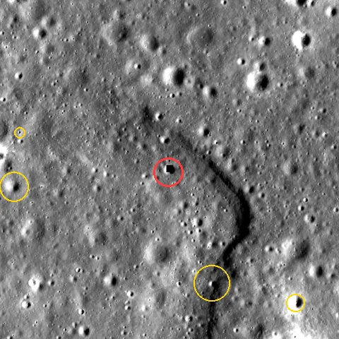
S10 互動系統
這些方法實作在互動網頁系統 Analog Atlas 中。系統為每個候選列出各項篩選條件的判定與地球值、查詢的用途分數與地球上限、這些判定可支持的野外活動，以及公路與航空的交通方式；互動式 3D 視覺化介面則把查詢與候選的地形並排呈現。這些功能只用來描述與檢視候選，沒有為本文的檢定增加證據；網站也註明，候選是同類場域的地點，並非已驗證的類比。圖 S11 說明系統各證據路徑的關係，表 S34 列出其搜尋模式。
2026 年 11 月新增的顯示面向。對目前檢視的候選，網站另外說明類比在哪裡成立、在哪裡不成立。篩選條件依判定（強類比、部分相符、不成立）分列，另有五個面向各給一個判定：溫度、沙塵與風、生物、地表作用過程與日照。地球端的數值是候選所在格點 2001–2025 年的氣候平均 (NASA Langley Research Center, n.d.)（2 m 氣溫及其紀錄極值與日較差、10 m 風速、550 nm 氣膠光學厚度、降水、相對濕度與紫外線指數）、窗格內裸露或稀疏植被的占比 (Zanaga et al., 2022)，以及由緯度與自轉軸傾角算出的正午太陽仰角 (Williams, n.d.)。規則是固定的；自 2026 年 11 月 12 日起只寫在本文，不再印在網站上。溫度方面，年均不高於 −20 °C 且紀錄最低不高於 −45 °C 為火星的強類比；年均不高於 0 °C、最低不高於 −30 °C 或日較差達 20 °C 為部分。對月球最多只算部分（日較差達 20 °C 或全年溫差達 70 °C），因為月球地表溫度 (Williams et al., 2017) 遠超出地球的範圍。沙塵方面，最高月份光學厚度達 0.3 且平均風速達 4 m s−1 為火星的強類比；火星平時的光學厚度約 0.3–1，全球沙塵暴時超過 5 (Lemmon et al., 2015)。月球沒有風，一律不成立。生物方面，年降水不超過 100 mm 為強類比，不超過 400 mm 為部分，並以植被設上限：窗格裸露占比 50–80% 最多算部分，低於 50% 為不成立。網站會寫出這類環境預期的微生物棲位（寒冷沙漠的隱石內生菌 (Friedmann, 1982)；極乾沙漠的石下菌與鹽殼內生菌 (Warren-Rhodes et al., 2006; Wierzchos et al., 2006)），並註明這是依環境類型推論，不是該地點的採樣結果。地表作用過程由氣候數值與篩選條件推定（風沙搬運、冷熱循環、凍融與地下冰、冰川流動、火山地形、流水）；與目標星球共有兩項以上為強類比，一項為部分。網站同時註明撞擊翻攪與太空風化在地球上沒有對應。日照方面，候選與查詢地點的年均正午太陽仰角相差不超過 10° 為強類比，不超過 25° 為部分。另有一張固定的表，列出地球上任何場址都無法重現的條件：重力（1.62 與 3.71，對 9.81 m s−2）、地表氣壓（約 10−10 Pa 與 610 Pa，對 101,325 Pa）與晝夜長度（29.5 日與 24 小時 40 分，對 24 小時）(Williams, n.d.)，地表輻射劑量（月球每日約 1.4 mSv (Zhang et al., 2020)、火星每日約 0.64 mSv (Hassler et al., 2014)，地球平均每日約 0.007 mSv (UNSCEAR, 2010)），以及地表溫度範圍 (Williams, n.d.; Williams et al., 2017)。這些面向都不參與檢索、篩選或排序，也沒有用獨立資料檢驗過；它們只是描述，門檻是為了顯示而選定的。
十個面向的模型（2026 年 11 月 13 日）。挑戰列出的考量隨後整合進同一個計分模型。每個地球窗格都計算十個面向：地形（地形編碼相似度）、表面材質（裸露地表與岩性）、熱環境、日照、水與冰（乾燥、地下冰、含水礦物）、沙塵與風、地表作用、適居性、地下、作業。面向裡的每個項目是相符（1）、部分相符（0.5）、不成立（0）或未知；未知的項目不列入計算，不當成 0。面向分數是其項目的平均，用途是一組固定的面向權重（全面向、天體生物、地下探測、乘員作業）。取自篩選條件的項目沿用原判定。新項目使用 0.5° 網格的 2001–2025 年氣候平均 (NASA Langley Research Center, n.d.)：年均氣溫與目標年均地表溫度的緯度模型相差 20 K 以內；最冷月平均日最低溫不高於 −40 °C（−20 °C 以內為部分）；平均日較差達 15 K（10 K 起為部分）；火星查詢位於塵覆蓋或沙丘單元時，另要求氣膠光學厚度達 0.3（0.15 起為部分）、10 m 平均風速達 6 m s−1（4 起為部分）。月球的沙塵項目是細粒鬆散表土（表土粗碎屑不超過 15%，30% 以內為部分）。春秋分正午太陽仰角須相差 10° 以內（20° 以內為部分）。地表作用項目依查詢地的地質背景決定：60 km 內有全新世火山 (Global Volcanism Program, n.d.)、50 km 內有已確認的撞擊構造 (Kenkmann, 2021)、沉積岩占窗格一半以上、未固結沉積物超過 30%、冰或苔原占一半以上，或沙丘超過 5%。適居性只對火星計分（極度乾燥、年均溫不高於 −10 °C、全日平均紫外線指數達 2.3、由高程換算的地面氣壓不高於 60 kPa (NOAA NCEI, 2022)，查詢地有含水礦物時另看蒸發岩）；這些是環境代理值，不是生物量測。地下面向在查詢地為熔岩平原時要求玄武岩火山地形，並看喀斯特是否占窗格 30% 以上 (Chen et al., 2017)，或 50 km 內是否有地下礦坑 (U.S. Geological Survey, n.d.)；礦坑清單以美國為主。作業面向是距道路（30 km）與距機場（300 km）(Natural Earth, n.d.)。重力、真空、輻射與晝夜長度列為極限，不計分。每個查詢都回報地球上任何窗格所能達到的最高分，作為上限。已記載的類比場址目錄不是輸入。
協定在執行任何面向搜尋之前凍結（SHA-256 1944ef91…），沿用條件篩選測試的十四個查詢、預期場址類型、命中規則（前 30 群、50 km）與隨機基準。面向排序在 7 個查詢中共得到 8 次預期類型命中，條件篩選為 2 次，僅用地形為 0 次；在條件池內隨機抽取平均為 2.81 次（p = 0.01）。事先登記的規則（命中數高於條件篩選，也高於隨機平均）成立，面向排序成為預設搜尋。這個結果的範圍很窄。8 次命中裡有 7 次是月球查詢，且都落在亞利桑那州北部的三個場址；火星 8 個查詢只有 1 次命中。撞擊場址的命中有一部分是設計使然，因為地表作用項目使用了撞擊構造清單。次要測試中，地下探測用途的 4 個查詢都有命中（共 8 次），乘員作業在 14 個查詢中只有 1 個查詢命中 2 次，天體生物在 8 個查詢中沒有命中。不含地形項目的消融顯示，全部面向為 7 次命中，拿掉水與冰面向為 14 次；執行後沒有修改規則。前一段的顯示面向維持不變，仍不參與排序。
對話搜尋（2026 年 11 月 12–13 日）。網站也接受中文或英文的文字需求，並可逐輪修改。一個十億參數的語言模型 (Meta, 2024) 經低秩調適 (Hu et al., 2022) 微調（秩 32，兩個訓練週期）後，讀取上一輪的搜尋規格與新訊息，從封閉詞彙寫出新的規格：27 個條件各帶重要度（必須、最好、避開）、45 個地區、24 個具名的月球與火星目標，以及結果筆數；遇到閒聊則寫出固定標記，不執行搜尋。模型不排序，也不描述場址。排序使用同一批地球資料表上的固定門檻，每筆結果都列出各條件背後的數值。訓練使用 36,000 輪由本計畫模板產生的合成對話；測試對話使用訓練時保留未用的說法。以正確的上一輪規格逐輪評分，舊詞彙的 65 輪手寫對話中有 64 輪整份規格完全正確；使用隨面向模型新增的八個條件的 31 輪手寫對話中有 28 輪完全正確；說法未見過的生成對話，完全正確的比例為 63%（1,370 輪）與 66%（1,384 輪）。在這些生成對話中，地區、目標、星球與筆數的正確率為 98–99%，條件組合為 63–66%；常見錯誤是把乾燥與極度乾燥混淆，或誤讀雙重否定。手寫對話的作者與模板相同，因此這些數字偏樂觀。
挑戰推薦的資源（2026 年 11 月 13 日）。挑戰頁列出十一項資源，現在全部用上：十項直接使用，一項透過鏡像使用。月球端，Diviner 全球累積產品 (Williams et al., 2017) 提供每個查詢窗格的地表日平均、最高與最低溫度，Diviner 極區資源產品 (Paige et al., 2010b) 提供 1 m 內水冰可穩定的地表比例；LOLA 平均日照 (Mazarico et al., 2011) 提供永久陰影比例；Mini-RF 圓偏振比鑲嵌圖 (Nozette et al., 2010) 與月球探勘者號的氫含量 (Feldman et al., 2001) 取自行星資料系統。地球端，JAXA Earth 資料庫 (JAXA EORC, n.d.) 提供 Terra MODIS 地表溫度 (Wan et al., 2021)、GCOM-W AMSR2 土壤水分（JAXA G-Portal 產品）與 GSMaP 降水 (Kubota et al., 2007) 的月氣候值；ESA 氣候變遷倡議的 2023 年永凍土占比 (Westermann et al., 2025a; Westermann et al., 2025b) 經由 ESA Open Science Catalog 取得。對每個候選，網站讀取 Sentinel-1 後向散射 (Torres et al., 2012)（Copernicus 資料；因 Copernicus Data Space 需要註冊，改用公開鏡像）、加拿大 RADARSAT 星座任務的緊湊極化陸地鑲嵌圖 (Canada Centre for Remote Sensing, n.d.)，以及涵蓋該地的 RADARSAT-1 存檔影像數 (Canadian Space Agency, n.d.)，處理流程依循加拿大太空總署的 SAR 教學 (Canadian Space Agency, n.d.)；另外顯示 NASA Worldview 的四季影像 (NASA ESDIS, n.d.-a)，以及透過 Earthdata Search 查到的該窗格 NASA 觀測筆數 (NASA ESDIS, n.d.-b)。RADARSAT-1 影像本身無法下載（開放資料伺服器從我們兩台主機都沒有回應），因此只使用存檔的涵蓋範圍。月球與地球的雷達波段（S 與 C）和極化方式（圓極化與線極化）都不同，所以網站只比較粗糙程度的類別（月球圓偏振比 ≥ 0.6 或 ≤ 0.45；地球交叉極化比 ≥ −6 dB 或 ≤ −8.5 dB）。
這些新數值先以計分規則測試（facets v6.1）：月球的溫度目標改用 Diviner、地球端改用地表溫度；月球顯示 1 m 內冰可穩定時，以 CCI 永凍土占比判斷地下冰；LOLA 顯示有永久陰影時，要求地球有極夜；火星適居性加入土壤水分。協定 p10（SHA-256 bbc3f63f…，在任何 v6.1 搜尋之前凍結）以相同的十四個查詢比較 v6.1 與 v6.0，要求總命中與火星命中都不少於 v6.0。v6.1 在 5 個查詢中得到 6 次預期類型命中，v6.0 為 7 個查詢 8 次；火星命中 0 次，v6.0 為 1 次；地下探測用途不變（8 次），乘員作業由 2 次降為 0，天體生物仍為 0。規則未通過，因此排序維持 v6.0。新的量測顯示在結果頁（面向旁的月球實測值，以及每個候選的地表溫度、土壤水分、降水與永凍土），但不參與排序。
以火星實測資料決定目標、生物特徵保存環境與目錄外候選（2026 年 11 月 13 日；探索性綜合階段）。在 facets v6.0 中，每個火星查詢都向地球要求同樣的東西：緯度模型的溫度、正午太陽仰角、高紫外線、低氣壓與極度乾燥。以 p9 的八個火星查詢做的診斷（因此這八個查詢已用掉）顯示，它們全都把寒冷高原排在最前面，預期的目錄場址在 500,086 個窗格中排在約第 1,800 到第 54,000 名。Facets v7 保留月球規則不變，火星查詢則依窗格的實測資料決定：OMEGA 與 CRISM 的含水礦物、SWIM 與 GRS 氫分布的冰、TES 的塵覆蓋，以及全球地質圖的地質單元。地球端只被要求符合這一類目標（冰、水成蝕變、火山或多塵）。溫度、氣壓、紫外線、輻射與重力改列為極限，並附上火星的實測值（溫度取自火星氣候資料庫 (Forget et al., 1999)）；適居性面向改為依 Hays 等人 (Hays et al., 2017) 的分類，比對這個窗格能提供哪一類生物特徵保存環境。
協定 p11（SHA-256 93cd57c1…，在其查詢的任何搜尋之前凍結）使用十六個取自著陸點與探索區文獻的新火星查詢，預期類型也依文獻寫定。兩組規則都沒有在任何查詢的前 30 群中找到預期類型的目錄場址：v7 為 0，v6.0 為 0；條件池內隨機抽樣合計平均 0.92，全部窗格隨機為 0.17。目錄中的火星類比場址太少，這個檢定的檢定力很低；但事先登記的規則沒有通過，因此火星維持 v6.0，新的火星數值只顯示、不參與排序。天體生物用途另外檢查候選是否靠近有定序紀錄的極端環境微生物，使用 32,151 筆帶座標的 MGnify 樣本 (Richardson et al., 2023)（其中 1,054 筆來自溫泉、鹽湖、冰與凍土、沙漠土壤與地下環境）。v7 的 480 個前段群組中只有 1 個在這類樣本 50 km 內（隨機平均 2.6，單尾 p = 0.91）；v6.0 有 68 個（p < 0.005），但它在各查詢間重複挑選採樣密集的安地斯高原（48 個前三名中心只對應 18 個地點），反映的是極端微生物採樣集中在哪裡，不是獨立的支持。天體生物用途仍未通過驗證。
我們也列出目錄外的候選：在旗艦目標中排名前段、距任何目錄場址至少 100 km，且不在南極、阿塔卡馬、冰島與夏威夷的窗格。對其中八個人工查證文獻後發現：兩個是 1964–1970 年的 Apollo 地質訓練場（奧勒岡中部，擁有 Artemis 南極資源用途的最佳地球上限；以及索諾拉的 El Pinacate，地下探測用途中月球天窗坑的第一名）(Phinney, 2015)；兩個已有人提出或使用為類比、但不在我們的目錄中（Harrat ash Shaam 玄武岩高原，Marius Hills 天窗坑第一名；Chott el Djerid 鹽湖，Jezero 第五名）；一個只有一篇火星類比研究（Victoria Island 西部，某個 Artemis III 區域的第一名）；另外三個我們沒有找到類比研究（Harrat Khaybar 與 Rahat 熔岩原、錫斯坦盆地、阿拉斯加 Kuskokwim 河中游）。這些是提案，不是驗證過的類比場址；網站會列出每個候選哪裡相符、哪裡不相符。
查詢是以月球或火星某點為中心、邊長 L ∈ {20, 40, 80} km 的方形窗格；候選是同尺度的地球窗格。證據分成四條路徑（圖 S11），組合成表 S34 的搜尋模式。只看地形模式檢驗 C1，條件篩選模式檢驗 C2 與 C3，其他兩種模式是依用途而設的延伸。
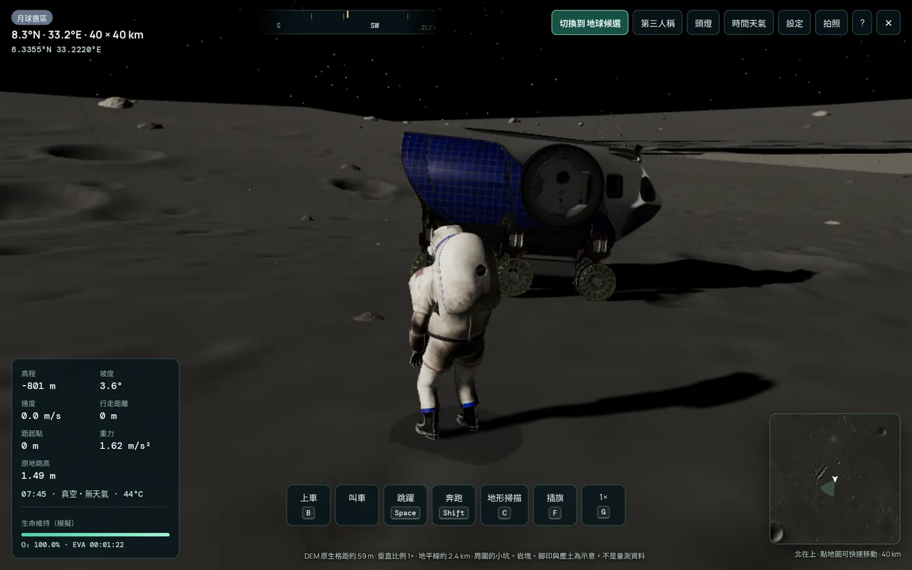
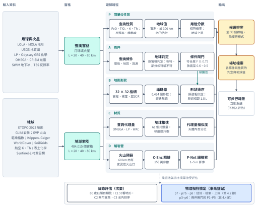
| 模式 | 候選 | 排序依據 | 方法 | 結果 |
|---|---|---|---|---|
| 物理相符檢定 | 條件篩選池、隨機窗格、依性質比對集合 | — | 4.3–4.5 | 5.1–5.3 |
| 只看地形 | 全部窗格 | 地形形狀 | 4.6 | 5.4、5.5 |
| 條件篩選 | 條件池 | 地形形狀 | 4.2、4.6 | 5.5 |
| 地形＋材質 | 全部窗格 | 地形形狀與材質代理量 | S7 | 5.4、S8 |
| 熔岩管 | 火山預篩優先 | 跨天體編碼器（C-Enc） | S9 | 5.4、S10 |
S11 事後綜合分析
以下分析是在確認結果之後才定義的，屬探索性分析；涉及檢索的部分沿用凍結的 p8 設定、折與種子。權重與容差。對每個查詢與用途，以在可用性質上濃度為 1 的 Dirichlet 分布抽出 1,000 組權重，並把所有容差乘上 0.5、1.5 與 2，重新計算地球上限（圖 S12）。基岩軌。以每個窗格內至少三筆 GEOROC 火山岩或深成岩分析的全岩中位數，取代資源分數中的表土與航空值。巢狀尺度。在每個 40 km 窗格內以 1 km 格點取樣原生航空格網，ESA WorldCover 顯示水體至少 10% 或樹林、農地與濕地至少 30% 的格點予以遮罩，再以 1–40 km 的區塊與每個月球與火星查詢比較 K 與 Th（表 S35）；未遮罩格點不到一半的窗格不予分析，因此排除了 Cinder Lake、Sudbury 與 Mistastin，Mono Lake 窗格則仍受湖面影響。空間基準與容差階梯。在 p8 的補值折上，比較取最近 16 個訓練標籤的反距離加權、只用位置的高斯過程（徑向核，每折最多 2,500 個訓練標籤）、樹模型與共變量最近鄰，並把所有容差乘上 0.5 與 2 重算檢索效率（表 S36）。
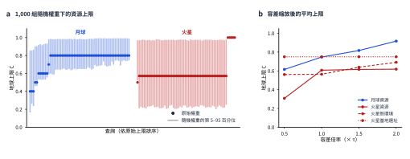
| 場址 | 衰減比例 | 最低 K，1 km（wt%） | 最低 K，40 km（wt%） | 相符區塊，1 km（%） | 相符區塊，4 km（%） | 相符區塊，40 km（%） |
|---|---|---|---|---|---|---|
| 月球環形山國家紀念區（愛達荷） | 0.05 | 0.48 | 1.65 | 0.0 / 0.3 | 0.0 / 0.0 | 0.0 / 0.0 |
| 熔岩床國家紀念區／藥湖火山（加州） | 0.44 | 0.01 | 0.90 | 7.4 / 14.5 | 7.0 / 12.8 | 0.0 / 0.0 |
| 辛德湖人造坑場（亞利桑那） | 0.51 | – | – | – | – | – |
| SP火山口與黑點熔岩流（亞利桑那） | 0.41 | 0.43 | 1.27 | 0.2 / 0.5 | 0.0 / 0.0 | 0.0 / 0.0 |
| 巴林傑隕石坑（亞利桑那） | 0.16 | 0.61 | 1.19 | 0.0 / 0.0 | 0.0 / 0.0 | 0.0 / 0.0 |
| 薩德伯里撞擊構造（加拿大安大略） | 1.00 | – | – | – | – | – |
| 死亡谷國家公園（加州） | 0.01 | 0.38 | 2.05 | 0.0 / 0.9 | 0.0 / 0.0 | 0.0 / 0.0 |
| 派洛特谷乾鹽湖（猶他） | 0.09 | 0.50 | 1.21 | 0.0 / 2.2 | 0.0 / 0.0 | 0.0 / 0.0 |
| 維德谷（亞利桑那） | 0.44 | 0.30 | 0.99 | 0.1 / 8.5 | 0.0 / 5.3 | 0.0 / 0.0 |
| 火星沙漠研究站（猶他漢克斯維爾） | 0.00 | 0.74 | 1.40 | 0.0 / 0.0 | 0.0 / 0.0 | 0.0 / 0.0 |
| 皮爾巴拉德雷瑟組（西澳） | 0.00 | 0.14 | 0.98 | 1.6 / 7.9 | 0.0 / 2.0 | 0.0 / 0.0 |
| 阿卡魯拉（南澳） | 0.00 | 0.36 | 1.43 | 0.3 / 0.0 | 0.0 / 0.0 | 0.0 / 0.0 |
| 米斯塔斯汀（卡梅什塔斯坦）撞擊坑（拉布拉多） | 0.51 | – | – | – | – | – |
| 莫諾湖（加州） | 0.32 | -0.10 | 2.54 | 2.4 / 2.1 | 2.1 / 3.2 | 0.0 / 0.0 |
| 安博伊火山口與熔岩原（加州莫哈韋） | 0.00 | 0.58 | 2.15 | 0.0 / 0.0 | 0.0 / 0.0 | 0.0 / 0.0 |
衰減比例：ESA WorldCover 中水體至少 10%、或樹林、農地與濕地至少 30% 的格點；衰減格點超過一半的窗格不予分析（–）。Mono Lake 仍受湖面影響。
| 目標 | R² 樹模型 | R² 共變量最近鄰 | R² 反距離加權 | R² 高斯過程 | RE 估計（0.5 / 1 / 2 τ） | RE 篩選（0.5 / 1 / 2 τ） |
|---|---|---|---|---|---|---|
| FeO | 0.47 | 0.38 | 0.28 | 0.04 | 0.31 / 0.52 / 0.67 | 0.03 / 0.02 / 0.09 |
| TiO₂ | 0.31 | 0.24 | 0.27 | -0.04 | 0.53 / 0.69 / – | 0.11 / -0.38 / – |
| K | 0.65 | 0.53 | 0.46 | 0.12 | 0.35 / 0.58 / 0.77 | -0.10 / -0.18 / -0.38 |
| Th | 0.44 | 0.29 | 0.12 | 0.05 | 0.50 / 0.77 / 0.95 | 0.00 / -0.01 / -0.06 |
| K（火星足跡） | – | – | – | – | 0.13 / 0.27 / 0.27 | -0.14 / -0.20 / -0.32 |
折、標籤與 100 km 緩衝與 p8 相同；火星足跡一格不計算 R²（為窗格估計的足跡平均）。「–」：無法評估（可評估的查詢少於 2 個）。
配對軌、支撐階梯、任務地圖、位移與 Apollo 對照（v9）。配對比較使用兩條軌都有值的窗格（FeO 616 個、TiO₂ 615 個、K 332 個、Th 274 個、全部四項 88 個），並在這 88 個窗格內分別以兩條軌重算月球資源上限。支撐階梯在巢狀分析上增加兩階：每個至少有三筆同時含 K 與 Th 之 GEOROC 分析的窗格內的個別分析（6,140 個窗格；137,673 筆分析），以及所有無衰減疑慮之被涵蓋窗格的足跡尺度值（月球核 4,085 個、火星核 3,667 個）；圖 3a 的巢狀地圖以 1 km 格點在 Craters of the Moon 的索引窗格周圍取樣北美格網。任務地圖為每個有實測值的地球窗格，計算六個南極查詢的資源用途分數（取六者中最高），以及 Jezero 撞擊坑的資源與熱環境用途分數，並標出索引窗格在 40 km 內的已編目非風成場址。位移向量連接共用同一候選池之查詢的 K 與 Th 幾何平均，與該池被涵蓋窗格的足跡 K 與 Th 中位數。Apollo 分析是 Astromat 彙編中的玄武岩全岩分析（月球玄武岩分類、全岩、含 TiO₂；Apollo 16 號為非月海樣本而排除），其中 923 筆有 FeO 與 TiO₂。大陸風化水準使用 K 高於 0.05 wt% 的無衰減航空窗格（澳洲 2,684 個、北美 1,480 個），以及 SoilGrids 0–5 cm 每單位黏土的陽離子交換容量。